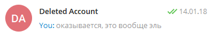
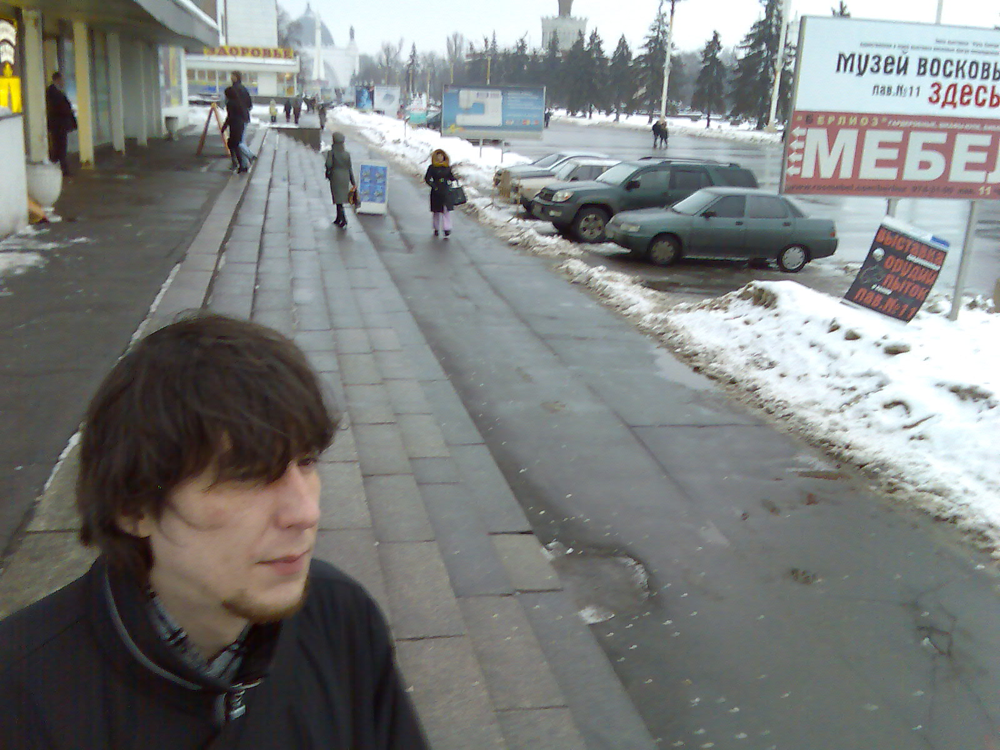
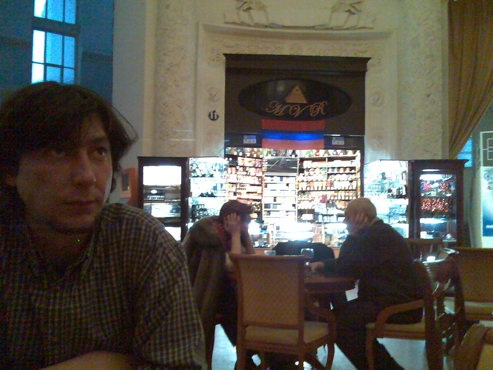
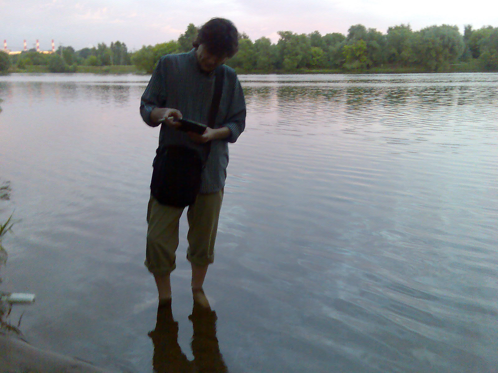
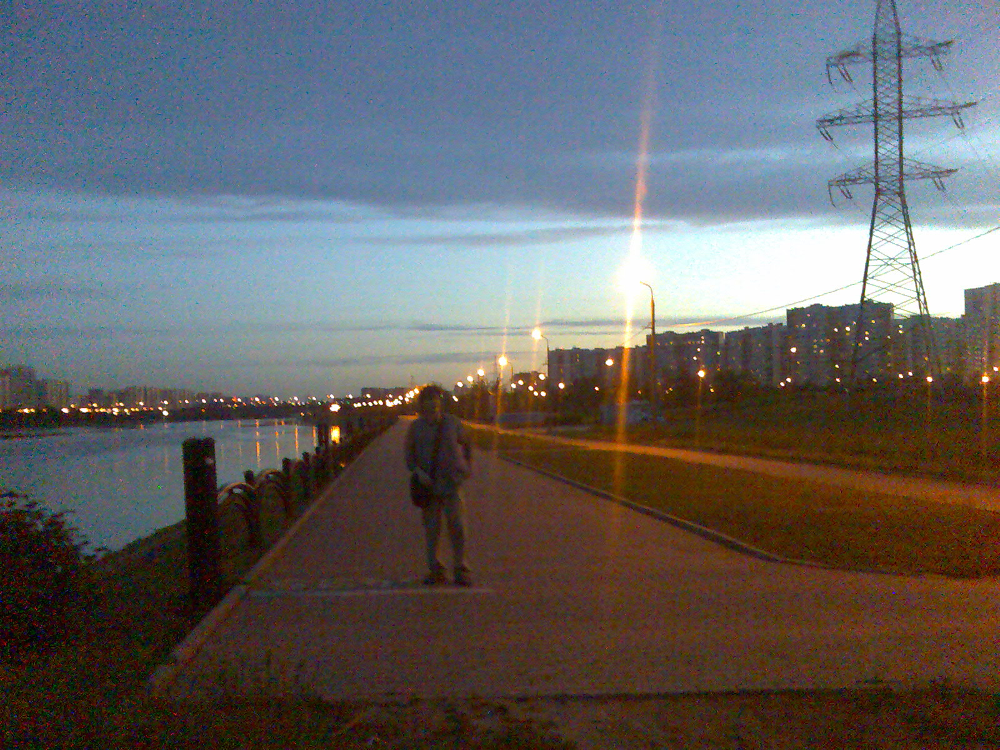
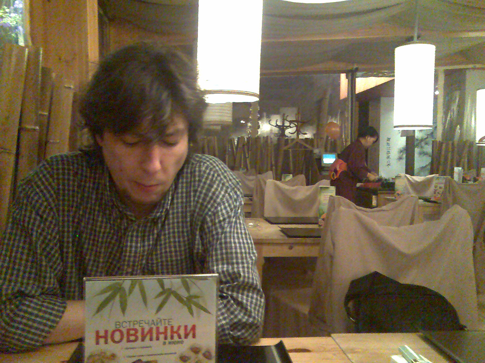
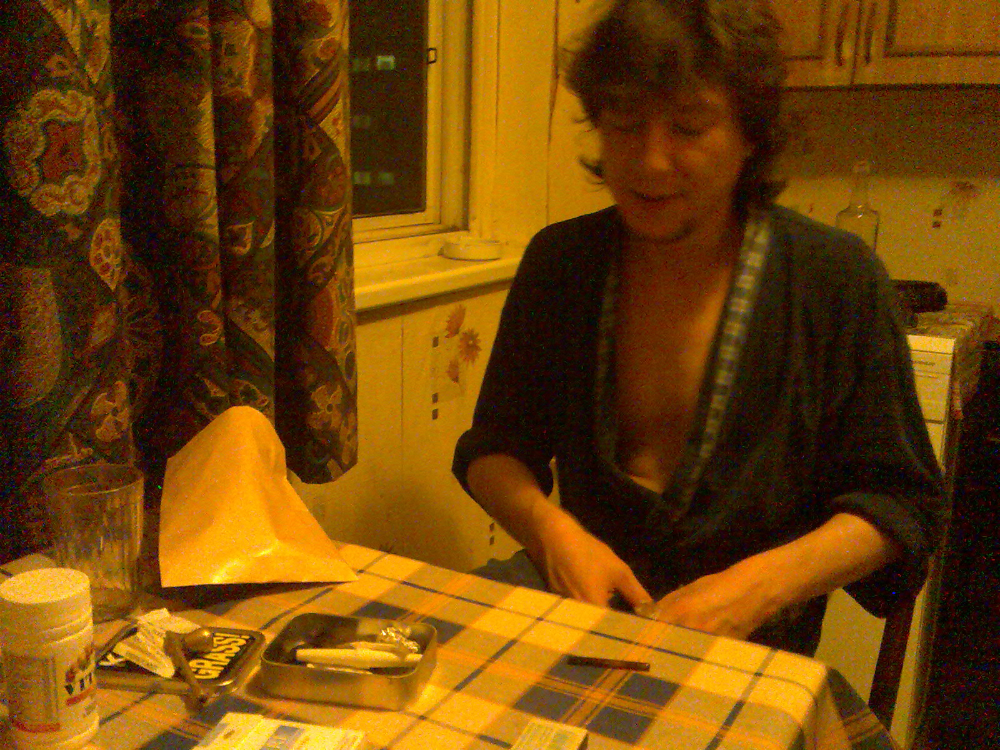
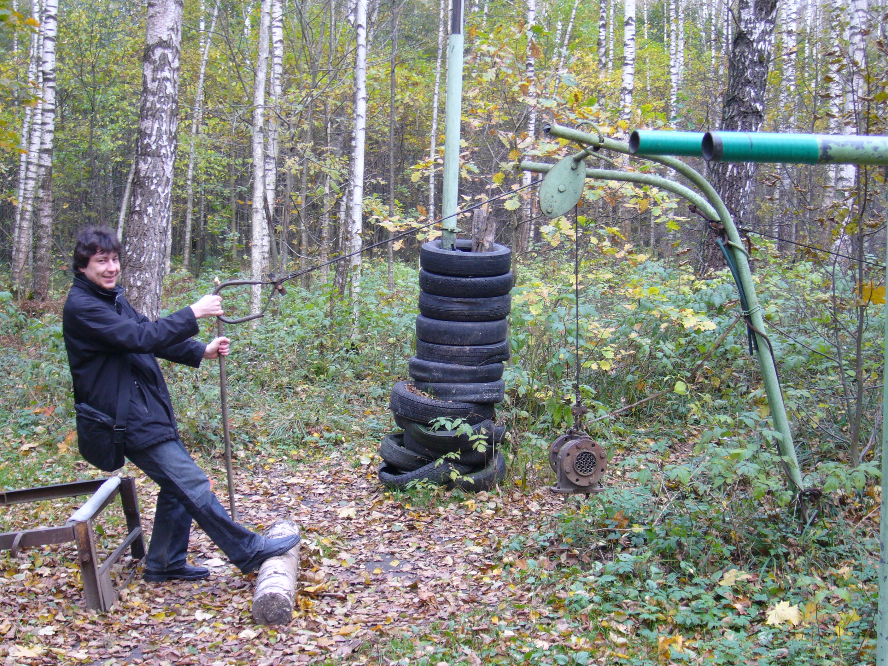

А я всегда мечтал о компе, для игр.
в классе 3,4-м купили БК. Играл упоенно, потом ко мне Тимур заехал как-то (ему чуть раньше купили).
И с тетрадки набил код, который рисует самолетик.
Я подумал "хуйня какая-то", вежливо похвалил и предложил дальше играть.
потом наигрался, и как-то случайно инструкцию открыл по бэйсику и понеслась. Потом ZX, бэйсик, ассемблер.
В школе на информатике свысока на всех смотрел :-)
Здесь будет много про меня, и сквозь это придется продираться. Моя задача ведь не только дать факты из жизни. Я вспоминаю истории, в которых участвовали мы оба. Пишу, как я к нему относился. Хочу показать, что он был важным человеком в моей жизни. Так что это и про меня.
Утром 4 февраля 2020 года, около 11 часов, я сидел на работе, мы обменивались с Эльдаром малозначительными сообщениями в Skype, как это часто бывало. Он написал, что "приложился к стакану": грустно, пишет, толковый коллега уволился. Я понимал, что у него и так назревало. За несколько дней до этого умерла мама бывшей жены. Потом он ещё написал, что тётя Фая хочет продать дом и перебраться в Самару к родственникам. Этот дом был большой частью его жизни: он проводил там летние месяцы в детстве, и потом на протяжении всей жизни ездил туда летом отдыхать, в этот дом, к тёте — это называлось "в Самару". Однажды мы ездили вместе, потом расскажу. Спрашиваю: и что же, не будешь больше туда ездить? Не знаю, говорит, может и съезжу ещё: там кемпинг за забором. "Побродить, так сказать, по детству" — так и написал, дословно. Через час пишет: "Лайфхак, когда в глазах двоится, надо ладонь перпендикулярно приложить к носу и смотреть ведущим глазом в тему. Второй можно не замжуривать." Ну, думаю, понятно: продолжает выпивать. Пишу: "Ты там на балконе осторожнее". Знал, что он курить на балкон ходит, обсуждали за несколько дней: мол, холодно, февраль всё-таки. Отвечает: "нее, это для просмотра телека". Такие вот пустяки. Это я получил в 12:25, а у него в Москве было, соответственно, 14:25.
Потом я как-то закрутился по работе, и больше мы в тот день друг другу не писали.
На следующий день я заболел, и болел потом с неделю. 12 февраля послал ему какую-то ссылку. Мы часто обменивались ссылками на показавшиеся интересными истории в интернете или смешные картинки. Смотрю: не прочитал. И на следующий день. Skype же ещё показывает, когда пользователь в последний раз был в сети. Ну, показывает "несколько дней назад" или как-то так. Ладно. Где-то в подсознании прикидываю варианты. Подумал, может он в Самару поехал. У него же двоюродный брат умер за несколько недель до этого. Может, думаю, поехал помочь, или на сколько-то дней (типа "на 40 дней"); может, с родителями. Или, может, взломали аккаунт в Skype, или другие какие проблемы технические? Может, Skype сбоит, не показал оповещения? Потом, закончили же разговор мы на том, что он выпил: ну, может, запой? Но вроде запой никогда не был ему препятствием выйти в интернет или написать… Заболел? Попал в больницу? Непонятно.
20-го февраля я начал уже беспокоиться. Написал на электронную почту. Написал в Google Hangouts. Позвонил. "Номер временно недоступен" или что-то такое. Перезвонил ещё через пару дней. Долгие гудки, трубку не берут. Вечером — "номер временно недоступен".
Я решил подождать ещё несколько дней. В конце концов, говорил я себе, если бы было что-то серьёзное, то я бы уже наверное знал. Как? Ну, как-то. Связался бы кто-нибудь со мной. Может, если он в больнице, сказал бы родителям мой номер, и они бы позвонили. В принципе, я не знал, чего я жду: у меня не было никакого плана, как мне про него хоть что-нибудь узнать. Домашнего телефона я не знал. Родителей никогда не видел, и телефонов их у меня, конечно, не было. В социальных сетях Эльдар не бывал. Я был уверен, что все коллеги, с которыми мы когда-то вместе работали и контакты которых у меня остались, ничего не могут знать: все уже много лет не работают там, с Эльдаром давно не общаются, многие и в России уже несколько лет как не живут. Я был уверен, что никаких других контактов у меня нет: когда я там работал, это еще была эра до смартфонов. Я не особо берёг номера, которыми не пользовался регулярно, ну и сменил за это время уже пяток телефонов, на каком-то этапе наверняка всё потерялось. Я знал одного друга детства Эльдара, но у меня не было его контактов, я и фамилии его не знал. Я знал его бывшую жену, но думал, что и её контактов у меня нет.
На его номер звонил каждый день по нескольку раз. То номер недоступен, то гудки.
4-го марта я ещё раз просматривал свои контакты и нашёл в telegram контакты сразу двоих, кто мог что-то знать: один контакт — бывшей жены Эльдара Олеси, другой — нашей общей коллеги Юли, которая, кажется, могла ещё работать в NetCracker'е. На следующий день, 5 марта, я написал Юле. Было, конечно, неудобно, потому что в последний раз мы общались лет 5-7 назад: как раз Эльдар нас свёл. Он к тому моменту уже давно работал из дома и в офис заезжал редко; я тогда работал в нескольких минутах от NetCracker'а, и вот в один из его приездов он предложил нам втроём встретиться на набережной канала Москвы-реки, между Кожевнической улицей и Космодамианской набережной.
Написал ей, жду. Ничего. Пока ждал, нашёл ещё контакт бывшего начальника (и, формально по крайней мере, начальника Эльдара). Даже начал уже ему писать, но тут Юля ответила.
Есть такое чувство: "я этого так долго боялся, и вот оно происходит прямо сейчас". Это как, не знаю, ты может всю жизнь боялся попасть в аварию – и вот ты сидишь в автомобиле и понимаешь, что вот прямо сейчас его крутит по дороге, потому что за мгновение до этого в него врезался тягач. То, что происходит, при этом особенно ужасно, а ты полностью парализован. У меня уже на тот момент были плохие предчувствия. Когда человек на месяц пропадает, это не может ничем хорошим кончиться; и всё же, до последнего теплилась надежда, что, может, как-то ещё нормально всё разрешится. Ну даже если плохо — ну, как-то так, что будем думать, что дальше делать; может, помочь чем-то надо будет.
Теплилась надежда на хорошее, подтачивал страх и предчувствие плохого. И всё же, я не ожидал увидеть того, что увидел. Сидел, перечитывал несколько раз.
Андрей, привет.
У меня для тебя ужасные новости
Нам сообщили, что 4 февраля Эльдар умер.
Подробностей никто не знает
В глазах потемнело, кое-как видел только это окошко с сообщениями. Сердце колотилось, грудь распирало, было ощущение почти физической боли.
Жизнь разделилась на "до" и "после".
Тут может возникнуть вопрос: не преувеличиваю ли я, не нагнетаю ли патетики, когда пишу вот это, про "до" и "после" и так далее? (Кстати, думаю, Эльдар бы здорово посмеялся, если бы прочитал эти достаточно громкие слова, не соответствующие обыденному стилю нашего с ним общения…) Кем же он для меня мог быть, если я и родителей его не знал, и общих друзей у нас не было?
Если бы он был моим другом, то ведь тогда сработал бы тот волшебный механизм, что я как-то узнал бы, что с ним случилось, почти сразу же?
Что это за дружба такая, если этого ничего не произошло, и меня не было на его похоронах? Если когда было "9 дней", я ещё даже не знал, что его нет в живых? Если и на 40 дней меня не было?
Я не думаю, что мне надо доказывать, что наша дружба была настоящей и соответствовала каким-то стандартам. Мне кажется, достаточно моего слова: я считал Эльдара своим близким другом. Одним из трёх самых близких друзей, и одним из шести самых близких людей. Я думаю, что и он мог про меня сказать примерно то же, и цифры были бы похожи. Может быть, я и был плохим другом, но тут ведь не о том: он был мне другом.
Вот история нашей дружбы, вкратце.
Мы работали вместе в NetCracker'е, и тогда же подружились — это было где-то с 2006-го по 2008-й. В те годы мы виделись почти каждый рабочий день, вместе ходили обедать, после работы обычно сколько-то времени ещё общались. Сначала на площади Павелецкого вокзала, пока там был благоустроенный сквер, который потом разрыли и превратили в многолетнюю стройку; потом у музея Бахрушина (это называлось у нас "под деревом"). Иногда ходили в кафе: поболтать, выпить, даже поиграть в шахматы.
Параллельно мы довольно много переписывались, тогда ещё в ICQ. У меня сохранилась эта переписка (забегая вперёд: у меня вообще сохранилась почти вся наша переписка). За эти пару лет она составила примерно 20,000 сообщений. Я перечитывал её после того, как узнал о его смерти, и на то, чтобы прочитать сообщения за этот период, у меня ушла почти неделя по 4-5 часов в день. Простая арифметика: на одно сообщение в среднем секунды 3-4, итого часов 20, если бы читать непрерывно. На то, чтобы написать это, я полагаю, у нас ушло в несколько раз больше чистого времени. Помимо стандартных ссылок на смешные картинки и истории (тогда еще в основном в ЖЖ и на behigh), а также координационных сообщений типа "пошли курить", "во сколько домой", "куда идешь обедать", мы общались в выходные, общались поздно вечером, общались в те дни, когда кто-то болел или отсутствовал по другим причинам.
Кому ты будешь писать в среднем по 10-15 сообщений в день, почти каждый день на протяжении пары лет? Человеку, с которым тебе легко общаться, с которым тебя объединяет взгляд на мир (ладно: не всегда объединяет, но ты принимаешь его взгляд и знаешь, что твой взгляд тоже будет принят, его не надо скрывать и защищать), с которым у тебя есть общий культурный фон, который понимает твои шутки и сам умеет насмешить. Человеку, у которого, ты знаешь, всегда найдется на тебя время, и с которым не надо слишком опасаться, что что-то, что ты напишешь, покажет тебя в дурном свете.
По-моему, это и значит: другу.
В конце 2008 года меня уволили из NetCracker'а, и мы перестали часто видеться. Эльдар вступил в период некоторой нестабильности в плане работы, которая "завершилась" его негласным переходом на работу из дома.
Мы продолжали общаться через ICQ, потом Skype, потом Telegram и наконец снова Skype. С 2011 по 2020 годы наша переписка составила еще примерно 50,000 сообщений (данных с 2009 по 2011 у меня нет). Интенсивность в последние годы была меньше, чем когда мы работали вместе. Я связываю это, во-первых, с тем, что ушёл пласт "координации", ушёл общий ежедневный материал; во-вторых, с тем, что у меня многократно возросло количество ежедневных хлопот (отвести сына в сад; убраться дома в выходные и так далее). В то же время, у меня всегда оставалось чувство, что с обсуждением любой глупости я могу безбоязненно обратиться к Эльдару. Может показаться, что в каком-то смысле тогда, в 2008, наши пути как будто разошлись: я сменил три места работы, женился, у меня родился сын, я переехал в другую страну, и за все это время мы встретились дай бог 30 раз. Тем не менее, у меня никогда не пропадало ощущение, что Эльдар всегда рядом, на расстоянии вытянутой руки: просто потому, что мне достаточно было достать телефон, чтобы начать обсуждать что-то, что меня волновало. В определенном смысле он был ближе многих других, с кем меня связывает намного больше "реальной жизни", и поэтому с ним было обсуждено больше, чем со многими другими.
Я помню, например, как осенью 2019-го, за три-четыре месяца до описываемых событий, как-то вечером я сидел на курсах немецкого. Мне было довольно одиноко, и я написал ему: какие-то тривиальные сообщения, какие-то наблюдения. Он что-то ответил — и вот уже на душе становилось легче, было не так одиноко. А вопроса, кому написать в 8 вечера, передо мной не стояло: конечно, Эльдару. У него найдётся для меня время. У него мои сообщения не вызовут недоумения. Так было и во многих других ситуациях.
Мне хочется думать, что у нас был общий язык в этом общении. Я, как мне кажется, хорошо понимал тон его сообщений, а он точно понимал мой. Отчасти потому, что этот язык формировался ещё тогда, когда мы виделись каждый день, и затем непрерывно поддерживался. Отчасти потому, что я знал, что он добрый человек, легко и с юмором относящийся к жизни, и поэтому я никогда не ждал подвоха, мог быть самим собой в своих сообщениях и не пытаться вычитывать скрытый смысл в том, что он писал.
Эти черты его характера были причиной, почему я делился с ним очень многим: для меня это был не только способ "выпустить пар", но и по-своему критерий нормальности: если Эльдар не сказал, мол, что-то не так с твоим отношением к тому-то, или что-то ты неправ, то я считал, что, пожалуй, всё со мной нормально, если уж такой человек согласился. Для меня, не так легко относящегося к жизни, поделиться с ним каким-то переживанием или проблемой означало возможность и самому взглянуть на них проще. Своим лёгким отношением к жизни он как будто и мне её облегчал.
Именно потому, что он был для меня всегда "на расстоянии вытянутой руки", и именно потому, что он играл такую важную роль для меня — "мирил с жизнью", — боль этой утраты огромна, и, наверное, мой тон может показаться неестественным.
В предыдущих абзацах я, возможно, несколько прикрыл и приукрасил факт, который можно выразить так: наша дружба была во многом виртуальна. Хорошо ли это было для него? Не мешало ли ему? Не являлось ли суррогатом жизни, которую он мог бы вести, если бы виртуальный мир не был так комфортен: там и дружба, там и работа, там и развлечения? Эту тему я еще затрону в дальнейшем. Однозначного ответа у меня нет. Для меня наша дружба всегда была главным, а её форма — второстепенным. Я надеюсь, что и я для него был на таком же расстоянии вытянутой руки, как он для меня, и что наше общение приносило ему хотя бы сравнимое количество радости с тем, которое оно приносило мне. Если это было так, то я — лично я — вовсе не переживаю за этот виртуальный характер.
Наши пути разошлись только 4 февраля 2020 года — в день его смерти.
Всё, что было связано с Эльдаром и казалось раньше обычным, повседневным, привычным, стало вдруг важным и приобрело новый смысл. Задним числом я понял, что наша дружба была чем-то очень большим и важным в моей жизни. Теперь, когда это в один момент стало прошлым, умирала и эта часть меня. Громкие слова и сильные чувства не соответствовали той привычной и повседневной дружбе, пока она у нас была, но подходили к её утрате.
Ощущение, что что-то, что было еще недавно естественным, как воздух, осталось теперь только в памяти, убивало. Хотелось с кем-то поделиться памятью, но было не с кем. Я понимал, что я пропустил и похороны, и поминки, и девять дней — моменты, когда близкие люди собираются и делятся этой памятью. У меня возникла потребность написать эти воспоминания. Не так душевно, как слезы или речь в кругу родных и близких, на кладбище или за поминальным столом; но по-своему соответствует нашей "виртуальной" дружбе и "виртуальной" составляющей жизни, которую Эльдар всегда, как мне кажется, выбирал.
Я вот пишу про себя, про дружбу, обходя самое главное: с человеком, который был мне дорог, произошло непоправимое и окончательное. Можно как-то описать, что твоему другу не повезло или с ним случилось несчастье. Но когда ты понимаешь, что ты есть, а его нет, для этого слов я не могу подобрать. Как будто несправедливость, но чудовищного, космического масштаба. За что?! Почему ещё вчера мы вели схожий образ жизни, делали похожие выборы, радовались и боялись схожих вещей, по крайней мере в масштабах теперешней разницы. А теперь… Для меня внешне всё осталось как будто так же. Заботы и суета никуда не делись, и вот я выбираю продукты в магазине, меняю камеру на велосипеде, заскучал на детской площадке. А его больше нет. Я могу выбирать, лечь спать пораньше или почитать книгу. Его больше нет. Я замерз, засидевшись на балконе, и собираюсь уйти в тёплую комнату. Его нет. Жизнь для остальных идёт своим чередом, а его нет. От несправедливости этого "выпавшего ему жребия" начинаешь сходить с ума. Всё, что я тут написал, это какие-то приближения, костыли для сознания. Всё это так не работает: нет жребия, нет несправедливости, но понять я этого не могу. Если этого нет, то почему так больно?
Беспомощность. Я всегда относился к Эльдару как к старшему и более мудрому товарищу: отчасти из-за того, что он и был старше на шесть лет, а отчасти из-за его спокойного отношения к вещам, что для меня выглядело как умудренность. Поэтому в нашем общении подсознательно я ждал совета или ободрения. И до сих пор — и, наверное, еще долго такое продлится — нередко моим первым порывом становится рассказать про что-то, чтобы получить такую "помощь", и естественнее всего было бы рассказать ему… Потом я вспоминаю, что я больше не нахожусь в положении, когда мог бы просить у него помощи. В каком-то смысле это ему как будто нужна — или как будто была нужна — моя помощь. Но оказать её я уже не могу, и никто не может: каковы бы ни были детали, в конце он был один, беспомощный перед лицом смерти.
Необратимость. Тогда чего-то не доделал или не досказал, а сейчас уже не доскажешь и не доделаешь. Ничего не исправится и не добавится для нас с ним и просто для него самого. Приходят в голову и самые глупые, простые, бытовые какие-то вещи, и что-то более серьезное, что, теперь понимаю, надо было торопиться делать. Он уже никогда не приедет ко мне в Мюнхен. Я, приехав в Москву, не встречусь с ним выпить пива и поболтать. Мы не съездим ни "в Самару", ни, например (обсуждали как-то давно в порядке шутки: а почему бы мол и нет), в Северную Корею. Мы не встретимся два раза вместо одного за этот год; потому что, видит бог, если бы я мог, я бы пешком пришел, на коленях бы приполз ради этого, и не два раза, а сколько было бы возможно. Он не сходит на концерт, не посмотрит фильм, который выйдет через полгода, не съездит на море. Я греюсь на весеннем солнце, смотрю на облака — а все мысли о том, что у него уже этого не будет. Чернота.
С одной стороны, я знал теперь главное: Эльдара больше нет. В то же время меня мучила неизвестность. 4 февраля мы переписывались. 4 февраля его не стало. Я не мог представить почти ни одного варианта, при котором это не было бы ужасно и мучительно. Эльдару было 44, хронических болезней у него не было, ни на что особо не жаловался. Воображение рисовало самые ужасные картины. Нападение. Автокатастрофа. Инфаркт, халатность врачей. Или, может, не зря я его "предупреждал" про балкон?
Полностью избавиться от этих мыслей я не мог. Перед лицом того, что случилось, детали вроде бы не имели значения. И всё же, мне было важно знать, как это произошло. Почему-то мне казалось, что это даже как будто мой "долг" перед ним как перед другом. Дурацкая ситуация: и спрашивать стыдно, как будто разнюхиваешь что-то, и неизвестность убивает, и если не спрашивать, то как будто игнорируешь что-то важное.
На следующий день я написал соболезнования Олесе, и от неё узнал телефон мамы Эльдара. Я хотел выразить ей соболезнования, надеялся, что, может быть, как-то смогу поддержать — хотя как тут поддержишь... Если я так расписался тут про себя, то бездну, в которую ввергла родителей смерть сына, я даже не мог начать представлять себе. Был и страх, что помочь я ничем не смогу, а только наоборот, верну остроту боли. Перевесило то, что мне всё-таки хотелось, чтобы его родители знали, что есть ещё люди, которым не всё равно и для кого Эльдар был важен, кроме тех, кто был на похоронах и потом. Целый день не мог решиться позвонить. Прокручивал разговор в голове, несколько раз уже держал палец над "трубкой" и был готов набрать. Решился только на обратном пути с работы. Всё, что было запланировано, было сметено и вылетело из головы в первые секунды разговора. Какие уж тут заготовки.
Хотя я не спрашивал про детали, мама Эльдара сказала мне сама, и этим спасла от месяцев мучительной неопределенности.
Эльдар умер вечером во сне. Причиной стал тромб. Когда родители вызвали скорую, тогда же вечером, он уже не дышал. Скорая констатировала смерть.
Мы познакомились в 2003 году. В феврале я начал работать в компании NetCracker, Эльдар к тому моменту работал там уже "давно", примерно с 1998-го или 1999-го. Он знал почти всех других "старожилов", людей, которые даже тогда были для меня, студента четвёртого курса, работавшего на парт-тайм, на "недосягаемой высоте". Многих он знал ещё по студенческим временам, поскольку в NetCracker тогда приходили в основном студенты МИИТа (и ещё МФТИ, но их было меньше и, как мне кажется, это было уже следующее, не первое поколение сотрудников). К тому моменту он уже "давно" съездил один или несколько раз в головной офис в Waltham'е, США. Это, кажется, была стандартная практика в первые годы существования компании, но к моменту моего прихода она была настолько далека от меня, да и от Эльдара, что это выглядело как дела давно минувших дней; ну и соответственно рассказы Эльдара, как он там пил с кем-то, кто на момент моего прихода был менеджером практически C-уровня, казались мне легендами из глубины веков.
В первый же день, когда мне дали реальную задачу, я обнаружил какое-то несоответствие того, как работало, документации. Сказал об этом руководителю нашего отдела Алексею. Тот сказал: иди мол скажи Эльдару. Я обогнул стол и немного опешил: сидит мрачный мужик с бородкой, и мне ему надо сказать что-то вроде "вам надо вот тут исправить"… Почему "мужик"? Ну, понятно: мне тогда было 21 или 22, а ему аж 27, в этом возрасте оно так воспринимается.
Время шло, я как-то притирался к коллективу. Эльдар не был самым весёлым или самым общительным, да и разница в возрасте делала его как будто не главным кандидатом в друзья для меня. Но он дружил с другими, с кем мне было проще сойтись: Максом, Лео. Мы ходили все вместе на обеды (в замечательную столовую "Золотой Кот" с атмосферой прямо из 90-х); иногда вместе уходили с работы, играли по вечерам в Counter Strike: была такая традиция, после 18:00 или какого-то времени в сетке включали "контру" и, кажется, "кваку", то есть Quake Arena, и играли отделами. Нередко, например, наш отдел GUI — графического интерфейса, а по-простому "апплета" — против "QA", тестировщиков, сидевших в той же комнате.
Как-то после обеда мы с ним разговорились. Совершенно не помню о чём, но помню, что разговор был из таких, за которыми понимаешь, что собеседник — "твой" человек, и вообще было интересно. Обидно: интересных деталей в памяти не осталось, а вот совершенно необязательный антураж перед глазами, как будто вчера было дело: на том же этаже, где был офис, в конце коридора, у окна. Слева были лифты, справа туалеты, и прямо где-то там можно было курить. Мы и курили.
Как-то вечером получаю от Эльдара сообщение в ICQ: "Коньяк будешь?" В офисе ещё кто-то был, но мало народу, а из нашего отдела, кажется, только я и он. Я не понял, снял наушники, подошёл к нему и спросил что-то церемонное, мол: а в какой ресторан пойдём? (Сейчас вспоминаю — давлюсь от смеха.) Да нет, говорит, прямо здесь и разольём. Достал мерзавчик, два пластиковых стаканчика, так и выпили… Вообще пара штабелей пластиковых стаканчиков штук по 100 в тумбочке — это была его визитная карточка, что тогда на "Манометре", что потом в "Парижской Коммуне".
В целом тогдашняя жизнь "входила" в меня довольно сильно. И это занятное пространство: офис тогда находился на Курской, частично в здании завода "Манометр", а частично в обычном доме в пяти минутах ходьбы оттуда. Неподалеку, буквально ещё в пяти минутах пешком жил наш коллега и друг Эльдара, Макс. Всё это было отрезано от оживлённой Сыромятнической улицы железнодорожной эстакадой, ведущей к Курскому вокзалу; с другой стороны — Яузой, с третьей — территорией Винзавода, который тогда был ещё не выставочным местом, а просто промзоной. Сейчас на этом "островке" и Винзавод, и Artplay, и Британская Высшая Школа Дизайна, а тогда там было очень тихо, пустынно, никого на улицах, а самым оживленным местом был продуктовый магазинчик советского разлива. Машины почти не ездили, ездил только трамвай. Это место можно увидеть в нескольких фильмах, "Такси-блюз" например. В тамошних двориках мы с Эльдаром, Максом, Лео, иногда кем-то ещё пили пиво и общались после работы. Об этих временах и о той компании у меня остались очень тёплые, хотя и несколько расплывчатые воспоминания.
Одним из важных мотивов в жизни Эльдара тогда было "измененное состояние сознания", "ИСС". Идея в том, что при помощи веществ или техник можно расширить своё сознание, понять что-то про себя, получить "потусторонний" опыт. Я заинтересовался, но довольно абстрактно. Мне нравилось ощущение возможности "чуда", нравилось, что вроде как можно разобраться в себе. При всём том, моё участие в этой теме ограничивалось чтением Кастанеды и игрой на варгане. Эльдар подходил с более практической стороны: пробовал сальвию, псилоцибы, мухоморы, спайсы, что-то ещё. Всё это по его рассказам, я не присутствовал. Ко всяким торчкам, которые подходили к этому всему с позиции "лишь бы торкнуло", Эльдар относился презрительно, что мне импонировало: это выглядело как надёжный защитный механизм. Мы тут мол не для глупостей собрались, не убегать от реальности и забыться в наркотическом чаду, а чтобы разобраться в себе.
Поскольку работать было намного интереснее, чем писать диплом, то я его и не писал. Летом мой научный руководитель закономерно не допустил меня до защиты и поставил условие: если хочешь учиться дальше — изволь всё лето часто ездить на базовую кафедру, тогда к сентябрю, может быть, и допущу. В связи с этим я договорился, чтобы работать в NetCracker'е поменьше, или вообще почти не работать. В августе я ездил в Вычислительный центр Академии Наук и готовил там диплом в полном одиночестве. В остальное время читал Кастанеду и ждал чуда — это как-то мирило с реальностью. Иначе рехнулся бы.
В сентябре я всё-таки защитился и снова начал работать. Следующий за этим период я помню довольно смутно. Помню, ходили временами с Эльдаром в Атриум, ели начос, запивали коньяком из-под стола, играли в игральные автоматы. Вообще, я к этому ещё вернусь потом, но скажу и сейчас: в чём мне Эльдар всегда сто очков вперёд давал, так это в умении развлекаться во всяких вот таких местах, про которые я никогда не знал, как их использовать и проходил мимо. В развлекательных центрах, парках, на ВДНХ и так далее. Казалось бы: просто закончился рабочий день, просто идём к метро. Но вот постояли, покурили, накатили, и вот уже в угаре стреляем в каком-то тире, проказничаем, на излёте вечера катаемся в магазинной тележке на площадке перед Атриумом… Весело, и как будто на пустом месте совершилось что-то значительное. Остались воспоминания.
Зимой 2003-2004 года NetCracker переехал с Курской на Павелецкую, в здание фабрики "Парижская Коммуна". Закончилась одна эпоха и началась другая. На фоне этих мест остались многие воспоминания, связанные с Эльдаром.
На шестом курсе я перестал работать, решив сосредоточиться на дипломе. Мне кажется, мы почти не виделись с Эльдаром, но, скорее всего, переписывались.
Помню, 30-го января (это 2005-й) я был в санатории по путёвке от институтского профкома и звонил Эльдару поздравить его с днём рождения. В начале разговора я прикинул в уме и спросил его с нескрываемым ужасом: "Тебе что, уже тридцатник что ли?!". Тридцатник казался мне тогда глубокой старостью. "Да не-е-е, ты чего", — ответил он, — "только двадцать девять".
Год сидения дома, защита диплома в конце, летом, поступление в аспирантуру (в основном — от армии, хотя, наверное, были и какие-то амбиции) основательно выбили из головы NetCracker. Честно говоря, я думал, что после всех периодов, когда я отваливался с работы за последние годы, я должен был там быть на плохом счету, так что и не задумывался о том, чтобы пытаться вернуться. Но примерно в июле-августе позвонил бывший начальник и предложил рассмотреть такой вариант. Не найдя причин, почему бы и не вернуться, я вышел на работу, и был крайне рад встретить знакомых, особенно Эльдара и Макса.
Жизнь вошла в размеренную, регулярную колею. Мы общались на работе, переписывались в нерабочее время. Смотрели и обсуждали фильмы и сериалы. В те времена фильмы и музыку ещё было трудно найти и долго качать из интернета, поэтому их основным источником были локальные сети. У меня была бедная на ресурсы сеть, а у Эльдара — хорошая и богатая, поэтому нередко я просил его записать мне по несколько DVD дисков. В один из таких разов Эльдар записал мне японский мультсериал "Хикару и го", речь в котором шла про мальчика, который находит на чердаке пыльный гобан (доску для игры в го), и одновременно с этой находкой встречает призрака давно умершего знаменитого игрока в го. Тот учит его игре, ну и дальше начинается восхождение Хикару ("Хикарки", как его называл Эльдар) к вершинам мастерства. Казалось бы, мультсериал — и два мужика примерно 25 и 30 лет? Но этот сюжет очень хорошо лёг на нашу натуру: решение задач и загадок, концентрация, воображаемый мир — думаю, что-то в характере, что отзывалось на эти моменты, изначально привело нас и к программированию… Всё это на фоне достаточно сказочной для нас и в принципе, и сказочно изображённой в мультфильме японской жизни. В этом было и что-то изменяющее сознание, и мы засматривались этим сериалом, проглотили его достаточно быстро, пытались заняться и го. Один раз, помнится, ходили в какой-то чайный клуб, где для нас провели чайную церемонию, а потом там можно было поиграть в го: у них были доски и камни.
И для меня, и для Эльдара это стало преходящим увлечением. Тем не менее, у меня до сих пор дома лежит доска и камни. Это могло бы стать логичным подарком на день рождения, но я свой никогда не праздновал, а Эльдару кто-то подарил раньше меня; наверное, Тимур.
Кстати. Насчёт программирования, как мы начинали. Вот что писал об этом сам Эльдар:
Shaitan:
2007-05-28 22:47:01
"Shaitan" — это был псевдоним Эльдара тогда в ICQ. Кстати, я никогда не спрашивал, почему. Моя версия: с одной стороны, он был атеистом, и это был своеобразный "кукиш в кармане" в сторону его мусульманских корней. С другой стороны, опять же, тема измененного состояния сознания предполагала выход куда-то в такие области, где "дух" был гармоничен, и "злой дух" в том числе. Не знаю.
После того, как вчера я написал предыдущую часть моего текста, мне приснился Эльдар. Что именно происходило во сне, точно не помню, ну что-то там мол Эльдар и какой-то ещё мой коллега, и мне их надо куда-то посадить, чтобы они там работали, потому что Эльдар принял что-то, во сне это выглядело как марка с ЛСД, и надо, чтобы его особо никто не видел, пока не отпустит, а рабочий день-то идёт… Это особенность сохранившейся моей с ним переписки, то есть то, что после того, как я её читаю, он мне снится.
После того, как я узнал о его смерти, я бросился собирать то, что у меня осталось в память о нашей дружбе. Фотографии — их было совсем немного. Нашёл переписку за 2003-2004 (там совсем мало) и 2006-2009 годы (там как раз те 20,000 сообщений). Начал читать их. Приходил с работы, делал дела, потом садился читать и читал по несколько часов кряду. Эффект погружения был очень сильный: во-первых, читая его сообщения, я мог практически услышать, как он произносит то, что было написано. Во-вторых, само содержание то погружало в ежедневную рутину (когда будешь в офисе? куда обедать пойдёшь? подскажи кое-что по задаче… пойдем перекурим… как насчёт домой?), то напоминало о каких-то более крупных событиях, происходивших тогда с нами и около нас, о вопросах, занимавших нас тогда. Из-за этого погружения ли, или из-за того, что я читал допоздна, пока сон не одолевал меня окончательно, и поэтому прочитанное естественным образом переходило в него, но каждую ночь мне снился Эльдар, в какой-то совершенно будничной обстановке: мы куда-то идём или где-то сидим, говорим о чём-то. Он снился мне пять или шесть ночей подряд, потом с перерывами.
Помимо ICQ за 2003-2004 и 2006-2009 годы у меня была переписка в Skype последних лет, с апреля 2017 и до последних сообщений. В ней был большой пробел: с августа 2017 по апрель 2018. Ну, подумал я, непонятно, почему так, но пристально вопрос не изучал.
Конечно, я пытался найти что-то ещё. Облазил Telegram, Google Hangouts, домотал Skype до самого начала… В Google Hangouts было буквально с десяток сообщений разных лет. Ничего больше найти не мог.
Спустя почти месяц, примерно в конце апреля я добрался до этой переписки. Читая последние сообщения августа 2017 года, я засёк там упоминание Telegram. А одними из первых сообщений апреля 2018 было "во, телеграм не работает" от Эльдара. Получается, в этот период мы общались через Telegram. Странным образом это совсем выпало у меня из памяти. Я опять полез в телеграм, зашёл в поиск, набрал начало его имени, "Эль" — дальше пока не стал. Вылез один результат:

В прошлый раз, увидев плашку "DA", я просто проигнорировал этот результат; а может и вбивал тогда имя целиком. Но сейчас глаз зацепился. Что за Deleted Account? Да и дата подходит: 14 января 2018 года… Я нажал, и по первым же увиденным сообщениям понял, что да, это и была наша переписка с апреля 2017 по август 2018. Видимо, номер телефона был снят с регистрации, и в результате его профиль был удалён, что-то такое. В любом случае, это была наша переписка, и это было самое главное. Я был очень рад, просто счастлив. Теперь у меня было всё с апреля 2017 по февраль 2020.
Этo заставилo меня ещё раз задуматься: что было до апреля 2017? Другими мессенджерами мы не пользовались, я был уверен. Да и вообще, я был уверен, что мы в основном всегда переписывались в Skype. Например, когда я работал в Одноклассниках: рабочее общение тогда шло по Skype, и я точно помню, что в том же окошке я переписывался с Эльдаром с работы. То же самое в Gridnine до этого, все 6 лет, что я там проработал… Это должен был быть Skype. Я начал смутно вспоминать, что примерно тогда же в Skype были какие-то изменения: менялся протокол, клиент. У меня на ноутбуке тогда был Linux, и найти этого нового клиента было делом не из лёгких. Я вспомнил, что одним из основных изменений стало то, что сообщения стали храниться на серверах Microsoft (купившей Skype за несколько лет до этого). А до этого, получается, они хранились только локально у общавшихся пользователей. То есть теоретически, если бы у меня был где-то старый клиент, там могли бы быть и эти сообщения. Я достал из ящика старый ноутбук, которым уже не пользуюсь, полез искать, и нашёл. В принципе, все сообщения и чаты хранились тогда в виде базы данных SQLite, и можно было бы вытащить их так, но я воспользовался готовой программой Skyperious, которая вытащила и отформатировала мне всё в удобном виде.
Первое сообщение в этой переписке была от марта 2011 года. Именно тогда я купил этот ноутбук. Между 2009 и 2011 годами у меня был другой ноутбук, который давно уже отформатирован и был кому-то отдан. Мой рабочий компьютер тех лет также отформатирован. У меня есть робкая надежда, что, возможно, я ставил Skype на ноутбук моей мамы, и тогда там можно поискать сообщения этих лет. Когда ситуация с коронавирусом позволит приехать в Россию, я обязательно проверю это.
А пока что у меня есть переписка, покрывающая частично 2003-2004, 2006-2009, и с 2011 до 2020 годы. В дальнейшем я буду использовать её в качестве основы, то есть, буквально, в основном это будут наши с Эльдаром сообщения, плюс какие-то мои комментарии.
Но прежде сделаю пару замечаний.
Во-первых, и это главное, эта переписка ни в коем случае не может и не пытается "заменить" Эльдара (как и мои воспоминания), "компенсировать" то, что его больше нет. Да, она погружает — по крайней мере меня — в атмосферу нашего общения. Она может даже ненадолго погрузить меня в "реальность сна", в которой Эльдар как будто по-прежнему рядом. Но наутро горечь всегда возвращается в полной мере. В то же время, несмотря на то, что я атеист, я всё же считаю, что хранить память об ушедшем важно, тем самым исполняется что-то вроде долга. И здесь наша переписка служит мне верой и правдой. Может быть, послужит и кому-то ещё.
И второе: местами мне стыдно за себя в этих сообщениях. Я отчетливо вижу, где я рисуюсь, где комплексую, злюсь, загоняюсь, ною, вываливаю свои проблемы и негатив на Эльдара. Есть и хорошие, интересные вещи, и всё же во многом "я" сегодняшний откровенно не одобряю "себя" того времени. Но из песни слова не выкинешь, и переписка доступна для скачивания без купюр, и цитировать себя я буду, даже если это будет выставлять меня в плохом свете, если в целом диалог интересен с позиции памяти об Эльдаре. Кое-где в цитатах вырежу то, что не относится к сути разговора, но только на уровне целых сообщений, по крайней мере такой план.
Shaitan:
2006-11-29 13:31:19
В пятницу поперлись в театр стаса намина.
час плутали, пришли на 20 минут позже после начала.
билетерша сказала что смысла нет, он идет всего час.
Не стали брать, и тут выходит сам Намин, прошается с охранником, садится в иномарко и уезжает.
Охранник говорит "наконец-то", касса закрывается, охранник закуривает.
час плутали, пришли на 20 минут позже после начала.
билетерша сказала что смысла нет, он идет всего час.
Не стали брать, и тут выходит сам Намин, прошается с охранником, садится в иномарко и уезжает.
Охранник говорит "наконец-то", касса закрывается, охранник закуривает.
Эльдар любил подмечать забавные ситуации и здорово, смешно их рассказывал. В определённом смысле он напоминал мне этим любимого им Довлатова: короткие истории почти анекдотического характера, ироничные и одновременно серьёзные.
Shaitan:
2007-01-07 15:53:09
пиздец. щяс риэлтору звонил.
у неё во рту каша и ещё тараторит.
нихуя не понятно
у неё во рту каша и ещё тараторит.
нихуя не понятно
Shaitan:
2007-01-07 15:58:38
м. братиславская. 18000 тыщ. однушка. всё есть. 3 минуты от метро пешком.
Starikov:
2007-01-07 15:58:50
жопа?
Starikov:
2007-01-07 15:59:35
это какая ветка-то?
Shaitan:
2007-01-07 15:59:50
райончег хороший. рядом Ашан, перекресток, кино.
салатовая
салатовая
Примерно так начиналась история съёма Эльдаром квартиры на Братиславской, где он прожил потом лет пять. Тут я ещё даже не знаю, где это метро. Впоследствии оно станет у меня прочно ассоциироваться с Эльдаром, и когда я жил в Марьино и частенько бывал на Братиславской, очень жалел, что Эльдар уже не живёт там.
Shaitan:
2007-05-26 22:40:48
попытался сделать 3 подхода, по 10 отжиманий.
3-й раз асилил тока 7. щяс мускулы болят :-)
3-й раз асилил тока 7. щяс мускулы болят :-)
Starikov:
2007-05-26 22:41:33
бороть командора собрался?
Shaitan:
2007-05-26 22:41:55
себя бы забороть
Starikov:
2007-05-26 22:42:43
зачем?
Shaitan:
2007-05-26 22:43:18
в здоровом теле соотвествующий дух
Starikov:
2007-05-26 22:43:24
обалдеть
Starikov:
2007-05-26 22:43:35
срочно звони в секцию карате
Shaitan:
2007-05-26 22:43:54
ууу,секция это круто слишком
Shaitan:
2007-05-26 22:44:14
пока ограничусь зарядкой вечерней
Starikov:
2007-05-26 22:44:23
молодец!
Starikov:
2007-05-26 22:44:28
могу гантелю дать
Shaitan:
2007-05-26 22:44:50
у меня есть.
Shaitan:
2007-05-26 22:45:17
в 5-м классе помниццо купил черте где. Тащил потом
Starikov:
2007-05-26 22:48:00
я вот периодически начинаю пытаться заниматься, но максимум через неделю бросаю
тут надо что-то более строгое
качалка или хотя бы пробежка до турника
тут надо что-то более строгое
качалка или хотя бы пробежка до турника
Shaitan:
2007-05-26 22:48:57
ну хз. попробую.
"бухать после работы", вроде соскочить удалось
"бухать после работы", вроде соскочить удалось
Я с удивлением наткнулся на эти сообщения: Эльдар никогда не ассоциировался у меня со спортом. Кроме того, тут он пишет, что перестал "бухать после работы"; к сожалению, это продлилось не очень долго.
Мне всегда нравился в Эльдаре его интерес к тайнам, загадкам, да и просто к окружающему миру. Он с удовольствием смотрел "Что? Где? Когда?" и "Клуб путешественников"; кроме того, книги, которые он читал, зачастую были об исторических событиях, путешествиях, войнах. Тут он давал мне сто очков вперёд: помню, взял у него почитать "В океане Тигрис", книгу Юрия Сенкевича про его плавания с Туром Хейердалом на плоту по океану. Эльдар воодушевлённо отзывался о ней, а я как-то с трудом дочитал до конца. Во многом я мог позавидовать его эрудиции.
Shaitan:
2007-05-26 22:49:21
(смотрю "что где когда" за 86-й год, еще книги дарили)
Shaitan:
2007-05-26 23:10:19
ты в байдарках шаришь ?
вопрос из передачи:
в кадре чувак сидит в лодке на одного.
и говорит "у меня тут всякие вещи: кожанные брюки обмазанные жиром, стеклянная банка, впрочем, к делу она не относится. вопрос - что было раньше ? для чего ? и вместо чего, потом стало что ?
вопрос из передачи:
в кадре чувак сидит в лодке на одного.
и говорит "у меня тут всякие вещи: кожанные брюки обмазанные жиром, стеклянная банка, впрочем, к делу она не относится. вопрос - что было раньше ? для чего ? и вместо чего, потом стало что ?
Shaitan:
2007-05-26 23:11:10
я половину угадал
Starikov:
2007-05-26 23:11:30
я не понял вопроса
Shaitan:
2007-05-26 23:11:39
:-)
Shaitan:
2007-05-26 23:12:57
кароче, раньше мазали жыром штаны и гребли елозяя по скамье.
а сейчас заменили на спец. механизм. который называется 'банка'
а сейчас заменили на спец. механизм. который называется 'банка'
Starikov:
2007-05-26 23:13:33
ишь ты
Shaitan:
2007-05-26 23:13:59
они залажали
Shaitan:
2007-05-26 23:15:34
люди какой профессии, часто говорят с нами меньше, а пишут больше чем нам бы хотелось ?
может врачи ?
может врачи ?
Shaitan:
2007-05-26 23:15:39
пошел думать
Starikov:
2007-05-26 23:18:44
идите на хуй, какой угодно, вопрос некорректен
Shaitan:
2007-05-26 23:19:52
ну Ворошилов там еще подсказки давал, перед вопросом.
Типа несплю ночами, волнуюсь, прямой эфир, скажите мне что-нибудь ласковое
Типа несплю ночами, волнуюсь, прямой эфир, скажите мне что-нибудь ласковое
Starikov:
2007-05-26 23:20:26
ну и какй ответ?
Shaitan:
2007-05-26 23:20:32
щя...
Shaitan:
2007-05-26 23:21:30
таки врачи
Снова физкультура и спорт:
Shaitan:
2007-06-03 21:51:53
кстати, отжимания по прежнему тяжело даются.
но вроде не так болит уже
но вроде не так болит уже
Starikov:
2007-06-03 21:52:06
каждый день?
Starikov:
2007-06-03 21:52:10
и по скольку?
Shaitan:
2007-06-03 21:52:32
каждый.
пытаюсь 3 раза по 10, с перерывчиком небольшим
пытаюсь 3 раза по 10, с перерывчиком небольшим
Shaitan:
2007-06-03 21:52:46
в последний подход около 7 вымучиваю
Starikov:
2007-06-03 21:52:47
на ладонях?
Shaitan:
2007-06-03 21:52:52
на кулаках
Starikov:
2007-06-03 21:53:02
бля, силач
Starikov:
2007-06-03 21:53:09
с тобой надо поосторожнее
Shaitan:
2007-06-03 21:53:40
ага, тока пальцем не тыкай, упаду.
(в школе на ушу ходил - там научили на кулаках)
(в школе на ушу ходил - там научили на кулаках)
Лучший друг Эльдара женится.
Shaitan:
2007-06-03 23:58:28
Тимур жениццо в августе.
вчера родители знакомились. (я вроде, расказывал, там татарский клан какой-то)
его папа выкупал дочь, какой-то спец.обряд.
афигеть, 21-й век на дворе
вчера родители знакомились. (я вроде, расказывал, там татарский клан какой-то)
его папа выкупал дочь, какой-то спец.обряд.
афигеть, 21-й век на дворе
Starikov:
2007-06-03 23:58:56
прикольно
Shaitan:
2007-06-03 23:59:18
потом детали раскажет
Shaitan:
2007-06-03 23:59:34
но денег типа он сам дал отцу
Starikov:
2007-06-04 00:00:07
так вот человек ни сном ни духом, собрался сына женить
интеллигентный человек
и тут его заставляют там присказки говорить, обряды какие-то :)
интеллигентный человек
и тут его заставляют там присказки говорить, обряды какие-то :)
Shaitan:
2007-06-04 00:02:48
и это еще тока чаепитие было, типа хоть увидется впервый раз.
в планах какае-то масштабная помолвка с кучей родственников
в планах какае-то масштабная помолвка с кучей родственников
Starikov:
2007-07-28 14:00:26
дома???
Shaitan:
2007-07-28 14:00:32
да
Starikov:
2007-07-28 14:00:44
с возвращением!
Starikov:
2007-07-28 14:00:50
как отдохнул?
Shaitan:
2007-07-28 14:01:21
пасиб !
ахуенна - это еще слабо сказано
ахуенна - это еще слабо сказано
Starikov:
2007-07-28 14:03:10
сам-один отдыхал, или родственников подключил?
Starikov:
2007-07-28 14:03:29
(кстати, бухали?)
Shaitan:
2007-07-28 14:04:19
ну там по деревенски всё:
общий стол и т.п, рюмочку за обедом после работы.
я аццки бухал, вечером на берегу, с девчонками и соседскими пацанами
общий стол и т.п, рюмочку за обедом после работы.
я аццки бухал, вечером на берегу, с девчонками и соседскими пацанами
Starikov:
2007-07-28 14:06:20
купались много?
Shaitan:
2007-07-28 14:06:46
раза 4 окунулся. по мне - холодновато.
Starikov:
2007-07-28 14:06:58
гулялъ?
Starikov:
2007-07-28 14:07:04
фотки кстати будуд?
Shaitan:
2007-07-28 14:07:20
ага, в заповедник ходили.
фотки сцуко, батарейка села
фотки сцуко, батарейка села
Starikov:
2007-07-28 14:08:19
чувствуешь себя отдохнувшим?
Shaitan:
2007-07-28 14:08:45
да, будто месяц в москве не был.
надо было на 2 недели брать
надо было на 2 недели брать
Фото 2004 года.
Это он ездил "в Самару", на Волгу. Ещё одно умение Эльдара, которому я завидовал, это умение отдыхать, как я это воспринимал, "смачно". Со стороны может показаться, что ничего особенного, но я по-своему завидовал:
Shaitan:
2007-07-28 14:13:28
тут воздух блядский.
в деревне, я, к примеру, за обедом соточку.
часа через два, две пипеточки и вечером 0.5 вотки.
и хоть бы хуй :-)
в деревне, я, к примеру, за обедом соточку.
часа через два, две пипеточки и вечером 0.5 вотки.
и хоть бы хуй :-)
Starikov:
2007-07-28 14:13:42
о да
Starikov:
2007-07-28 14:13:57
прекрасная программа отдыха :)
Shaitan:
2007-07-28 14:15:02
утром встал, ведер 20 щебенки перетащил.
щец навернул, шарик покрутил, книжко почитал, пиво попил.
а там уже и вечер
щец навернул, шарик покрутил, книжко почитал, пиво попил.
а там уже и вечер
Shaitan:
2007-07-28 14:17:19
сосисок купил, картошки взял и на речку
Фото 2004 года.
Приключения и немного хулиганства. Так обычно и выглядели посиделки и приключения. Упоминающийся дорожный знак будет дальше на одной из фотографий.
Shaitan:
2007-08-11 00:52:53
спиздил знак "дорожные работы"
Shaitan:
2007-08-11 00:52:59
тяжелый сцуко
Starikov:
2007-08-11 00:53:29
3*4 метра? :)
Shaitan:
2007-08-11 00:54:05
0.9*0.9 равносторонний треугольник
Shaitan:
2007-08-11 00:54:24
"клянусь своей треуголкой"
Starikov:
2007-08-11 00:54:38
чувствую, праздник удался!
Shaitan:
2007-08-11 00:55:59
там Сашина симпотная подруга подвалила.
все расхрабрились и пошли пешком до курской.
я по дороге купил red label и прихватил заодно значог
все расхрабрились и пошли пешком до курской.
я по дороге купил red label и прихватил заодно значог
Shaitan:
2007-08-11 00:57:22
таксист порадовал.
совершенно невозмутимо и вежливо "а знак можно сзади положить"
и когда приехали "знак не забудьте, удачи вам"
совершенно невозмутимо и вежливо "а знак можно сзади положить"
и когда приехали "знак не забудьте, удачи вам"
Эльдар отлично умел придавать шуткам неожиданный оборот, переводя их сразу на другой, более высокий уровень:
Conversation started at 2007-08-23 01:11:22
Starikov:
2007-08-23 01:11:22
"В штате Флорида для секса разрешена только так называемая миссионерская позиция, а во время секса запрещено целовать грудь женщины. В Массачусетсе не разрешено заниматься любовью в позе "наездницы"."
Это я где-то в интернете прочитал, позабавило. В тот же день, вечером:
Conversation started at 2007-08-23 17:57:52
Starikov:
2007-08-23 22:30:13
обычные чуваки будут служить с нового года 1 год
Starikov:
2007-08-23 22:30:26
может, цены упадут
Starikov:
2007-08-23 22:30:34
может, народ валом повалит
Shaitan:
2007-08-23 22:31:49
у меня свои, эгоистичные цели
типа "ты пасспорт когда получишь заграничный ?"
типа "ты пасспорт когда получишь заграничный ?"
Starikov:
2007-08-23 22:32:03
а, ну это да. мне тоже очень жаль.
Starikov:
2007-08-23 22:33:40
можно в принципе активизироваться и че-нить придумать...
ну не знаю. все равно нарушение закона получится
ну не знаю. все равно нарушение закона получится
Shaitan:
2007-08-23 22:34:51
а кто курил дудку и пил спиртное на улице ?
Starikov:
2007-08-23 22:34:57
:))
Shaitan:
2007-08-23 22:39:15
придеццо ждать.
просто хотел когда ты через 100 лет умрешь в штате Массачусетс под знойной красоткой в позе "наездница" и перед тобой вся жызнь промелькнет - там будем мы на Кубе, пьяные и щясливые :-)
просто хотел когда ты через 100 лет умрешь в штате Массачусетс под знойной красоткой в позе "наездница" и перед тобой вся жызнь промелькнет - там будем мы на Кубе, пьяные и щясливые :-)
Starikov:
2007-08-23 22:41:20
про "наездницу" поржал
"Там будем мы на Кубе, пьяные и счастливые". Эх, Эльдар, не довелось нам с тобой ни на Кубу, ни вообще за границу вместе съездить...
Эльдар и тусы:
Starikov:
2007-09-10 11:48:31
уже на работе??
Shaitan:
2007-09-10 11:48:37
уже минут 20
Starikov:
2007-09-10 11:48:47
что стряслось? :)
Shaitan:
2007-09-10 11:49:27
тусили. много народу, тесно спать, аж ногу свело
p.s. как здоровье ?
p.s. как здоровье ?
Starikov:
2007-09-10 11:49:41
да че-т совсем разболелся
Shaitan:
2007-09-10 11:49:56
плохо нах
Starikov:
2007-09-10 11:55:55
а чо за туса?
Shaitan:
2007-09-10 11:57:16
с пятницы по субботу у меня с Леськой и Надькой.
в восскр. те же, плюс человек 6 крымских друганов и подруг
в восскр. те же, плюс человек 6 крымских друганов и подруг
Starikov:
2007-09-10 11:57:43
и как с 6 друганами и подругами?
Shaitan:
2007-09-10 11:57:57
нормально
Shaitan:
2007-09-10 11:59:08
один чувак заснул в кресле, и так проспал все действо
Starikov:
2007-09-10 11:59:30
хехе
Shaitan:
2007-09-10 11:59:59
он молодой еще.
гидра+гаш+усталось так подействовали
гидра+гаш+усталось так подействовали
Starikov:
2007-09-10 12:00:20
потом всем будет рассказывать: на такой тусе был, закачаешься
Shaitan:
2007-09-10 12:00:25
:-)
(Шутка, бытовое)
Shaitan:
2007-09-28 15:03:13
Starikov:
2007-09-28 15:04:47
сам придумал?
Shaitan:
2007-09-28 15:05:07
нет, вроде Хаббард что-то такое сказал
Shaitan:
2007-09-28 15:13:35
надо на тему алкоголя ченить придумать.
духовная практика:
всех привязывают и заклеивают рот (чтоб не хулиганили и не песдели)
через капельницу поступает спирт.
духовная практика:
всех привязывают и заклеивают рот (чтоб не хулиганили и не песдели)
через капельницу поступает спирт.
Starikov:
2007-09-28 15:22:53
все не так просто
религия и обряды соответствуют наиболее глубинным механизмам поведения и психологии
религия и обряды соответствуют наиболее глубинным механизмам поведения и психологии
Starikov:
2007-09-28 15:22:58
стремление к простоте
Starikov:
2007-09-28 15:23:04
к расслаблению
Starikov:
2007-09-28 15:23:23
к передаче своей судьбы в руки более могущественного существа
Starikov:
2007-09-28 15:23:45
если мутить с алкоголем, то надо точно понять, почему пьют
Shaitan:
2007-09-28 15:24:12
теорию подогнать надо, эт да
Starikov:
2007-09-28 15:24:38
то есть вряд ли сочетается молчание + обездвиженность + алкоголь
Shaitan:
2007-09-28 15:24:52
ну дык, в этом соль
Starikov:
2007-09-28 15:24:54
я бы понял унижение + алкоголь
Shaitan:
2007-09-28 15:25:10
хочется песдеть и махать руками, ан нет
Starikov:
2007-09-28 15:25:22
или обездвиженное ожидание, затем алкоголь вместе с освобождением
Starikov:
2007-09-28 15:25:43
ну хочется - значит надо включить в теорию
Starikov:
2007-09-28 15:25:53
выпил - песди и махай руками, аминь
Shaitan:
2007-09-28 15:25:59
"обездвиженное ожидание" - это я на работе
Starikov:
2007-09-28 15:26:06
:))))))))))))))
Любой текст об Эльдаре, на мой взгляд, будет неполным без упоминания его отношений с алкоголем. Кто знал Эльдара близко, для того это не будет новостью. Я выскажу своё восприятие и отношение.
Наша дружба практически и началась с коньяка, как я написал выше. Вообще в этот период многое в жизни происходит под влиянием алкоголя, во многие авантюры ввязываешься только под его воздействием, и обычно потом не жалеешь: наоборот, все стоящие воспоминания так или иначе связаны с выпивкой. Алкоголь становится и культурным явлением, о котором говорят и к которому стремятся.
В нашей компании Эльдар занимал место того, кто чаще других угощал или предлагал выпить, и в этом смысле он был тогда центральной фигурой. Если в цитате вверху он говорит про "обездвиженное ожидание" во время работы — я, действительно, могу сказать, что на работе он всегда был очень спокойным и уравновешенным — то потом во дворике за бутылкой пива или в ресторане за бокалом чего покрепче он расцветал, его шутки были самыми смешными, он "вёл" компанию и подогревал общение, сподвигал на приключения нас, программистов-ботаников.
Поэтому поначалу его пристрастие к алкоголю казались мне чем-то классным, и мне было странно, что Макс регулярно и занудно советовал Эльдару "бросать".
Со временем я узнал, что Эльдар выпивает регулярно, один, довольно много, крепкие напитки. В основном это был коньяк, в его терминологии — "конина". Сначала "Московский", потом "Киновский", потом уже не знаю. Хотя что значит "узнал"? Работая на Павелецкой, мы нередко уходили вместе с работы, причем не только мы вдвоём, но и ещё один-два человека с нами. Мы стояли на площади Павелецкого вокзала (тогда не обнесённой забором и не перерытой), пили купленное пиво или припасённый Эльдаром коньяк, курили, болтали. Просто потом мы, "остальные", ехали домой, трезвея по дороге, а Эльдар допивал бутылку (я про 0.3), покупал ещё одну, добавлял по дороге или дома. А в те дни, когда он шёл домой один, он стоял, курил и выпивал один.
Это количество и эта регулярность были мне непонятны, как и способность пить одному, поэтому я осторожно примкнул к Максу, пытаясь подкапывать Эльдару на мозги, мол, "бросай пить". Эльдар отшучивался, но в принципе это моё резонёрство было обречено: я и сам время от времени выпивал с ним, а вот предложить что-то другое, не связанное с выпивкой (а лучше и несовместимое с ней) так и не смог.
Кстати, как мне говорил сам Эльдар, началось это всё с институтских времён и с начала работы: отучился, отработал, устал, скучно, день потерян, а тут ещё сейчас в метро тащиться... Выпил бутылочку пива — уже повеселее. Потом бутылочка уже перестаёт действовать. Потом хочется, чтобы повеселее было и в нормальной ситуации: например, в выходной, может даже и дома.
Я думаю, сыграл роль и его интерес к "изменённым состояниям сознания", что я для себя перевожу как интерес к "чуду", интерес выйти за границы обывательской рутины. Самый простой способ "выйти", гарантированно, пусть и плохо, работающий и единственный легальный у нас — это алкоголь. Я думаю, что если бы у нас была легализована марихуана (к которой я, если что, отношусь нормально и не считаю наркотиком, хотя и фанатом не являюсь) и психоделики (не пробовал, но отношусь так же), то Эльдар выпивал бы намного меньше, что, среди прочего, было бы лучше для его здоровья.
Так вот, возвращаясь к истории. После того, как меня уволили, мы стали видеться намного реже. Мне начало представляться опасным положение Эльдара. Он писал мне, что регулярно забивал на работу: иногда работал из дома, иногда просто так. Часто по вечерам или по выходным писал (или я понимал по тексту и так), что бухает. Иногда выпивал утром и ложился спать, потом просыпался после полудня и сидел до ночи, выпивая перед сном. Были истории, как его вызванивали с работы, когда он только лёг днём спать, и он, будучи "никаким", что-то пытался делать.
Всё это звучало как ужасная, адская нестабильность, не ведущая ни к чему хорошему... И в то же время. По всей видимости, работать у него получалось и в таком режиме (забегая вперёд, скажу, что он в этом режиме работал и в те годы, и в последние несколько лет жизни, паузой стало только время брака). Жалоб на него, я так понимаю, не было. А с точки зрения быта... Приехав к нему, я заставал квартиру аккуратно убранной, его самого — в уютном халате или обычной одежде; на кухне очередную книгу, которые он, в отличие от меня, читал одну за другой; на плите сковородку с чем-нибудь простым, но аппетитным; в холодильнике — какой-нибудь самодельный морс. Для меня это выглядело так, что Эльдар жил обстоятельнее и аккуратнее, чем я с моим вечным бардаком в комнате, неумением готовить, а на тот момент ещё и отсутствием работы. В нашем виртуальном общении его пристрастие к выпивке почти не проявлялось: он сохранял острый ум, отличное чувство юмора и позитивный взгляд на жизнь.
И поэтому я поверил со временем, что для него это как-то работает, и перестал обращать на это внимание. Сам Эльдар говорил, что какой-то его дед (кажется) пил всегда не меньше, чем он, и дожил до глубокой старости. Того же он ожидал и для себя, и я ему верил: ну, такой организм, наверное! Потому что про себя я знал, что моё здоровье кончилось бы очень быстро (по ощущениям — в пределах года), если бы я попробовал пить так же. Тем более психическое: очень часто я и на трезвую голову не мог собрать себя в кулак, и мне казалось, что всё валится из рук.
Эльдар нередко даже в те годы (в районе 2008-го) называл себя алкоголиком, и я не знаю, насколько это было условностью на его собственный взгляд. Ему импонировали герои фильмов, как-то связанные с алкоголем или наркоманием. Этим его зацепил, например, сериал "Доктор Хаус". За это ему нравились фильмы "Пьянь" (Barfly) с Микки Рурком, "Плохой Санта" с Билли Бобом Торнтоном, "Головой об стену" Фатиха Акина (о нём упомяну ещё). Он совершенно точно ассоциировал себя с ними, и философия этих героев резонировала с его собственной.
— Почему вы не бросите пить? Любой человек может быть пьяницей.
— Любой человек может быть не-пьяницей. Быть пьяницей — особый талант. Это требует упорства.
Женившись, Эльдар стал пить меньше: это было условие жены, напиваться он мог, насколько я помню, только раз в неделю. Это вообще, мне кажется, было хорошее время в его жизни, когда начало много всего происходить в реальности, и его жизнь начала "нормализовываться": вместе с женой они сдали на права, он купил машину, присматривался к загородному дому; ездил за границу с женой и с другом...
К сожалению, тяга к выпивке никуда не делась, и Эльдар хитрил и пользовался всякой возможностью, чтобы выпить.
После развода ограничения пропали, и Эльдар начал пить ещё больше. В моём представлении это по-прежнему должно было "работать" для него: в общении он оставался всё тем же; работал так же; нередко даже замещал своих начальников, когда они уезжали в отпуск, и относился к работе ответственно — да, с оговоркой про запои, но он знал, что для него работает, а что нет, ну или по крайней мере я так думал.
Но запои его становились всё сильнее, и я помню, как он рассказывал, что это было такое в эти годы (допустим, 2013 и далее). Он пил несколько (ну, пару как минимум) дней подряд. В это время ничего или почти ничего не ел, брал отпуск на эти дни или старался, чтобы оно пришлось на выходные. Потом день "выходил из запоя": пил жидкость, соки, ничего не ел. Рвало, было плохо. На следующий день мог есть, работать. Через неделю начинал заново. Я спрашивал: зачем?! Он говорил: оно того стоит.
Я встречался с ним в то время пару раз, и, к своему стыду, я заметил перемены в нём. При встрече он был молчалив. Говорил отрывисто, сигарета в руках тряслась. Мы заходили в ресторан, и только после первого бокала пива он расслаблялся, в голосе появлялся знакомый бархат, в глазах — блеск. "К своему стыду" потому, что в виртуальном общении это не проявлялось и тогда, и я отмахивался от того, что видел, что было тем легче, чем реже мы встречались. Подавлял воспоминания и мысли об этом.
В то же время, когда мы встречались в 2018 году, он произвел на меня уже вполне нормальное впечатление. Я знал, что он продолжает пить, может чуть меньше, а может и нет, но это было для меня ещё одним свидетельством в пользу того, что для него это "как-то работает". Точно так же и с работой у него не было проблем до самого конца, он начал заниматься новыми для себя технологиями, регулярно консультировал коллег, замещал начальство.
Я так пишу, как будто мол я думал, что всё будет нормально по поводу алкоголя, а теперь мол знаю, что не было. Но на самом деле у меня совсем нет уверенности, что алкоголь сыграл решающую или существенную роль в случившемся с Эльдаром несчастии. Это мог быть и сидячий образ жизни. И наследственность. В конце концов, это могло быть трагической случайностью, которая может произойти с любым, будь он хоть заядлый спортсмен и поборник здорового образа жизни.
Как бы алкоголь ни воздействовал на его здоровье, Эльдар не жаловался ни на какие даже постепенные ухудшения, не говоря уже об острых проблемах. Ничего вроде бы не болело и не беспокоило. Он немного располнел за последние несколько лет, но я обратил внимание только по фотографиям, а при встречах даже не заметил.
Да и кто может сказать, что ведёт идеальный здоровый образ жизни? Всегда что-то есть, что пытается потихоньку убить нас: экология, сидячий образ жизни, отсутствие движения, недосып, курение, переедание... Только алкоголь получает отрицательную оценку, а остальное — дело житейское. Да и алкоголь до поры до времени дело житейское.
Про детей и воспитание.
Starikov:
2007-10-07 23:42:59
давеча на остановке видел, как деффка чуть не в лицо своему грудному младенцу сигареткой пыхала
Shaitan:
2007-10-07 23:44:05
а я в царицыно видел что 80% родителей орут на детей и подавляют всякую иннициативу.
Starikov:
2007-10-07 23:44:38
какие точные цифры :)
Shaitan:
2007-10-07 23:45:16
и вот думаю, как будет песдец трудо моему ребенку с моим воспитанием. он же сцуко свалит в цивилизованный мир после 18
Shaitan:
2007-10-07 23:45:47
(я всегда верил в формулу 80/20)
Starikov:
2007-10-07 23:46:03
в какой мир свалит?
Shaitan:
2007-10-07 23:46:26
в голландию, имхо
Starikov:
2007-10-07 23:49:15
а почему трудно с твоим воспитанием?\
Shaitan:
2007-10-07 23:50:10
потому-что нахальному и бессовестному проще жить
Starikov:
2007-10-07 23:50:28
в Голландии социализм
Shaitan:
2007-10-07 23:54:16
я про Москву
Starikov:
2007-10-07 23:54:36
а, это следствие
Starikov:
2007-10-07 23:54:42
причина - трудно
Starikov:
2007-10-07 23:54:49
следствие - свалит
Starikov:
2007-11-01 00:09:18
Starikov:
2007-11-01 00:09:36
"От сигарет, приносимых больным их близкими, персонал отрывал фильтры. Причина оказалась очень проста: дело в том, что, если фильтр поджечь и расплавить, а потом растереть по кафелю каблуком и дать остыть, получается острая пластинка, вполне пригодная для того, чтобы вскрыть себе вены."
Shaitan:
2007-11-01 00:11:02
это вероятно в отделениях для буйных.
я ж там был, в принципе больница, тока дверь запирают.
съебаццо как нехуй делать
я ж там был, в принципе больница, тока дверь запирают.
съебаццо как нехуй делать
Психиатрическая больница, где Эльдар, пишет, был — это, я так понимаю, как-то связано с откосом от армии.
Социальные сети тогда были вновинку, и сейчас немного смешно читать наши сообщения про "Одноклассников" и "ВКонтакте". "Мой круг" я тут вообще ставлю в один ряд с ними:
Shaitan:
2007-11-01 15:05:16
а у тебя есть акаунт на однокласниках.ру ?
Starikov:
2007-11-01 15:05:29
госспади
Starikov:
2007-11-01 15:05:31
есть
Shaitan:
2007-11-01 15:06:23
а фотке есть ?
Starikov:
2007-11-01 15:06:36
одна с мордой
Shaitan:
2007-11-01 15:06:58
бля, придеццо зарегиццо чтобы попалить всех
Starikov:
2007-11-01 15:07:45
я тут узнал про такую вещь как vkontakte.ru
удивился - куча знакомых там, одноклассники и мойкруг и рядом не валялись
удивился - куча знакомых там, одноклассники и мойкруг и рядом не валялись
Shaitan:
2007-11-01 15:08:34
есть такой, думал наоборот однокласники всех заруливают
Starikov:
2007-11-01 15:08:56
а вот оказалось нет, ну или я плохо искал
Кстати. Перечитывая сейчас нашу переписку, я осознал один момент. ICQ тоже хранила только "локальные" сообщения: только то, что было переслано через клиент или получено именно этим клиентом, на этом компьютере. Примерно к концу 2007 года я, видимо, перенёс клиента на флэшку и стал использовать его и на работе, и дома, поэтому с какого-то момента у меня есть и "домашняя", и "офисная" — то есть "вся" наша переписка. А вот переписка за 2006-2007, получается, почти не содержит наших сообщений, которыми мы обменивались в офисе.
Про политику:
Shaitan:
2007-11-08 13:28:52
а ты на выборы пойдешь ?
Starikov:
2007-11-08 13:29:04
не знаю
Starikov:
2007-11-08 13:29:09
вероятно
Starikov:
2007-11-08 13:29:22
а ты?
Shaitan:
2007-11-08 13:29:35
врядли, в лом ехать к родителям
Shaitan:
2007-11-08 13:30:02
на чужом участке же нельзя вроде
Starikov:
2007-11-08 13:30:15
товарищ! получи открепительное удостоверение!
Shaitan:
2007-11-08 13:30:32
где ?
Starikov:
2007-11-08 13:30:41
у родителей
Shaitan:
2007-11-08 13:30:58
дык это ехать все равно
Starikov:
2007-11-08 13:31:28
ну в общем если ты собирался голосовать за ЕР, то можешь не трудиться - за тебя проголосуют :)
Shaitan:
2007-11-08 13:31:51
не, я за коммунистов хотел
Starikov:
2007-11-08 13:32:57
отщепенец
Shaitan:
2007-11-08 13:33:10
ностальгия
Starikov:
2007-11-08 13:33:37
да брось
опять хочешь жрать ванючую калбасу и сраные конфеты двух марок?
опять хочешь жрать ванючую калбасу и сраные конфеты двух марок?
Shaitan:
2007-11-08 13:34:15
я и так жру колбасу одной марки
Shaitan:
2007-11-08 13:34:25
и шоколад аленка
Starikov:
2007-11-08 13:34:43
ну считай что уже коммунизм :)
Кот (Тишка) упоминался потом ещё не раз.
Shaitan:
2007-11-21 14:13:44
кота перевозили к бабушке.
а он сцуко обосрался в машине
а он сцуко обосрался в машине
Shaitan:
2007-11-21 14:13:56
стресс
Starikov:
2007-11-21 14:13:59
фуу
Shaitan:
2007-11-21 14:14:34
а если у бабушки будет аллергия на него, придется мне его тащить к себе
Житейское.
Shaitan:
2007-11-23 23:10:18
загадко природы: если смешать 150 гр. водки с 30 гр. шампанского то получается 180 гр. почти шампанского (по вкусу)
Shaitan:
2007-11-23 23:11:14
вторую неделю удивляюсь
Starikov:
2007-11-23 23:12:01
харош удивляться.
Shaitan:
2007-11-23 23:12:58
это реально странно :-)
сравни вкус и концентрацию спирта
сравни вкус и концентрацию спирта
Shaitan:
2007-11-23 23:16:07
смотрю робинзона - куравлев нашел какой-то кустик в джунглях.
5 минут остервенело обрывал листья и паковал их в сумку. потом принюхался и радостно заорал "это табак"
5 минут остервенело обрывал листья и паковал их в сумку. потом принюхался и радостно заорал "это табак"
Чтение.
Shaitan:
2007-11-27 16:50:34
Помню в децтве (лет 6-7) был в деревне и наверно в первый раз испытал информационный голод. Полез в чулан и нашел подборку журналов "Вокруг Света", а там бля мега-интересный расказ С. Кинга "Туман". Ессно номер с окончанием отсутствовал, Щяс вот читаю, интересно.
Болтаем про деньги. 2007 год, напоминаю.
Shaitan:
2007-11-29 14:54:49
песдеж
Shaitan:
2007-11-29 14:55:31
кстати с декабря хочу попробовать записывать на что бабло уходит
Starikov:
2007-11-29 15:05:15
песдеж-то песдеж, но вот я кроме кредита (3500) и транспорта не нашел, что очевидно не так, как у меня
Shaitan:
2007-11-29 15:11:37
прикинул примерно за месяц, (22 рабочих дня).
квартирко: 20000
электричество и телефон: ~650
инет: ~1200
метро: ~520
такси до работы: 2000
обед в офисе: ~3500
остальная еда: ~4000
бухло: ~7000
компутерко: 152
лекарства и прочая химия: ~500
все остальное: ~2000
итого без квартирки: 21522
квартирко: 20000
электричество и телефон: ~650
инет: ~1200
метро: ~520
такси до работы: 2000
обед в офисе: ~3500
остальная еда: ~4000
бухло: ~7000
компутерко: 152
лекарства и прочая химия: ~500
все остальное: ~2000
итого без квартирки: 21522
Shaitan:
2007-11-29 15:14:16
выводы:
надо меньше жрать в столовке,
перестать покупать коньяк после работы и пить водку дома,
и выходить на 15 минут раньше из дома чтобы такси не брать.
что сэкономит мне 7000
надо меньше жрать в столовке,
перестать покупать коньяк после работы и пить водку дома,
и выходить на 15 минут раньше из дома чтобы такси не брать.
что сэкономит мне 7000
Starikov:
2007-11-29 15:14:31
ишь ты
Starikov:
2007-11-29 15:14:37
экономист :)
Shaitan:
2007-11-29 15:14:38
ну не 7000, но 5000 точно
Shaitan:
2007-11-29 15:14:49
(не учел доп. расходы на водку дома)
Starikov:
2007-11-29 15:15:04
а я вот не хожу в спортзал, зато стреляю по знакомым паверболлы
Starikov:
2007-11-29 15:15:18
40000 в год экономия
Shaitan:
2007-11-29 15:15:36
3300 в месяц
Starikov:
2007-11-29 15:15:42
и потом, что значит, меньше жрать в столовке?
Starikov:
2007-11-29 15:15:53
совсем что ли не жрать?
Shaitan:
2007-11-29 15:16:29
ну например брать половинку супа, все равно гущу не ем.
компот вместо колы.
гарнир не брать, все равно остаеццо много
компот вместо колы.
гарнир не брать, все равно остаеццо много
Starikov:
2007-11-29 15:16:58
ну да, а потом весь вечер хомячить :)
Shaitan:
2007-11-29 15:17:21
больше курить чтобы аппетита не было :-)
Starikov:
2007-11-29 15:17:40
пить корпоративный чай
Shaitan:
2007-11-29 15:17:51
дома
Starikov:
2007-11-29 15:17:52
тыритьпродукты из холодильника :)
Starikov:
2007-11-29 15:18:09
интернет - нах, можно на работе посидеть
Shaitan:
2007-11-29 15:18:38
не, комп это все возможные развлечения
Starikov:
2007-11-29 15:18:53
компьютерру отменить, все равно там лажа одна
Shaitan:
2007-11-29 15:19:19
это давно пора.
книжки брать у знакомых или в библиотеке
книжки брать у знакомых или в библиотеке
Starikov:
2007-11-29 15:20:14
у меня за ноябрь потрачено 14200 примерно
Shaitan:
2007-11-29 15:20:53
срочно начинай бухать :-)
Starikov:
2007-11-29 15:22:49
кстати, если выкинуть товарные покупки (но не ежедневную одежду), получается в месяц расход примерно 15000
Starikov:
2007-11-29 15:23:03
я столько не выпью :)
Starikov:
2007-11-29 15:23:40
основные статьи расходов - жрачка на работе, жрачка дома
Shaitan:
2007-11-29 15:23:44
что за ежедневная одежда ?
Starikov:
2007-11-29 15:24:16
ну в смысле не кроссовки для волейбола или там флиска для похода, а, например, джинсы новые - то, что юзается каждый день
Shaitan:
2007-11-29 15:24:40
а, ну это годами носить можно
Starikov:
2007-11-29 15:25:19
можно-то можно, но тут трусы износились, там носки, потом маек стало не хватать, потом ботинки сдохли...
Shaitan:
2007-11-29 15:25:45
имхо если размазать то не больше 2000 в месяц выйдет
Starikov:
2007-11-29 15:26:11
у Достоевского в "Бедных людях" кажется пишется от имени чиновника, что он типа аккуратно ходит по тротуарам, чтобы меньший износ подошвам был :)
Shaitan:
2007-11-29 15:26:59
ага, еще можно их мыть сразу после прихода.
Shaitan:
2007-11-29 15:38:50
курить кстати дешевле чем бухать.
шышек за 3000 хватит на 1.5 месяца
шышек за 3000 хватит на 1.5 месяца
Starikov:
2007-11-29 15:39:01
прикольно
Starikov:
2007-11-29 15:39:14
и для здоровья полезнее
Shaitan:
2007-11-29 15:39:41
ага, на хавчик правда может больше уходить
В отличие от меня, Эльдар регулярно ездил на такси.
Shaitan:
2007-12-03 14:02:09
вчера ехал (на машине) с интеллигентным кавказцем:
всех пропускал на переходах, правила нарушил тока один раз, очень неохотно и с моей подачи.
всех пропускал на переходах, правила нарушил тока один раз, очень неохотно и с моей подачи.
Starikov:
2007-12-03 14:43:49
ну это еще не свидетельство интеллигентности
может просто штрафы не любит платить
может просто штрафы не любит платить
Shaitan:
2007-12-03 14:44:18
ну и по разговору тоже
В вопросах кода пользовательского интерфейса Эльдар всегда был для меня экспертом. Многое, о чём я имел самое смутное представление, он знал назубок.
Starikov:
2007-12-03 19:53:56
можешь пару слов про лэйблы рассказать?
какой самый высокий уровень их поддержки? (т.е. не JComponent, а...)
какой самый высокий уровень их поддержки? (т.е. не JComponent, а...)
Starikov:
2007-12-03 19:55:43
DrawingLabel? а так чтоб из модели можно было че-нить вытащить - только через вью?
Shaitan:
2007-12-03 19:57:24
ты про какие лейблы ?
Starikov:
2007-12-03 19:57:50
про самые базовые, наши
Shaitan:
2007-12-03 19:58:03
подписи под объектами ?
Starikov:
2007-12-03 19:58:07
да
Shaitan:
2007-12-03 19:58:43
DrawTitle - просто лейбл
DrawTable - таблица
DrawTable - таблица
Shaitan:
2007-12-03 19:59:16
тебе лэйаут что-ли дали ?
Starikov:
2007-12-03 19:59:55
ДА БЛЯ
Shaitan:
2007-12-03 20:00:08
:-)
Shaitan:
2007-12-03 20:01:31
я помню в каком-то лэйауте написал метод, который их размеры считает
Starikov:
2007-12-03 20:03:28
в апплетном?
Shaitan:
2007-12-03 20:03:38
да
Shaitan:
2007-12-03 20:05:05
PhisicalGraphAdapter.getLabelsSize()
и
PhisicalGraphAdapter.getLabelList()
и
PhisicalGraphAdapter.getLabelList()
Shaitan:
2007-12-03 20:07:29
а вот getDeviceDimensionsWithLabels
какой-то стремный, не учитывает расстояние между девайсом и лейблом
какой-то стремный, не учитывает расстояние между девайсом и лейблом
Starikov:
2007-12-03 20:11:47
а они разве не впритык идут?
Starikov:
2007-12-03 20:12:41
ну хотя да
Starikov:
2007-12-03 20:12:44
хз
Starikov:
2007-12-03 20:17:43
а, блин, он ваще не учитывает взаимное расположение
Starikov:
2007-12-03 20:18:19
ибо на хрен прибавлять и высоту, и ширину
Starikov:
2007-12-03 20:19:24
getLabelsSize какой-то несимметричный: высоты складывает, по ширине считает максимальную
Starikov:
2007-12-03 20:20:03
но в целом полезно
Starikov:
2007-12-03 20:20:07
спасибо
Shaitan:
2007-12-03 20:20:36
а если это 7-ка, то еще DrawTable посчитать надо
О будущем. Будущем даже на данный момент (пишу это в 2020-м). Тогда, в 2007-м, мэром ещё был Лужков.
Shaitan:
2007-12-07 23:23:55
седня смотрел план развития москвы до 2025 года:
итог: 440 км. метро и точечная застройка жильем
итог: 440 км. метро и точечная застройка жильем
Shaitan:
2007-12-07 23:24:35
ну и канешна химки-хуимки
Исторические события находят отражение в переписке...
Starikov:
2007-12-10 17:49:37
ну чо, Медвед будет президентом по ходу
Shaitan:
2007-12-10 17:49:42
ага
"Хикару и го" — любимый мультсериал, "Доктор Хаус" — любимый на тот момент сериал.
Starikov:
2007-12-12 22:06:51
хауса бля 10-го нет и нет... и не предвидится... у них каникулы что ли уже
Shaitan:
2007-12-12 22:07:25
да вы норкоманы.
Shaitan:
2007-12-12 22:09:54
hikaru no go вспомнил
Starikov:
2007-12-12 22:10:20
да, у меня собсно только два норкоманства и было: хикару и хаус
Shaitan:
2007-12-12 22:11:15
приятное наркоманство, побольше бы такого
Разное.
Starikov:
2007-12-17 13:12:53
давно на посту-то?
Shaitan:
2007-12-17 13:12:59
11.35
Starikov:
2007-12-17 13:13:07
и как?
Shaitan:
2007-12-17 13:20:00
включил щетчег
Shaitan:
2007-12-17 13:20:00
а ваще нормально. просто урезал утренние сидения за компом.
встаю в 9 как и раньше
встаю в 9 как и раньше
Shaitan:
2007-12-17 13:28:02
когда в гости к родителя ездил, полистал комсомольскую правду.
порадовала такая реклама:
картинка из линий и точка посередине. (типичная оптическая иллюзия)
рядом текст: закройте один глаз и смотрите в точку 1 минуту.
если что-то покажется размытым и т.п. - бегом к врачу.
далее название лекарства
порадовала такая реклама:
картинка из линий и точка посередине. (типичная оптическая иллюзия)
рядом текст: закройте один глаз и смотрите в точку 1 минуту.
если что-то покажется размытым и т.п. - бегом к врачу.
далее название лекарства
Starikov:
2007-12-17 13:29:26
:)))))))))))))))))))))
Starikov:
2007-12-17 13:32:44
что значит включил щетчег?
Shaitan:
2007-12-17 13:32:51
8 часов
Starikov:
2007-12-17 13:32:56
а-а-а
Starikov:
2007-12-17 13:33:05
а я вот в 20.00 уйду :)
Starikov:
2007-12-17 13:33:08
и не ебет
Shaitan:
2007-12-17 13:33:31
про парт-тайм думал, денег не хватать будет
Starikov:
2007-12-17 13:34:03
7/8 * текущую зарплату - мало?
Shaitan:
2007-12-17 13:34:28
мало :-)
Starikov:
2007-12-17 13:34:44
надо думать о духовном
пиши в блоги
смотри балет
пиши в блоги
смотри балет
Starikov:
2007-12-17 13:34:50
и на все будет хватать
Shaitan:
2007-12-17 13:34:57
психологически легче станет забивать на работу
Shaitan:
2007-12-17 13:35:07
типа- проспал - не пошел
В интернете самое интересное было на dirty.ru, и в ЖЖ (livejournal.com). А в ЖЖ одним из самых интересных агрегаторов был так называемый "топбот" (top bot). Так и читали: заходили прямо в журнал top bot и читали, можно было больше ничего в ЖЖ не читать.
Starikov:
2007-12-21 14:22:26
шел от метро, там на уровне автобусных остановок какой-то ад с тачкой
во-первых, остановки частично раздолбаны
тачка: сзади в кузове как будто бомба взорвалась, спереди колеса практически напополам срезаны, жуткое зрелище... выглядит какой-то мелкой, поскольку без колес и багажника
при этом двери-стекла целы
во-первых, остановки частично раздолбаны
тачка: сзади в кузове как будто бомба взорвалась, спереди колеса практически напополам срезаны, жуткое зрелище... выглядит какой-то мелкой, поскольку без колес и багажника
при этом двери-стекла целы
Shaitan:
2007-12-21 14:38:52
на павелецкой ?
Starikov:
2007-12-21 14:39:07
да, как мы ходим обычно
Starikov:
2007-12-21 14:39:19
после перехода, где остановки и помойки
Starikov:
2007-12-21 14:39:23
подземного
Shaitan:
2007-12-21 14:46:04
на топботе ничего, тебе показалось :-)
Starikov:
2007-12-21 14:46:14
:)))))))))))))))
Умел Эльдар пошутить.
Starikov:
2007-12-21 19:44:06
вот интересно, бывает ли на тупых однообразных работах такое, что пришел, хуяк, отключил мозги, а потом бац - конец рабочего дня, а кажется, что прошло 10 минут?
Shaitan:
2007-12-21 19:44:21
нет
Starikov:
2007-12-21 19:44:32
откуда информация?
Shaitan:
2007-12-21 19:44:37
имхо
Starikov:
2007-12-21 19:45:00
вот у меня просто щас работа - знай себе перекомпилируй да рестарти сервер
Starikov:
2007-12-21 19:45:06
и вот такой эффект
Shaitan:
2007-12-21 19:45:38
изредка может, но каждый день
Shaitan:
2007-12-21 19:46:17
у меня наоборот, когда бакланишь - время тянеццо.
а если чем то увлечен - хуяк и уже домой пора
а если чем то увлечен - хуяк и уже домой пора
Starikov:
2007-12-21 19:46:50
а вот чипсов у тебя зря нет
Shaitan:
2007-12-21 19:47:12
вчера съели все
Starikov:
2007-12-21 20:00:22
ты до скольких? 20.50 небось?
Shaitan:
2007-12-21 20:00:34
даже 21.00
Shaitan:
2007-12-21 20:00:53
компилируй и время пройдет незаметно :-)
Starikov:
2007-12-21 20:00:58
:)
Типа кто хоть раз пробовал траву, навсегда останется попробовавшим траву.
Shaitan:
2007-12-25 18:01:26
"о корпоративе в маленькой компании:
бонг+2грамма гидрача+ торт большой + сока много + в контр страйк. У нас это делаецо так."
бонг+2грамма гидрача+ торт большой + сока много + в контр страйк. У нас это делаецо так."
Starikov:
2007-12-25 18:01:47
круто
Starikov:
2007-12-25 18:01:55
хотя хз
Starikov:
2007-12-25 18:02:02
я бы на праздник не стал дуть
Shaitan:
2007-12-25 18:02:07
?
Starikov:
2007-12-25 18:02:40
ну праздник - веселье
дуть - меня настраивает на серьезный лад
дуть - меня настраивает на серьезный лад
Shaitan:
2007-12-25 18:02:58
исчо не прикурился :-)
Shaitan:
2007-12-25 18:04:05
я помню первый раз лежал на диване и о чем то серьезно думал.
на потолок смотрел, наркоман типа
на потолок смотрел, наркоман типа
Прошло уже пять месяцев. Месяца три как я пишу эти "воспоминания", хотя, конечно, результат не соответствует усилиям. Боль не утихает. Рутина сглаживает, конечно, но стоит вернуться к этому, и каждый раз понимаешь, как не хватает тебя, Эльдар. Я жив, я могу чувствовать. Мои чувства -- крошечная модель того, что случилось с тобой. Оборвалась одна из связей с этим миром. Этих связей совсем немного: примерно столько, сколько близких людей, можно пересчитать по пальцам руки. С какими-то важными областями мира, и с какими-то областями памяти эта связь была единственная. Жизнь была настолько богаче, впереди было настолько больше всего, и настоящее было настолько лучше... Тебя очень не хватает, Эльдар. Я не могу почувствовать за тебя, но за меня это вот так. Крошечная модель. Умерла часть моего мира, часть будущего, настоящего, прошлого.
Shaitan:
2007-12-30 19:12:57
как настроение ?
Starikov:
2007-12-30 19:13:09
нормально
Starikov:
2007-12-30 19:13:12
а чо?
Shaitan:
2007-12-30 19:13:18
просто
Starikov:
2007-12-30 19:13:37
а у тебя?
Shaitan:
2007-12-30 19:13:49
нормально, а что ? :-)
Starikov:
2007-12-30 19:14:00
не скажу!
Наступил 2008.
Shaitan:
2007-12-31 23:47:27
один рабочий из вагончика хуячит по нему петарды.
остальные внутри сидят и в окошко глядят
остальные внутри сидят и в окошко глядят
Starikov:
2007-12-31 23:48:49
по нему - по вагончику?
Shaitan:
2007-12-31 23:49:10
ага
Shaitan:
2007-12-31 23:49:35
рядом - щит с топором, ведром и огнетушителем.
все как положено
все как положено
Starikov:
2007-12-31 23:50:36
все, ушел жрать оливье и смотреть Путена.
с наступающим!
брось пить! социализируйся! запарься по поводу карьеры! купи шишек! желаю здоровья! бабла на работе! (найди уже нормальную работу! :)))
с наступающим!
брось пить! социализируйся! запарься по поводу карьеры! купи шишек! желаю здоровья! бабла на работе! (найди уже нормальную работу! :)))
Shaitan:
2007-12-31 23:51:27
спасибо.
тебе права получить, машину купить и стать начальником вместо Никиты
тебе права получить, машину купить и стать начальником вместо Никиты
Shaitan:
2007-12-31 23:52:26
шишками поделюсь, дай бог
Shaitan:
2008-01-01 00:05:26
ну вот и 2008 нах.
поздравляю :-)
поздравляю :-)
Shaitan:
2008-01-05 19:35:00
пришлось выйти в большой мир (в магазин), стока событий.
сосед допился до глюков, подвязал и познакомился с девушкой (ура).
на всех подъездах висят объявы "скажем НЕТ строительству торгового центра во дворе, наши подписи сфалсьсифицированы, мы не быдло и т.п."
сосед допился до глюков, подвязал и познакомился с девушкой (ура).
на всех подъездах висят объявы "скажем НЕТ строительству торгового центра во дворе, наши подписи сфалсьсифицированы, мы не быдло и т.п."
Житейское
Shaitan:
2008-01-12 00:07:01
у нас на бродвее (когда ездил ко мне, видел, вероятно, ряд палаток от метро до дома) поставили месяца 3 назад гламурный павильончег
"студия красоты". там типа стилисты и прочии парикмахеры.
сегодня иду домой - внутри чурки расставляют свои ящики с мандаринами и пр. овощами. (до этого лет 5 рядом продавали с лотка)
"студия красоты". там типа стилисты и прочии парикмахеры.
сегодня иду домой - внутри чурки расставляют свои ящики с мандаринами и пр. овощами. (до этого лет 5 рядом продавали с лотка)
Shaitan:
2008-01-12 00:07:20
гламур вышел из бизнеса
Starikov:
2008-01-12 00:07:31
гламур вытеснили за мкад
Shaitan:
2008-01-12 00:08:09
справедливости ради, он там дико смотрелся
Starikov:
2008-01-12 00:08:32
да уж, я полагаю
Starikov:
2008-01-12 00:09:09
вообще после мегамаркетов + интернет-магазинов (топовых) всякие палатки с надписями "авиабилеты" смотрятся немного жалко
Shaitan:
2008-01-12 00:10:40
жалко, но народ толпиццо.
особо в табачные и шаурма/куриццо/dvd палатки
особо в табачные и шаурма/куриццо/dvd палатки
Starikov:
2008-01-12 00:10:59
нет, это понятно
Starikov:
2008-01-12 00:11:07
этому только в палатках и место
Starikov:
2008-01-12 00:11:43
+ металлоремонт, пресса, мороженое, поддельные часы, тупые китайские игрушки
Shaitan:
2008-01-12 00:12:18
и телефоны краденные
Starikov:
2008-01-12 00:12:30
я про штуки типа авиабилетов, стендов с фотками мебели, салоны вот красоты
Starikov:
2008-01-12 00:12:59
угу
Shaitan:
2008-01-12 00:13:32
я бы тока мороженное оставил и журналы
Starikov:
2008-01-12 00:15:19
металлоремонт и обменники тож
Starikov:
2008-01-12 00:15:36
и пиво :)
Shaitan:
2008-01-12 00:16:29
металлоремонт можно сместить с главной трассы.
пиво только в магазине и с предъявлением пасспорта
:-)
пиво только в магазине и с предъявлением пасспорта
:-)
Shaitan:
2008-01-12 00:21:34
ваще, чем старше становлюсь, тем более возникают старперские темы, типа: алкоголь после 21. траву - когда детей родите, грибы - после 30.
героин - на пенсии :-)))))
героин - на пенсии :-)))))
Starikov:
2008-01-12 00:22:48
все радости жизни после 25
до этого - унылые серые будни, злой препод с линейкой, десятичасовая смена на заводе
до этого - унылые серые будни, злой препод с линейкой, десятичасовая смена на заводе
Shaitan:
2008-01-12 00:23:56
нее, учиццо, учиццо и занимаццо спортом.
по праздникам смаковать молочные коктейли
по праздникам смаковать молочные коктейли
Житейское.
Shaitan:
2008-02-02 12:27:36
поменял сифон, элементарно, но грязищи....
Shaitan:
2008-02-02 12:58:01
4 пипетки, не скажу что убило, но самочувствие на 5 балов
Starikov:
2008-02-02 12:58:17
поздравляю
Shaitan:
2008-02-02 12:58:38
пасиб
Starikov:
2008-02-02 12:58:58
чего капал-то? :)
Shaitan:
2008-02-02 12:59:15
нафтизин :-)
В офисе ставят аэрохоккей. Впоследствии мы с Эльдаром стали завсегдатаями: каждый вечер ходили играли несколько партий. Помню был забавный случай: через несколько месяцев на наш этаж пришли девушки из HR, типа чтобы поддерживать общение с коллегами, ну и решили ради фана поиграть с нами в этот аэрохоккей. И я, и Эльдар подошли к вопросу серьёзно и выиграли у них со счётом типа 20:0. По ходу игры шутки со стороны девушек понемногу утихали; в итоге они, кажется, обиделись...
Starikov:
2008-02-06 17:34:47
у кухонных лифтов стоит стол для настольного футбола, яфшоке
Starikov:
2008-02-06 17:35:09
а, бля, это не футбол
Starikov:
2008-02-06 17:35:26
это такая настольная игруха с шайбой
Shaitan:
2008-02-06 17:35:29
я видел его еще на полу. мысль о футболе/хоккее отбросил как бредовую
Shaitan:
2008-02-06 17:35:36
эйр хоккей ?
Starikov:
2008-02-06 17:35:46
не знаю, как называется
Starikov:
2008-02-06 17:35:55
на курортах в такие режуццо
Shaitan:
2008-02-06 17:36:12
видел. довольно громкая срань
Эльдар празднует день рождения. Не помню, почему меня тогда не было.
Shaitan:
2008-02-11 15:34:43
стал обладателем мыльницы
Starikov:
2008-02-11 15:35:14
да?
Shaitan:
2008-02-11 15:35:26
самсунг
7 МП
7 МП
Starikov:
2008-02-11 15:35:47
подарили?
Shaitan:
2008-02-11 15:40:03
ага
Shaitan:
2008-02-11 15:45:56
сфоткал себя, Тимура, Надьку и стройку за окном.
и отложил
и отложил
Shaitan:
2008-02-11 15:47:29
порадовали кнопки с тач-сенситив.
удобно
удобно
Starikov:
2008-02-11 15:47:50
чой-то?
Shaitan:
2008-02-11 15:48:39
когда до нее дотрагиваешься (не нажимая)
на экране видно какой пункт будет выбран
на экране видно какой пункт будет выбран
Starikov:
2008-02-11 15:49:12
че за пункт?
Shaitan:
2008-02-11 15:50:02
всякие опции
Shaitan:
2008-02-11 15:55:28
бля, фоток оказалось значительно больше.
зачем-то плиту фоткали, алкоголики
зачем-то плиту фоткали, алкоголики
Shaitan:
2008-02-11 16:07:07
(фотке отправил)
Starikov:
2008-02-11 16:07:26
вау. ща заценим
Starikov:
2008-02-11 16:08:34
чой-то у тебя хаер непривычно длинный
Shaitan:
2008-02-11 16:08:55
резинку снял просто
Идя домой после работы, прежде чем зайти в метро и попрощаться мы обычно останавливались "под деревом" у музея Бахрушина покурить и потрепаться. Эльдар обычно отхлебывал из бутылки с коньяком, которая всегда была у него с собой. В тот день я болел, так что Эльдар стоял под деревом один.
Shaitan:
2008-02-22 21:10:29
лана, потопал под дерево.
до встречи в интернетах и с наступающим
до встречи в интернетах и с наступающим
Starikov:
2008-02-22 21:10:41
спасибо, тебя тоже
Starikov:
2008-02-22 21:10:49
долгожданные выходные небось
Shaitan:
2008-02-22 21:10:56
а то.
Shaitan:
2008-02-22 21:11:11
во вторник Леську встречать
Shaitan:
2008-02-22 21:11:27
а там и пить запретят
Starikov:
2008-02-22 21:11:36
да уж, надо запастись :)
Starikov:
2008-02-22 21:11:42
подкожным алкоголем
Shaitan:
2008-02-22 21:11:56
но завтра еще можно водки с тушенкой, под "в бой идут одни старики"
Отношения.
Shaitan:
2008-03-03 16:18:28
Л ушла, депрессия что песдец
Starikov:
2008-03-03 16:18:42
ушла?
Shaitan:
2008-03-03 16:18:55
ага. вчера
Starikov:
2008-03-03 16:19:56
удивлен
ушла - к кому-то? или просто сказала, что ты такой уебан, что она не хочет иметь с тобой ничего общего?
ушла - к кому-то? или просто сказала, что ты такой уебан, что она не хочет иметь с тобой ничего общего?
Shaitan:
2008-03-03 16:20:55
не нагулялась еще, к семейной жизни не готова
Shaitan:
2008-03-03 16:21:46
зато сэкономлю на 8-м марта :-)
Starikov:
2008-03-03 16:21:55
и пить можно
Starikov:
2008-03-03 16:22:19
а ты чо, поставил условие? или жениться, или нахуй?
Shaitan:
2008-03-03 16:23:07
не, неставил. не моя иннициатива
...Потом через несколько дней:
Starikov:
2008-03-05 20:25:21
любопытно
Starikov:
2008-03-05 20:30:32
а как ты определили перерастание?
Shaitan:
2008-03-05 20:31:29
ну типа, путешествю по миру, а тут какой-то программер-алкаш
Starikov:
2008-03-05 20:32:07
хм
Shaitan:
2008-03-05 20:32:19
факт
Родина.
Shaitan:
2008-03-04 13:39:28
вчера мент остановил, говорит "ты откуда ?"
я задумался, что ответить: марьино, коровино или с работы.
он говорит "сафсем чтоль не помнишь, откуда приехал спрашиваю"
я говорю "а-а-а, это, москвич я".
он "ну тогда иди"
я задумался, что ответить: марьино, коровино или с работы.
он говорит "сафсем чтоль не помнишь, откуда приехал спрашиваю"
я говорю "а-а-а, это, москвич я".
он "ну тогда иди"
Starikov:
2008-03-04 13:39:51
гоооосподи
Shaitan:
2008-03-04 13:40:37
это в метро еще
Starikov:
2008-03-04 13:40:45
как в метро?
Starikov:
2008-03-04 13:40:50
ты ж в метро нормальный был
Shaitan:
2008-03-04 13:41:53
нормальный, я не знаю чё он хотел.
думал мож понятым, там чувак с пропиской нужен, ан нет
думал мож понятым, там чувак с пропиской нужен, ан нет
Семейное.
Shaitan:
2008-03-09 21:49:57
поменял деду повязку, прикольно.
Дырка чуть выше лобка и оттуда шланг прямо из мочевого пузыря.
Дырка чуть выше лобка и оттуда шланг прямо из мочевого пузыря.
Shaitan:
2008-03-09 21:50:58
все стекает в спец. пакет как в хаузе
Shaitan:
2008-03-09 21:58:52
райончег депрессивный (мож раньше рассказывал).
полная тишина, машин нет, на улицах только редкие подростки с пивом.
полная тишина, машин нет, на улицах только редкие подростки с пивом.
Starikov:
2008-03-09 21:59:38
что за район?
Shaitan:
2008-03-09 22:00:06
перово. от авиаматорной в сторону промзон
Через месяц:
Shaitan:
2008-03-31 23:14:45
прикол, анестезиолог приходлил к деду (завтра операция)
дед:
дед:
Shaitan:
2008-03-31 23:16:13
дед "не сцы, не обидим, 5000"
он: "бля, это мало 10 тыр гони"
он: "бля, это мало 10 тыр гони"
Shaitan:
2008-03-31 23:17:10
вот такая бесплатная медицина щяз
Интернет-присутствие.
Starikov:
2008-04-07 14:39:43
да, у меня Владимир Ситников тоже че-т отвечал, но по делу и кратко
Shaitan:
2008-04-07 14:40:18
не лень же
Shaitan:
2008-04-07 14:40:48
хочет в топ пролезть
Starikov:
2008-04-07 14:40:50
да я помню курсе на третьем просиживал на двух-трех форумах кучу времени, зачем-то отвечал
Starikov:
2008-04-07 14:41:00
технических форумах
Shaitan:
2008-04-07 14:41:10
у меня 2 сообщения за всю жизнь
Starikov:
2008-04-07 14:41:17
где?
Shaitan:
2008-04-07 14:43:26
одно на энтеогене, чувак спросил чем померить вес в граммах.
дал ссылку на инфу по монетам российским.
второе, на фотолаборатории, спрашивал смогут ли напечатать пиксель-арт картинку размером 10000*10000
дал ссылку на инфу по монетам российским.
второе, на фотолаборатории, спрашивал смогут ли напечатать пиксель-арт картинку размером 10000*10000
Starikov:
2008-04-07 14:43:43
и все?
Starikov:
2008-04-07 14:43:47
я в щоке
Shaitan:
2008-04-07 14:43:53
всё
Shaitan:
2008-04-07 14:45:05
причем про первую месагу жалею
Shaitan:
2008-04-07 14:45:18
надо было в гугл послать товарища
Рабочие сплетни.
Starikov:
2008-04-08 17:12:55
HR увела куда-то Макса
Shaitan:
2008-04-08 17:13:02
чай пить ?
Starikov:
2008-04-08 17:13:05
нет
Starikov:
2008-04-08 17:13:21
я думаю, в район переговорной
Shaitan:
2008-04-08 17:13:29
значит серьезный базар
Starikov:
2008-04-08 17:13:46
надо будет из него вытянуть :)
Shaitan:
2008-04-08 17:14:36
версии:
1. вы очень толковый, хотите на проект ?
2. а может в манагеры ?
3. расскажите кого по вашему следует выгнать из апплета
1. вы очень толковый, хотите на проект ?
2. а может в манагеры ?
3. расскажите кого по вашему следует выгнать из апплета
Starikov:
2008-04-08 17:16:58
4. не хотите уволиться?
Shaitan:
2008-04-08 17:17:10
врядле
Starikov:
2008-04-08 17:21:38
да, на проект наиболее вероятно
Shaitan:
2008-04-08 17:35:48
ну как, не колеццо ?
Starikov:
2008-04-08 17:35:59
я не спрашивал, стесняюсь :)
Shaitan:
2008-04-08 17:36:15
бля, be a man :-)
Starikov:
2008-04-08 17:36:30
сам би э мэн
Shaitan:
2008-04-08 17:37:01
:-)
мне не к спеху типа
мне не к спеху типа
Starikov:
2008-04-08 17:37:25
а мне -- совсем не интересно :)
Shaitan:
2008-04-08 17:37:30
:-))))
На следующий день после того, как в компании коллег ходили пить пиво:
Starikov:
2008-04-12 00:11:08
как те вечерок?
Starikov:
2008-04-12 00:11:20
я бы сказал хуевенько
Shaitan:
2008-04-12 00:14:33
нормально, отвык
Shaitan:
2008-04-12 00:15:04
синхронности не хватало, это да.
а Антон ваще не пил ?
а Антон ваще не пил ?
Starikov:
2008-04-12 00:15:32
по-моему, коктейль пил
и пиво потом
и пиво потом
Starikov:
2008-04-12 00:16:02
не, с хардкорными мальчишниками прошлого не сравнится
Shaitan:
2008-04-12 00:16:40
эт даааа, были времена (потряс седыми мудями)
Shaitan:
2008-04-12 00:17:26
но Антончег жжог, "песчанные структуры" въелись в память
Starikov:
2008-04-12 00:17:46
это что?
Shaitan:
2008-04-12 00:18:49
ты уже ушел, Антон рассказывал, типа:
"чуваки, еду я на велике и тут вдруг то ли асфальт, то ли песчанные... структуры....
"чуваки, еду я на велике и тут вдруг то ли асфальт, то ли песчанные... структуры....
Shaitan:
2008-04-12 00:20:21
не понял нахуя HR с нами пошла и сидела до конца
Starikov:
2008-04-12 00:20:40
я тоже :)
Shaitan:
2008-04-12 00:20:48
мучаясь (я бы давно свалил, еслиб не пил)
Starikov:
2008-04-12 00:20:48
общаться хочет можт
Starikov:
2008-04-12 00:20:59
хотя - на хер ей такие дети
Shaitan:
2008-04-12 00:21:41
ну, она без парня. а тут вдруг...
Разное.
Shaitan:
2008-04-14 13:20:17
на выхах, поставил adobe flash и CorelDraw
оба продукта добавляют шпионские сервисы без которых отказываются работать
оба продукта добавляют шпионские сервисы без которых отказываются работать
Starikov:
2008-04-14 13:20:55
ты чой-то за ум взялся?
Starikov:
2008-04-14 13:20:57
:)
Shaitan:
2008-04-14 13:21:03
в смысле ?
Starikov:
2008-04-14 13:21:33
ботаешь в выходные
Shaitan:
2008-04-14 13:21:43
а-а-а, дык интересно
Starikov:
2008-04-14 13:21:45
на престижную работу захотел?
Shaitan:
2008-04-14 13:22:02
флеш-дезигнером кстати неплохо платят
Shaitan:
2008-04-14 13:22:19
и с удаленкой, возможно, попроще
Shaitan:
2008-04-14 13:23:14
на job.ru вилка 50-80
зы. этот пост прочитает шпионский бот
зы. этот пост прочитает шпионский бот
Starikov:
2008-04-14 13:23:23
:))
Shaitan:
2008-04-14 13:24:12
тест: HR, job.ru, гранайт.
Starikov:
2008-04-14 13:24:20
гранайт?
Shaitan:
2008-04-14 13:24:31
конкурент наш
Shaitan:
2008-04-14 13:24:35
вроде как
Shaitan:
2008-04-14 13:26:18
пиздец. родственница из Челнов просит купить "пилку для ногтей из богемского стекла"
Shaitan:
2008-04-14 13:27:23
ещеб знать где купить
Starikov:
2008-04-14 13:27:55
да она думает ты все выходные по бутикам шароебишься
Shaitan:
2008-04-14 13:28:19
ага. гламурный тотарен
Starikov:
2008-04-14 13:28:20
масква, хуле
Starikov:
2008-04-14 13:28:38
она тебя про машину спрашивала?
Shaitan:
2008-04-14 13:28:58
вроде, нет
Shaitan:
2008-04-14 13:29:19
если что, отвечу: Вятка
Эльдар любил Довлатова. Он знал его практически наизусть и многие ситуации смешно и по делу иллюстрировал цитатами из него. Вот, например, мне понравился заголовок новости "Российский военный спутник развалился на 300 кусков":
Starikov:
2008-04-14 17:29:02
"на мильён кусков"
Shaitan:
2008-04-14 17:29:26
щя будет цитата из Довлатова....
Shaitan:
2008-04-14 17:30:23
Случай на углу Бродвея и Четырнадцатой. Шестилетняя девочка, ехавшая на велосипеде, свалилась под мчавшийся автобус..." В заметке чувствуется некоторое удовлетворение.
Starikov:
2008-04-14 17:30:35
:)))))))))))))))))))))))))))
Starikov:
2008-04-14 17:32:41
ты его сколько раз вообще читал?
Shaitan:
2008-04-14 17:33:01
хз, обычно беру и с любого места читаю
Shaitan:
2008-04-14 17:33:04
но много
Starikov:
2008-04-14 17:33:17
ну ты прям эксперт по Довлатову
Starikov:
2008-04-14 17:33:27
лет в 60 будешь по Культуре читать наизусть
Shaitan:
2008-04-14 17:33:32
:-)
Кто как начинал программировать. На Эльдара, опять же, Тимур положительно повлиял: молодец. Мне, кажется, так и не довелось повлиять, а вот Эльдар на меня положительно повлиял, потом расскажу.
Shaitan:
2008-04-18 20:59:31
помнишь свои первые строчки кода ?
Starikov:
2008-04-18 20:59:43
смеешься
Starikov:
2008-04-18 20:59:48
это ж было в школе
Starikov:
2008-04-18 20:59:58
бейсик под диктовку препода
Starikov:
2008-04-18 21:00:05
я его тогда и не понял небось
Shaitan:
2008-04-18 21:01:24
а я помню.
срисовал с журнала на бумажку какую-нибудь хуйню типа самолета-невидимки
а потом тупо пытался перевести это в набор drawLine(...)
срисовал с журнала на бумажку какую-нибудь хуйню типа самолета-невидимки
а потом тупо пытался перевести это в набор drawLine(...)
Starikov:
2008-04-18 21:01:39
монстр
Shaitan:
2008-04-18 21:02:05
бейсик на БК.
без циклов, без нихуя, про drawLine Тимур рассказал
без циклов, без нихуя, про drawLine Тимур рассказал
Эльдар прислал фотографию в письме с заголовком: "раза c третьего собрал, грохоту было !"
Starikov:
2008-04-27 17:15:24
по таймеру фоткал?
Shaitan:
2008-04-27 17:15:37
ага. набегался
Shaitan:
2008-04-27 17:16:00
без штатива - хуево
Starikov:
2008-04-27 17:19:20
фотка зачетная
Shaitan:
2008-04-27 17:20:30
если чо, пиво тока в самой нижней
Starikov:
2008-04-27 17:20:50
а как выставлял верхние?
Shaitan:
2008-04-27 17:21:00
на стульчег встал
Житейское.
Shaitan:
2008-05-05 16:23:53
до сих пор помню
Shaitan:
2008-05-05 16:25:43
у бабушки дунул в ванной втихаря (Маме только сказал).
потом сел чай пить и дегустировать всякие пироги домашние.
и расхваливать типа "ой какое тесто вкусное получилось".
заточил штук 6, бабушка в шоке (обычно и один хер заставишь съесть)
потом сел чай пить и дегустировать всякие пироги домашние.
и расхваливать типа "ой какое тесто вкусное получилось".
заточил штук 6, бабушка в шоке (обычно и один хер заставишь съесть)
Starikov:
2008-05-05 16:25:55
:)))
Starikov:
2008-05-05 16:26:00
бабушка в шоке
В съёмной квартире на Братиславской Эльдар устроил довольно своеобразную атмосферу: там было всегда темно, тихо, а когда он поставил кондиционер, то и прохладно.
Shaitan:
2008-05-25 18:23:12
выслал фотку
Starikov:
2008-05-25 18:31:11
спина не прямая
Starikov:
2008-05-25 18:31:36
а вообще прикольно
Starikov:
2008-05-25 18:32:10
тока как ты так живешь? постоянно занавешено что ли?
Shaitan:
2008-05-25 18:32:24
ну на лето
Shaitan:
2008-05-25 18:32:36
солнце весь день хуярит
Starikov:
2008-05-25 18:33:01
нет, я в смысле, эта фольга закрыта занавесками от взглядов?
Shaitan:
2008-05-25 18:33:12
да, занавешано
Снято солнечным майским днём.
Обсуждение началось с довольно глупого стишка из интернета, по мотивам нашумевшего тогда вирусного аудио "ни единого разрыва". Дальше креатив Эльдара:
Shaitan:
2008-05-31 22:31:05
подключился к стриму в июле
год прошел - зашибись
очень вкусен сакэ
фписду - районные сети
год прошел - зашибись
очень вкусен сакэ
фписду - районные сети
Starikov:
2008-05-31 22:31:27
пьешь?
Shaitan:
2008-05-31 22:31:37
да
Shaitan:
2008-05-31 22:33:13
придерживался этой темы:
Знаменитого японского поэта спросили, как написать китайское стихотворение. Он объяснил так:
- Обычно китайское стихотворение состоит из четырёх строк. В первой находится начальная фраза, во второй - её продолжение, третья переходит от старого предмета к новому, а четвёртая соединяет вместе три первые строки. Вот, как это видно на примере известной японской песни:
Есть дочери в Киото у торговца шёлком:
Лет двадцать старшей, младшей - восемнадцать.
Мечом способен зарубить солдат.
А девы эти взглядом убивают.
Знаменитого японского поэта спросили, как написать китайское стихотворение. Он объяснил так:
- Обычно китайское стихотворение состоит из четырёх строк. В первой находится начальная фраза, во второй - её продолжение, третья переходит от старого предмета к новому, а четвёртая соединяет вместе три первые строки. Вот, как это видно на примере известной японской песни:
Есть дочери в Киото у торговца шёлком:
Лет двадцать старшей, младшей - восемнадцать.
Мечом способен зарубить солдат.
А девы эти взглядом убивают.
Starikov:
2008-05-31 22:34:16
у тебя последняя строчка сакэ никак не приклеила к первым двум
Shaitan:
2008-05-31 22:36:21
бля, критик, сам вижу :-)
я ещё с мамой в этот момент разговаривал
я ещё с мамой в этот момент разговаривал
Вот ещё пример, напомнивший мне, что Эльдар хорошо знал систему (над которой мы работали) и разбирался во многом, чему я только учился.
Starikov:
2008-06-06 17:30:04
почта. ужаз.
Shaitan:
2008-06-06 17:31:17
чувак не знает про db150
Starikov:
2008-06-06 17:31:38
не, чувак не знает английского. он налажал даже в первых двух пунктах.
Starikov:
2008-06-06 17:32:01
я кстати бы и не против писать на русском
Starikov:
2008-06-06 17:32:07
да вот нельзя
Starikov:
2008-06-06 17:32:24
а чувак пытается как бы завулированно попросить меня перевести ТС
Shaitan:
2008-06-06 17:32:49
я как-то часа 2 багу искал, оказалось qa завели проект под рутовой схемой.
я явно не прописал про network inventory
я явно не прописал про network inventory
Starikov:
2008-06-06 17:33:15
стоп. а вот тут я наверна налажал. а какая разница?
Shaitan:
2008-06-06 17:33:59
много необходимых аттрибутов бывают забиндены в дизайнерской или invenoty схемах
Shaitan:
2008-06-06 17:36:05
3-шаг пиздецовый конечно
Starikov:
2008-06-06 17:36:47
ну а как еще
Shaitan:
2008-06-06 17:37:13
можно скрипт написать который в созданной схеме отбиндивает всех кто Applet System.
Shaitan:
2008-06-06 17:37:35
и типа
3. Dude, execute this script
3. Dude, execute this script
Shaitan:
2008-06-06 17:38:08
но можно и объяснить
Starikov:
2008-06-06 17:38:21
мысль неплохая
Starikov:
2008-06-06 17:53:39
так, теперь я тупой :)
как в схеме отбиндить атрибуты?
как в схеме отбиндить атрибуты?
Shaitan:
2008-06-06 17:53:52
в options поставить 2 вместо 0
Shaitan:
2008-06-06 17:54:03
в nc_attr_object_types
Starikov:
2008-06-06 17:54:10
чочочочо?!!!
Shaitan:
2008-06-06 17:54:28
у nc_attr_object_types поле есть option или options
Starikov:
2008-06-06 17:54:43
и чо в нем?
Shaitan:
2008-06-06 17:54:57
опции.
2 - unbind
2 - unbind
Starikov:
2008-06-06 17:55:04
опааа
Shaitan:
2008-06-06 17:55:06
0 - normal
1 - не знаю
1 - не знаю
Starikov:
2008-06-06 17:55:26
т.е. он перекроет из родительских схем привязки?
Shaitan:
2008-06-06 17:55:31
да
Shaitan:
2008-06-06 17:55:45
ну и проект ессно с этой схемой мутить надо
Starikov:
2008-06-06 18:26:48
а почему он продолжает показываться в types&schemas?
Shaitan:
2008-06-06 18:26:57
фича
Starikov:
2008-06-06 18:41:32
работает.
но придется еще объяснять, как пользоваться reset.jsp
но придется еще объяснять, как пользоваться reset.jsp
Starikov:
2008-06-06 18:41:35
видимо
Shaitan:
2008-06-06 18:41:44
он же в меню есть
Starikov:
2008-06-06 18:41:55
чиво?
Shaitan:
2008-06-06 18:41:56
reset casche
Shaitan:
2008-06-06 18:42:08
Operations->Reset cache
Shaitan:
2008-06-06 18:42:27
на странице db150
Starikov:
2008-06-06 18:43:19
о, точно, я лучше напишу "reset caches via reset.jsp"
Starikov:
2008-06-06 18:43:28
бля
Starikov:
2008-06-06 18:44:39
ну ты блин эксперт
Эльдар даёт наставления по обхождению с дамами:
Starikov:
2008-06-27 00:33:47
деваха эта меня напрягает немного.
я бы в принципе с ней замутил ради интереса (надоело одному) и поскольку это вроде бы несложно.
но она живет блять в ЗЕЛЕНОГРАДЕ. то есть типа если гулять до десяти, то дома она полпервого. если не в час.
провожать ее... ну, это что-то из области фантастики.
у самой тормозов никаких. я после кино свалил, она еще на что-то осталась.
я бы в принципе с ней замутил ради интереса (надоело одному) и поскольку это вроде бы несложно.
но она живет блять в ЗЕЛЕНОГРАДЕ. то есть типа если гулять до десяти, то дома она полпервого. если не в час.
провожать ее... ну, это что-то из области фантастики.
у самой тормозов никаких. я после кино свалил, она еще на что-то осталась.
Shaitan:
2008-06-27 00:34:42
совсем афигел
Shaitan:
2008-06-27 00:35:27
девок надо провожать, хотя бы первые 3-5 свиданий
Starikov:
2008-06-27 00:35:46
это не свидания
Shaitan:
2008-06-27 00:36:01
ага, чиста кино позырить
Starikov:
2008-06-27 00:36:33
не поверишь, да. все остальное -- ну так, получится ладно, нет -- тоже ничего
Shaitan:
2008-06-27 00:36:41
(разбудил своим поведением)
Starikov:
2008-06-27 00:36:52
:)))
Starikov:
2008-06-27 00:37:49
в зеленоград не поеду, и не ебите мозг
Shaitan:
2008-06-27 00:37:57
"ну так, получится ладно, нет -- тоже ничего"
- уже 10% свиданка.
p.s. конец. 3:0
- уже 10% свиданка.
p.s. конец. 3:0
Starikov:
2008-06-27 00:39:19
интересно, чо на улице будет
Shaitan:
2008-06-27 00:39:26
это недалеко, я год катался в Подольск (час езды от Курской)
правда так и не дали :)))
правда так и не дали :)))
Тема получила развитие. К сожалению, в диалоге очень много моего нытья уровня детсада, но есть и интересное про Эльдара. Чем хороша дружба — что даже после таких диалогов мы не начинали думать друг о друге хуже.
Starikov:
2008-06-28 00:50:08
дурная короче ситуация
с одной стороны - я чо-т понял, что все эти годы неправильно жил. ну типа один, ничо не делал, комп, книги... теперь как дикий бля.
и вот возникает вопрос: чо будет, если я допустим встречу прикольную девушку. ну то есть я в ужасе, какой я говнюк.
и чо с этим дальше делать - совершенно непонятно.
а тут такой случай. очень удобно. во-первых - непритязательная девчонка (предположительно). во-вторых - вроде как-то начали общаться.
но есть нюансы, два.
первый - то, где она блять живет, может сделать всю затею ни хуя не полезной.
второй
с одной стороны - я чо-т понял, что все эти годы неправильно жил. ну типа один, ничо не делал, комп, книги... теперь как дикий бля.
и вот возникает вопрос: чо будет, если я допустим встречу прикольную девушку. ну то есть я в ужасе, какой я говнюк.
и чо с этим дальше делать - совершенно непонятно.
а тут такой случай. очень удобно. во-первых - непритязательная девчонка (предположительно). во-вторых - вроде как-то начали общаться.
но есть нюансы, два.
первый - то, где она блять живет, может сделать всю затею ни хуя не полезной.
второй
Starikov:
2008-06-28 00:50:24
ща
Starikov:
2008-06-28 00:50:28
второй по делу
Starikov:
2008-06-28 00:51:25
рука не поднимается чо-то мутить понимая, что это так, до лучших времен
Starikov:
2008-06-28 00:51:34
и третий
Shaitan:
2008-06-28 00:51:36
ёпт, ты чуствуешь романтику то ?
Starikov:
2008-06-28 00:51:56
не, чувак. только расчет.
Starikov:
2008-06-28 00:52:08
но знаешь
Shaitan:
2008-06-28 00:52:10
так нельзя
Starikov:
2008-06-28 00:52:34
если я в 30 лет почувствую романтику и буду при этом таким же гандоном - то лучше ее и не чувствовать
Starikov:
2008-06-28 00:52:46
таким же, как сейчас
Shaitan:
2008-06-28 00:53:15
причем тут ты и твое мироощущение - непонятно
Shaitan:
2008-06-28 00:53:20
ты бы хотел по её щеке провести ладонью
Shaitan:
2008-06-28 00:53:41
даже после того как вы трахнулись
Starikov:
2008-06-28 00:54:08
не, стоп
есть две точки зрения на этот вопрос
есть две точки зрения на этот вопрос
Shaitan:
2008-06-28 00:55:22
нихуя, одна: влюбленность есть или нет.
какая вторая ?
какая вторая ?
Starikov:
2008-06-28 00:55:31
хахаха
Starikov:
2008-06-28 00:56:59
вторая
встретились
вроде подходите
no feelings
начинаете чо-то делать вместе
накапливаются совместные воспоминания
привыкаете - в хорошем смысле
дальше появляются чувства - не влюбленность, конечно, а хз чо. некоторые говорят - любовь
встретились
вроде подходите
no feelings
начинаете чо-то делать вместе
накапливаются совместные воспоминания
привыкаете - в хорошем смысле
дальше появляются чувства - не влюбленность, конечно, а хз чо. некоторые говорят - любовь
Starikov:
2008-06-28 00:58:26
на у не появилось и хуй с ним
Starikov:
2008-06-28 00:58:31
ну а*
Starikov:
2008-06-28 00:58:40
все равно время не зря
Shaitan:
2008-06-28 01:01:04
ну не знаю.
у нас с Л. была сначала моя влюбленность (недели на 3)
помом год - пауза.
потом совместная влюбленность.
потом года 3 туда-сюда
потом год хуй-пойми
щяс "родные люди, но пошла нахуй изменщица"
у нас с Л. была сначала моя влюбленность (недели на 3)
помом год - пауза.
потом совместная влюбленность.
потом года 3 туда-сюда
потом год хуй-пойми
щяс "родные люди, но пошла нахуй изменщица"
Shaitan:
2008-06-28 01:01:17
сложное это дело
Starikov:
2008-06-28 01:02:34
ну так вот.
в случае с этой девушкой.
мы когда были в походе, там было три девушки
одна на 5 из 5, другая на 4 из 5. и вот эта :)
в процессе я был рад, что ее особо видно не было.
это я к вопросу о влюбленности. ничо и в помине нет
в случае с этой девушкой.
мы когда были в походе, там было три девушки
одна на 5 из 5, другая на 4 из 5. и вот эта :)
в процессе я был рад, что ее особо видно не было.
это я к вопросу о влюбленности. ничо и в помине нет
Starikov:
2008-06-28 01:03:28
"родные люди" - ну вот, из-за того, что долго общались
Starikov:
2008-06-28 01:03:32
имхо
Starikov:
2008-06-28 01:03:37
хотя как скажешь
Starikov:
2008-06-28 01:03:42
тебе виднее :)
Shaitan:
2008-06-28 01:06:39
может такой вариант ?
я вот люблю хуем (а.к.а. хочется выебать блондинку в миниюбке), а душой люблю Л. (а она сцука хер юбку наденет)
я вот люблю хуем (а.к.а. хочется выебать блондинку в миниюбке), а душой люблю Л. (а она сцука хер юбку наденет)
Shaitan:
2008-06-28 01:07:02
конфликт интересов
Starikov:
2008-06-28 01:07:16
не понял
Shaitan:
2008-06-28 01:09:16
э-э-э, моя сексуальность вожделеет гламурных девок, а всё остальное хочет "попесдеть на культурные темы", а хочеццо 2 в 1
Starikov:
2008-06-28 01:09:45
и?
Shaitan:
2008-06-28 01:11:44
ну такое врядли в природе встречаеццо
Shaitan:
2008-06-28 01:13:24
moderator: вы ахуели на такие личные темы по аське писать ?
Starikov:
2008-06-28 01:13:48
да тебя за "провести по щеке" надо было уже на месяц банить :)
Shaitan:
2008-06-28 01:13:56
с тебя фотка подруги
Starikov:
2008-06-28 01:14:05
у меня нет подруги
Shaitan:
2008-06-28 01:14:56
ну, пациентки (привет Хаусу)
Starikov:
2008-06-28 01:15:08
довел до 450?
Shaitan:
2008-06-28 01:15:12
нет
Starikov:
2008-06-28 01:15:38
а вот про гламурных девок тебя не понимаю
Starikov:
2008-06-28 01:15:50
хотя это наверное нормально
Starikov:
2008-06-28 01:16:11
т.е. обратное более ненормально
Shaitan:
2008-06-28 01:17:00
да я сам непонимаю, но сексуальность то закладывается еще с детских лет
Shaitan:
2008-06-28 01:17:52
фут фетиш - помню еще лет с 6
Shaitan:
2008-06-28 01:21:23
а подругой я бы на твоем месте не бросался, кино-кином, а жениццо то никто не заставляет, вай нот.
Starikov:
2008-06-28 01:23:38
я же объясняю. на подвиги не тянет, а с таким местожительством ей воздушный десантник блять нужен. а лучше два.
плюс совесть немножко заедает. ну то есть я допустим предполагаю, что это ненадолго и ограничится кином и т.п. а она может думает, что что-то получится. и как в глаза при этом смотреть?
плюс совесть немножко заедает. ну то есть я допустим предполагаю, что это ненадолго и ограничится кином и т.п. а она может думает, что что-то получится. и как в глаза при этом смотреть?
Starikov:
2008-06-28 01:25:10
мне вообще щас скучно как-то, так что я бы и пообщался даже. но тут опять же, традиции: встречаешься, значит все, значит девушка-парень, провожания, гулять за ручку, интим (в общем смысле)
Shaitan:
2008-06-28 01:25:11
"я допустим предполагаю, что это ненадолго и ограничится кином"
- отмазка.
начни, а там видно будет
- отмазка.
начни, а там видно будет
Shaitan:
2008-06-28 01:25:47
" встречаешься, значит все, значит девушка-парень, провожания, гулять за ручку, интим (в общем смысле)"
ДАДАДАДА !!!!1111
ДАДАДАДА !!!!1111
Shaitan:
2008-06-28 01:26:01
это очень ценно
Starikov:
2008-06-28 01:26:08
что ценно?
Shaitan:
2008-06-28 01:26:46
каждый раз в зеленоград её провожать, и тебе это в радость
Starikov:
2008-06-28 01:27:25
блять, ну все, теперь мне будет рекурсивно сниться долгая дорога в зеленоград
Shaitan:
2008-06-28 01:28:04
я, сцуко, год в Подольск ездил и не обламался, а ты ленишься.
(повторяю, так и не дали)
(повторяю, так и не дали)
Starikov:
2008-06-28 01:28:17
ну она тебе нравилась?
Shaitan:
2008-06-28 01:28:38
был влюблен, и она тоже
Starikov:
2008-06-28 01:28:48
ну вот в этом и разница
Starikov:
2008-06-28 01:29:11
был бы влюблен, с дрожащими коленками, но поехал бы, я думаю
Starikov:
2008-06-28 01:29:46
а так - ну чо, чисто упражнение на силу воли?
Shaitan:
2008-06-28 01:31:16
а ты точно не влюбился ?
а то - так регулярно подрывался с работы
а то - так регулярно подрывался с работы
Starikov:
2008-06-28 01:31:44
мне _скучно_
я точно не влюбился
что такое влюбился, я себе представляю
я точно не влюбился
что такое влюбился, я себе представляю
Shaitan:
2008-06-28 01:32:20
отстань, противный !
всем скучно
всем скучно
Starikov:
2008-06-28 01:32:40
нет, извините
Starikov:
2008-06-28 01:32:50
я сейчас телевизор смотреть не могу
Starikov:
2008-06-28 01:32:58
фиды уже неделю не читал
Starikov:
2008-06-28 01:33:06
меня тошнит от этого всего
Starikov:
2008-06-28 01:34:09
кстати, не поверишь. мне чо-т и прогать не очень
Shaitan:
2008-06-28 01:35:33
надо нажраццо (извини, что подталкиваю на скользкий путь)
это помогает
это помогает
Starikov:
2008-06-28 01:35:49
нажраццо и прогать :)
Starikov:
2008-06-28 01:35:54
я понял
Shaitan:
2008-06-28 01:36:17
лучше грибов
Starikov:
2008-06-28 01:36:57
я неправильно объясняю
я просто понимаю, что это бакланство все
и ощущение усиливается тем, что я понимаю, что чтобы стать несколько меньшим гандоном, надо резко чото менять
я просто понимаю, что это бакланство все
и ощущение усиливается тем, что я понимаю, что чтобы стать несколько меньшим гандоном, надо резко чото менять
Starikov:
2008-06-28 01:37:11
т.е. заебало не все
Starikov:
2008-06-28 01:38:25
и если ты понимаешь, что надо резко чо-то менять, и продолжаешь прогать, пырится в телик и т.п., то от этого начинает еще сильнее тошнить
Starikov:
2008-06-28 01:39:56
все
загон
расходимся
загон
расходимся
Shaitan:
2008-06-28 01:40:04
кажется, понимаю.
меня настигло такое же настроение в 25: я хотел стать программером, в 16, стал, ну и что ??? я программер, работаю на манометре. вечером выпивыю бутылку пива и еду домой
меня настигло такое же настроение в 25: я хотел стать программером, в 16, стал, ну и что ??? я программер, работаю на манометре. вечером выпивыю бутылку пива и еду домой
Shaitan:
2008-06-28 01:40:46
девушки не нравятся никакие
Starikov:
2008-06-28 01:40:47
ну твоя жизнь тогда была комфортной?
Shaitan:
2008-06-28 01:41:11
ну, горячая вода была ;-)
Starikov:
2008-06-28 01:41:15
:)
Starikov:
2008-06-28 01:41:31
ну допустим похоже
Starikov:
2008-06-28 01:42:08
и дальше - алкоголь?
Shaitan:
2008-06-28 01:43:19
нее, полез в инет, прознал про грибы.
год - читал, потом вырастил и после этого с Л. познакомился, о чем не жалею
год - читал, потом вырастил и после этого с Л. познакомился, о чем не жалею
Starikov:
2008-06-28 01:44:42
в грибы не верю
Shaitan:
2008-06-28 01:45:09
я тож не верил, пока не попоробовал
Драма на фоне И.С.С.
Shaitan:
2008-07-01 23:58:18
вкратце: Л. в психушке из за психоделиков.
Мама ограничила все контакты
Мама ограничила все контакты
Shaitan:
2008-07-01 23:58:58
завтра позвоню, может мне скажет
Shaitan:
2008-07-01 23:59:52
а гости заехали на 2 дня в москву и опять в крым
Shaitan:
2008-07-02 00:02:55
она звонила на той неделе, жаловалась на паранои, напршивалась в гости побухать, авось пройдет. Послал нахер.
Shaitan:
2008-07-02 00:04:02
что скажешь ?
Starikov:
2008-07-02 00:27:11
ты там?
Shaitan:
2008-07-02 00:27:59
да
Starikov:
2008-07-02 00:28:13
отлично, ща прочитаю, чо ты мне понаписал :)
Shaitan:
2008-07-02 00:28:39
но уже бухой (если чо)
читай между строк
читай между строк
Starikov:
2008-07-02 00:31:55
вообще ужас, конечно
Starikov:
2008-07-02 00:32:35
а чо тут сказать?
Starikov:
2008-07-02 00:32:43
она в группе риска
Starikov:
2008-07-02 00:32:56
мама в ахуе ее сдала
Starikov:
2008-07-02 00:33:12
вряд ли, мне кажется, все настолько плохо
Starikov:
2008-07-02 00:33:24
чтобы прямо в дурку
Starikov:
2008-07-02 00:33:51
а чо за гости, я так и не понял
Starikov:
2008-07-02 00:33:59
"а гости заехали на 2 дня в москву и опять в крым"
Starikov:
2008-07-02 00:34:24
а что бухать не пустил - ну на твое усмотрение
Shaitan:
2008-07-02 00:34:33
в дурку, мама мечеццо в попытках "кто виноват"
Starikov:
2008-07-02 00:34:51
разбирай шкаф
На тот момент Эльдар собрал в шкафу в комнате съёмной квартиры систему для выращивания травы. Забегая вперёд — ничего особо не выросло, насколько я помню. Но предприятие было серьёзным, с закупками на строительном рынке (воздуховоды, вентиляция); специальными лампами, системой полива. Даже щиток из каких-то таких соображений переделывал.
Starikov:
2008-07-02 00:35:34
я имею в виду, мама сдала в дурку с испугу, а не то что у Л. прям какие-то сильные необратимые изменения в психике
Starikov:
2008-07-02 00:35:43
я надеюсь
Shaitan:
2008-07-02 00:35:53
не пустил - не знал что так плохо.
шкаф ЖДЕТ, сёдня оклемалался один убитый росток после темноты
шкаф ЖДЕТ, сёдня оклемалался один убитый росток после темноты
Shaitan:
2008-07-02 00:36:03
не, она сама попросилась
Starikov:
2008-07-02 00:36:38
ну то же самое считай
Shaitan:
2008-07-02 00:37:40
дык как, ехать ?
Starikov:
2008-07-02 00:37:46
куда?
Shaitan:
2008-07-02 00:37:54
в больницу
Starikov:
2008-07-02 00:37:55
я не отвечаю на твой ответ?
Starikov:
2008-07-02 00:38:02
ты про это не спрашивал
Starikov:
2008-07-02 00:38:27
ну на твое усмотрение, опять же
Starikov:
2008-07-02 00:38:38
смотря какая цель
Shaitan:
2008-07-02 00:38:41
ну, спасибо
Starikov:
2008-07-02 00:39:13
если ты за нее боишься -- ехать
если ты думаешь "ну мол и дура, полежит оклимается" -- не ехать
если ты думаешь "ну мол и дура, полежит оклимается" -- не ехать
Starikov:
2008-07-02 00:39:31
если ты не знаешь, чо ты там делать будешь, тоже не ехать
Shaitan:
2008-07-02 00:39:41
я решил ехать (таки открыл этот тупиковый путь я, накормив грибами)
Starikov:
2008-07-02 00:39:54
если есть подозрение, что вы обниметесь, она поплачет и ей станет легче, ехать
Shaitan:
2008-07-02 00:40:34
и потом я люблю её (и да, твое подозрение сработает).
Продолжение
Shaitan:
2008-07-02 23:54:07
диагноз: психоз
Starikov:
2008-07-02 23:54:14
как говорили, без агрессии?
Shaitan:
2008-07-02 23:56:06
наоборот, меня всегда держали за серьезного чувака, решающего все проблемы, хоть и с проблемами по части алкоголя/травы
Starikov:
2008-07-02 23:56:24
:)))
Shaitan:
2008-07-02 23:56:24
трепались полчаса
Shaitan:
2008-07-02 23:56:38
в смысле я слушал и поддакивал
Shaitan:
2008-07-02 23:57:15
:-)
мама в шоке ваще
мама в шоке ваще
Starikov:
2008-07-02 23:57:25
да уж я догадываюсь
Shaitan:
2008-07-02 23:57:41
Л. (дура) еще дала ей свой дневник прочитать
Starikov:
2008-07-02 23:57:52
вау
Shaitan:
2008-07-02 23:58:50
она еще 2 недели в с ней в крыму была, не помогло
Starikov:
2008-07-02 23:59:09
а чо за дневник? где можно почитать? :)
Shaitan:
2008-07-03 00:00:11
kak_ya_soshla_s_uma_kakaya_dosada.livejournal.com
там у себя попеарь плиз
там у себя попеарь плиз
Starikov:
2008-07-03 00:00:32
жестко пошутил
Shaitan:
2008-07-03 00:01:00
ёпт, психоделики - не шутка
Starikov:
2008-07-03 00:01:42
ну если дневник почитать, ни с кого не убудет
Starikov:
2008-07-03 00:01:52
ну ладно
Starikov:
2008-07-03 00:01:56
проехали
Shaitan:
2008-07-03 00:02:06
да там ниче такого, типа поехали в крым, накурились
Shaitan:
2008-07-03 00:04:32
поехали к тем-то, сьели ххх, (дальше описание пост-трип-эмоций)
просто мама то не в курсе. она думала что дочь _2_ раза курила ТРАВУ, и по этому поводу серьезно поговорила, и взяла обещание что НИКОГДА больше
просто мама то не в курсе. она думала что дочь _2_ раза курила ТРАВУ, и по этому поводу серьезно поговорила, и взяла обещание что НИКОГДА больше
Вечер моего день рождения. На работе вяло проставился, дома только бабушка (болеет), поэтому, разумеется, никакого празднования нет. С моей стороны нытьё, прям читать противно. Эльдар подбадривает.
Shaitan:
2008-07-03 23:45:49
я спать, имениннику большой торт с коньяком/мартини и чтоб все любили и дарили нужные подарки :-)
Starikov:
2008-07-03 23:46:20
да, да, как раз то, чего не будет
Starikov:
2008-07-03 23:46:22
ыыыыы
Starikov:
2008-07-03 23:46:25
ни торта
Starikov:
2008-07-03 23:46:29
ни выпивки
Starikov:
2008-07-03 23:46:34
ни подарков
Starikov:
2008-07-03 23:46:39
ыыыыыыыыыыы
Starikov:
2008-07-03 23:47:27
а, и никто не любит
Shaitan:
2008-07-03 23:47:40
ёма, народ, 26 лет, вся жызнь впереди, всё ещё будет
Starikov:
2008-07-03 23:48:00
да лан, скоро уже 33, это конец!
Starikov:
2008-07-03 23:48:08
:)
Shaitan:
2008-07-03 23:48:45
ага, гробик прикупил уже, на балконе томиццо
Shaitan:
2008-07-03 23:49:58
к черту сон, канальи !!! пойду водки выпью за твое здоровье
Starikov:
2008-07-03 23:51:48
чувак, не надо таких жертв
Starikov:
2008-07-03 23:51:59
лучше выспаться
Shaitan:
2008-07-03 23:53:44
поздно, выпил.
ты теперь мне обязан безукоризненным здоровьем
ты теперь мне обязан безукоризненным здоровьем
Это вот история из времён, когда Эльдар ездил в командировку в США.
Shaitan:
2008-07-04 18:50:11
я рассказывал как мы со Стасом в бар ходили, когда ему было 20, а мне 21 ?
Starikov:
2008-07-04 18:50:23
неа
Shaitan:
2008-07-04 18:51:53
заказали водки, спросили наши пасспорта.
я свой показал, налили.
Стасу отказали, а когда я попытатся заказать вторую для него, сказали
"идите отсюда, нето вызываю полицию"
я свой показал, налили.
Стасу отказали, а когда я попытатся заказать вторую для него, сказали
"идите отсюда, нето вызываю полицию"
Shaitan:
2008-07-04 18:52:23
пришлось свалить
Starikov:
2008-07-04 18:52:29
хех
Shaitan:
2008-07-04 18:53:37
потом обоих выгнали из магазина курительных девайсов (для MJ)
т.к. я забыл пасспорт дома
т.к. я забыл пасспорт дома
Shaitan:
2008-07-04 18:54:42
не забалуешь
Starikov:
2008-07-08 14:46:39
деваха вчера позвала в Питер
а сегодня на концерт
мне пиздец
а сегодня на концерт
мне пиздец
Shaitan:
2008-07-08 14:46:55
в Питер поедешь ?
Shaitan:
2008-07-08 14:47:40
чё молодежь так в Питер тянет ?
Starikov:
2008-07-08 14:47:57
не знаю, чо так тянет
Starikov:
2008-07-08 14:48:05
сам удивляюсь
Shaitan:
2008-07-08 14:48:26
наркотики самые дешевые по россии, но не все употребляют
Starikov:
2008-07-08 14:49:07
денег нет, своих квартир нет, Москва заебала, много музеев, много шедевров, мосты, романтика - может, поэтому?
Starikov:
2008-07-08 14:49:31
лично меня особо не тянуло и не тянет
Shaitan:
2008-07-08 14:50:14
не тянуло и не тянет, один раз был, не впечатлился
Shaitan:
2008-07-08 14:51:10
романтика: нажрались, хулиганили в номере, босиком по улице ходили
Примерно тогда же Эльдар прислал мне отрывок из стихотворения Бродского "Дебют", про первый сексуальный опыт.
Shaitan:
2008-07-08 19:57:33
Он раздевался в комнате своей,
не глядя на припахивавший потом
ключ, подходящий к множеству дверей,
ошеломлённый первым оборотом
И. Бродский
не глядя на припахивавший потом
ключ, подходящий к множеству дверей,
ошеломлённый первым оборотом
И. Бродский
Starikov:
2008-07-08 19:58:12
?
Shaitan:
2008-07-08 19:58:25
хуй
Starikov:
2008-07-08 19:58:38
закралось такое подозрение :)
Starikov:
2008-07-08 19:58:54
не чувствую я поэзию
Starikov:
2008-07-08 19:58:58
не вижу образов
Starikov:
2008-07-08 19:59:01
:))
Shaitan:
2008-07-08 19:59:09
:-)
Starikov:
2008-07-08 20:01:30
херь какая-то
если не глядя, то зачем 3 из 4 строк про него?
если не глядя, то зачем 3 из 4 строк про него?
Starikov:
2008-07-08 20:01:45
и "припахивавший потом" - в чем смысл?
Starikov:
2008-07-08 20:01:55
ну т.е. писать зачем
Starikov:
2008-07-08 20:02:07
хотя нужен контекст, наверное
Shaitan:
2008-07-08 20:02:10
заработался
Shaitan:
2008-07-08 20:02:14
и вспотел
Shaitan:
2008-07-08 20:03:23
и возможно это только отрывок
Shaitan:
2008-07-08 20:05:31
"был вечер, и закупорена туго"
споткнулся
споткнулся
Starikov:
2008-07-08 20:05:43
нормально
Starikov:
2008-07-08 20:06:08
не упал? :)
Shaitan:
2008-07-08 20:06:21
:-) под стол
Starikov:
2008-07-08 20:07:03
ну так, ничо в целом
Starikov:
2008-07-08 20:07:10
язык интересный
Активное, впервые в жизни "тусовочное" лето; общение с девушками, одна из которых нравилась мне, а другой нравился я; поездка в Питер — поэзия Бродского была готова лечь на благодатную почву. Придя за клубничкой в этом стихотворении, я заинтересовался необычным языком, которым оно было написано, и с этого началось моё знакомство с Бродским, ну и, наверное, моё самообразование в этом направлении. Сам Бродский и его поэзия, диалоги с Соломоном Волковым, передачи на радио "Свобода" с Волковым и Генисом, книги Гениса и Вайля, более пристальный взгляд на творчество Довлатова, на "вторую волну" эмиграции в целом, музыка Стравинского, балеты Барышникова — всё это были части клубка, который я разматываю с тех пор, потянув тогда, в тот день, с подачи Эльдара за это четверостишие, зацепившее своей "непристойностью".
Starikov:
2008-07-09 12:49:43
чо-т нейдет из головы этот ключ к множеству дверей
надо выучить целиком, наверное :)
надо выучить целиком, наверное :)
Shaitan:
2008-07-09 12:50:09
думал тоже выучить, но не все, а концовку :-)
Starikov:
2008-07-09 12:50:28
концовку я запомнил, она и крутится
Shaitan:
2008-07-09 12:50:52
ничего не заучивал с класса 5-го
Starikov:
2008-07-09 12:51:01
я с 11-го
Shaitan:
2008-07-09 12:51:09
а в 11-м что ?
Starikov:
2008-07-09 12:51:13
для удовольствия - с 5-го тоже
Starikov:
2008-07-09 12:51:20
в 11-м - задавали чо-т, наверное
Shaitan:
2008-07-09 12:51:28
стихи ? :-O
Starikov:
2008-07-09 12:51:48
да, из "12" Блока точно
Shaitan:
2008-07-09 12:52:04
фигасе
Одно за другое. Уровень обсуждения оставляет желать лучшего, но... Нам вроде нравилось.
Starikov:
2008-07-10 17:36:10
а чо Бродским заинтересовался?
Shaitan:
2008-07-10 17:36:30
Бродский - совершенно случайно, чувак запостил на бихае
Shaitan:
2008-07-10 17:36:42
ссылку на статью про скуку
Starikov:
2008-07-10 17:36:46
ну да
Shaitan:
2008-07-10 17:37:02
а стих, где-то на rsdn видел
Starikov:
2008-07-10 17:40:48
"Поэтому никто не рекомендует вам бедность. Все, что вам можно предложить, - быть осторожнее с деньгами, ибо нули в ваших счетах могут превратиться в ваш духовный эквивалент."
Starikov:
2008-07-10 17:40:52
круто сказано
Starikov:
2008-07-10 17:42:09
"Вообще, человек, всаживающий
героин себе в вену, делает это главным образом по той же причине, по
которой вы покупаете видео: чтобы увернуться от избыточности времени.
Разница, однако, в том, что он тратит больше, чем получает, и его средства
спасения становятся такими же избыточными, как то, от чего он спасается,
быстрее, чем ваши."
героин себе в вену, делает это главным образом по той же причине, по
которой вы покупаете видео: чтобы увернуться от избыточности времени.
Разница, однако, в том, что он тратит больше, чем получает, и его средства
спасения становятся такими же избыточными, как то, от чего он спасается,
быстрее, чем ваши."
Shaitan:
2008-07-10 17:42:57
и бухло тоже
Starikov:
2008-07-10 17:43:10
бухло да
Starikov:
2008-07-10 17:43:33
мне в данном случае дороже аналогия наркоты и видео
Starikov:
2008-07-10 17:43:58
помню, в больнице лежал, удивлялся, как народ там стремится развлекаться
Starikov:
2008-07-10 17:44:09
мелкие телевизоры притаскивали
Starikov:
2008-07-10 17:44:17
ругались из-за плеера
Starikov:
2008-07-10 17:44:27
(чуваку с сотрясом нельзя было, мать запрещала)
Starikov:
2008-07-10 17:44:38
а мне нравилось смотреть в потолок :)
Starikov:
2008-07-10 17:44:50
и вся эта возня как-то...
Shaitan:
2008-07-10 17:45:42
вот щяс антену отключат, что будешь делать ?
Starikov:
2008-07-10 17:46:09
щас другое, щас я, к сожалению, погряз в этом
Starikov:
2008-07-10 17:46:22
блага цивилизации
Starikov:
2008-07-10 17:46:36
за неимением альтернатив
Starikov:
2008-07-10 17:46:57
но вот пару недель назад, сразу после похода, от телика и инета тошнило, я говорил
Starikov:
2008-07-10 17:47:16
хотелось содержания
Starikov:
2008-07-10 17:47:34
"В сущности, нет ничего плохого в том, чтобы превратить жизнь в постоянный
поиск альтернатив, чехарду работ, супругов, окружений и т.д., при условии,
что вы можете себе позволить алименты и путаницу в воспоминаниях. Это
положение, в сущности, было достаточно воспето на экране и в романтической
поэзии."
все про жызнь, все про нас
поиск альтернатив, чехарду работ, супругов, окружений и т.д., при условии,
что вы можете себе позволить алименты и путаницу в воспоминаниях. Это
положение, в сущности, было достаточно воспето на экране и в романтической
поэзии."
все про жызнь, все про нас
Shaitan:
2008-07-10 17:48:30
чувак шарит
Starikov:
2008-07-10 17:50:20
и все-таки он смотрит со своей колокольни, мне кажется
щас и здесь - поколение таких активных делателей, им это, мне кажется, многим незнакомо
щас и здесь - поколение таких активных делателей, им это, мне кажется, многим незнакомо
Shaitan:
2008-07-10 17:51:34
дык он уже пожил, а они студенты, потом допетрят
Starikov:
2008-07-10 17:51:36
"однако, ощущение тщетности, ограниченной значимости
ваших даже самых высоких, самых пылких действий лучше, чем иллюзия их
плодотворности и сопутствующее этому самомнение" - ну, тоже мнение, как раз на эту тему
ваших даже самых высоких, самых пылких действий лучше, чем иллюзия их
плодотворности и сопутствующее этому самомнение" - ну, тоже мнение, как раз на эту тему
Starikov:
2008-07-10 17:57:01
"Избегайте телевидения, особенно переключения программ: это избыточность во плоти." - он как бы говорит нам: смотрите выключенный телевизор!
Shaitan:
2008-07-10 17:57:44
ага, по пелевински
это еще тогда инета не было.
это еще тогда инета не было.
Starikov:
2008-07-10 17:58:55
студенты наверна заебались слушать :)
Starikov:
2008-07-10 17:59:12
им бы чиста торжественная часть, винца и по койкам
Starikov:
2008-07-10 17:59:16
а тут философия
Shaitan:
2008-07-10 17:59:28
ага, чета парит, чувак, пошли пиво пить
Starikov:
2008-07-10 17:59:48
посмотрим кабельное!
Досуг. Мне предстояло ночью ехать в Питер.
Starikov:
2008-07-18 16:17:21
поезд в 3.48
Starikov:
2008-07-18 16:17:26
вот депресснячище
Shaitan:
2008-07-18 16:17:30
сегодня ?
Starikov:
2008-07-18 16:17:34
ну как бы да
Shaitan:
2008-07-18 16:17:46
на такси прокатишься
Starikov:
2008-07-18 16:18:06
там девахи из подмосковных городов, придется с ними тусить
Shaitan:
2008-07-18 16:18:22
с часу ночи ?
Starikov:
2008-07-18 16:18:29
если не с двенадцати
Shaitan:
2008-07-18 16:18:50
коньяк попей
Starikov:
2008-07-18 16:18:56
до? :)
Starikov:
2008-07-18 16:19:02
или во время?
Shaitan:
2008-07-18 16:19:08
с 12, в поезде спать хорошо будешь
Starikov:
2008-07-18 16:19:13
или после отпаиваться...
Shaitan:
2008-07-18 16:19:14
и потусишь
Shaitan:
2008-07-18 16:20:08
мы когда ездили, ждали с 22.00 до 2-х ночи.
нажрались в гаштет
нажрались в гаштет
Starikov:
2008-07-18 16:20:15
ой-ой
Shaitan:
2008-07-18 16:20:31
а поезд - сидячий, всем мешали потом
Starikov:
2008-07-18 16:20:40
а чо ж не спали?
Shaitan:
2008-07-18 16:20:48
продолжали бухать
Shaitan:
2008-07-18 16:20:56
быдло ёпта :-)
Starikov:
2008-07-18 16:21:01
:)))
Shaitan:
2008-07-18 16:44:54
"Количество урожая - пропорционально корневой системе. Вода дает свободное развитие корневой системы, в отличии от жесткого грунта. При гидропонике получется большой такой ком корней - причем он образуется быстро, а при грунте разрозненные корни постепенно расползаются по горшку в поисках вкусненького."
Shaitan:
2008-07-18 16:55:47
бля, представил что мне в Питер ехать сегодня ночью - такой депресняк накатил :-)
p.s. сорри
p.s. сорри
Starikov:
2008-07-18 16:56:14
:)))))))))
Shaitan:
2008-07-18 16:57:26
щяс стока позитива, завтра выходные.
прохлада, квас, комп
прохлада, квас, комп
Эльдару привезли кота.
Shaitan:
2008-08-17 22:44:23
усё, остались 2-м с Тишкой. щяс бухать пойдем
Starikov:
2008-08-17 22:44:50
хм
Starikov:
2008-08-17 22:45:07
благословения моего не получите
Shaitan:
2008-08-17 22:50:28
самый пиздец будет завтра, когда я на работу уйду.
у него тонкая душевная организация - не любит один сидеть, орать начнет
у него тонкая душевная организация - не любит один сидеть, орать начнет
Starikov:
2008-08-17 22:50:41
бери с собой :)
Starikov:
2008-08-17 22:50:58
сочувствую
Shaitan:
2008-08-17 22:51:53
а вечером, когда приду - облобызает всего слюнями.
Shaitan:
2008-08-17 22:52:08
в принципе, позитивно
Starikov:
2008-08-17 22:52:31
все в плюсе :)
Shaitan:
2008-08-17 22:56:05
а прикинь, собака. гулять еще с ней.
Starikov:
2008-08-17 22:56:26
да уж
Starikov:
2008-08-17 22:56:38
собака в городе -- не дело
Starikov:
2008-08-17 22:56:47
ну либо нужен кто-то еще
Shaitan:
2008-08-17 23:00:22
да и кошке лучше в деревне
Shaitan:
2008-08-17 23:04:20
но ничо, осваивается, везде лазит, обнюхивает.
поссал уже в лоток
поссал уже в лоток
Через несколько дней:
Shaitan:
2008-08-21 12:40:53
сосед пожаловался - кот орет
Starikov:
2008-08-21 12:40:58
хех
Shaitan:
2008-08-21 12:41:20
без претензий, а сочуственно
Shaitan:
2008-08-21 12:41:48
завтра отгул возьму
Starikov:
2008-08-21 12:41:53
нах?
Shaitan:
2008-08-21 12:42:10
посижу с ним.
Или вот:
Shaitan:
2008-08-29 19:28:03
Утром поцапался с котом.
Я сидел за компом, в трусах, а он на коленях урчал.
Потом сцуко своей когтистой ногой попал мне в член.
я дернулся и шлепнул его - стал кусатся и бегать за мной.
Я сидел за компом, в трусах, а он на коленях урчал.
Потом сцуко своей когтистой ногой попал мне в член.
я дернулся и шлепнул его - стал кусатся и бегать за мной.
Детство, воспитание.
Shaitan:
2008-08-21 15:03:10
ремня
Starikov:
2008-08-21 15:03:18
:)
Starikov:
2008-08-21 15:03:46
тебя били ремнем?
Shaitan:
2008-08-21 15:03:51
нет
Starikov:
2008-08-21 15:03:56
оно и видно
Starikov:
2008-08-21 15:04:00
:)
Shaitan:
2008-08-21 15:04:03
:-)
Shaitan:
2008-08-21 15:04:26
пару раз пугали - помню до сих пор
Стихотворение это я потом выучил.
Starikov:
2008-09-13 20:34:33
таааааак
Starikov:
2008-09-13 20:34:38
я им еще завтра помогаю
Starikov:
2008-09-13 20:34:57
блядь
Shaitan:
2008-09-13 20:35:49
сколько тебе заплатили ?
Starikov:
2008-09-13 20:36:08
все на голом энтузиазме
Starikov:
2008-09-13 20:36:15
хочу помочь людям
Shaitan:
2008-09-13 20:44:11
"Ведь мы играем не из денег, а только б вечность проводить".
Starikov:
2008-09-13 20:45:16
откуда?
Shaitan:
2008-09-13 20:46:04
Пушкин.
разговор Фауста со Смертью или Мефистофилем
разговор Фауста со Смертью или Мефистофилем
Shaitan:
2008-09-13 20:49:57
папе в децтве очень нравилась киноверсия маленьких трагедий, он на магнитофон записал и мне включал.
до сих по помню:
"корабль испанский, трехмачтовый
пристать в Голландию готовый,
на нем мерзавцев сотни три,
две обезьяны, бочки злата,
да груз богатый шоколада.
Да модная болезнь,
она... недавно вам подарена...."
до сих по помню:
"корабль испанский, трехмачтовый
пристать в Голландию готовый,
на нем мерзавцев сотни три,
две обезьяны, бочки злата,
да груз богатый шоколада.
Да модная болезнь,
она... недавно вам подарена...."
Shaitan:
2008-09-13 20:52:04
Ф а у с т: Всё утопить.
М е ф и с т о ф е л ь: Сейчас. (Исчезает.)
М е ф и с т о ф е л ь: Сейчас. (Исчезает.)
Shaitan:
2008-09-13 20:52:32
что за болезнь ?
этот вопрос меня мучает до сих пор
этот вопрос меня мучает до сих пор
Shaitan:
2008-09-13 20:52:54
варианта два
1. сифак
2. скука
1. сифак
2. скука
Shaitan:
2008-09-13 20:55:47
врядле сифак, все таки Фауст
Shaitan:
2008-09-13 20:59:09
Starikov:
2008-09-13 21:04:08
надо выучить
Бурная молодость.
Shaitan:
2008-09-17 23:24:19
Щяс мама звонила (досматривает второй сезон, где Форман смертельно заразился).
Задала странный вопрос, кто мне ближе Форман или Чейз.
сказал Чейз, потому что Форман - негр
Задала странный вопрос, кто мне ближе Форман или Чейз.
сказал Чейз, потому что Форман - негр
Starikov:
2008-09-17 23:24:34
ха
Starikov:
2008-09-17 23:24:36
отлично
Starikov:
2008-09-17 23:24:42
звонок в 4 утра
Starikov:
2008-09-17 23:24:53
ты за формана или за чейза?!
Starikov:
2008-09-17 23:28:55
может, тебя подозревают в гомосексуализме? :)
Starikov:
2008-09-17 23:29:10
извини, просто уж больно странный вопрос :))))
Starikov:
2008-09-17 23:31:22
и девах тебе одну за другой подгоняют... ты их отшиваешь...
Starikov:
2008-09-17 23:31:26
слышь...
Starikov:
2008-09-17 23:31:34
ты чо, в натуре за Чейза?!
Starikov:
2008-09-17 23:31:37
:)))
Shaitan:
2008-09-17 23:33:02
не, ваще я за Хауза
Shaitan:
2008-09-17 23:34:13
но выбор был такой: или Форман или Чейз.
Shaitan:
2008-09-17 23:36:28
в гетеросексуализме - один раз спалили
Starikov:
2008-09-17 23:36:41
в смысле?
Shaitan:
2008-09-17 23:37:00
дома кувыркался - мама зашла не постучав
Starikov:
2008-09-17 23:37:09
с кем?
Starikov:
2008-09-17 23:37:12
пардон
Starikov:
2008-09-17 23:37:16
в общих чертах
Shaitan:
2008-09-17 23:37:50
с кэммерон, (с девушкой)
Starikov:
2008-09-17 23:37:56
:)))
Starikov:
2008-09-17 23:38:03
ну это нормально
Starikov:
2008-09-17 23:38:09
стучать надо
Shaitan:
2008-09-17 23:38:57
ну, пожив один, теперь по другому смотрю на такие вещи
Shaitan:
2008-09-17 23:40:03
в смысле, ебаццо при родителях, как-то не очень
Starikov:
2008-09-17 23:41:13
пожалуй
Shaitan:
2008-09-17 23:43:09
еще в институте помню, 4-й курс.
смежные комнаты, в соседней мама с папой (не мои) смотрят телек.
а мы кувыркаемся, стараясь не шуметь.
пиздец. молодежь
смежные комнаты, в соседней мама с папой (не мои) смотрят телек.
а мы кувыркаемся, стараясь не шуметь.
пиздец. молодежь
Starikov:
2008-09-17 23:43:27
ну, будет что вспомнить
Starikov:
2008-09-17 23:44:12
а если не твои -- так так даже, наверна, адреналина больше :)
Shaitan:
2008-09-17 23:44:13
такую хуйню лучше забыть
Shaitan:
2008-09-17 23:45:43
в том же доме. на лестничной площадке.
через пролет - мусорный бак.
пиздец !
через пролет - мусорный бак.
пиздец !
Starikov:
2008-09-17 23:45:55
вот это да
Starikov:
2008-09-17 23:45:58
романтика :)
Shaitan:
2008-09-17 23:46:03
антисанитария
Starikov:
2008-09-17 23:46:12
нормааально
Shaitan:
2008-09-17 23:46:20
ненене
Starikov:
2008-09-17 23:46:45
ну ужас конечно, но в качестве воспоминаний -- самое оно :)
Shaitan:
2008-09-17 23:49:24
лучшеб учился, чем всякой хуйней заниматся
Starikov:
2008-09-17 23:49:40
ты лучше б пить бросил, да?
Starikov:
2008-09-17 23:50:14
секс на лестнице по сравнению с этим -- сюжет рождественской открытки
Shaitan:
2008-09-17 23:50:18
а что делать, вместо ?
Shaitan:
2008-09-17 23:50:42
(бегать не буду)
Starikov:
2008-09-17 23:50:55
ну к чему-нибудь у тебя душа лежит? к креативному
Starikov:
2008-09-17 23:51:30
пока определишься -- уже че-то поделаешь
Starikov:
2008-09-17 23:52:02
мож с кем-нить общаться почаще
Shaitan:
2008-09-17 23:52:38
Андрюха - завтра перекурим, надеюсь
Этот разговор начался с уже не работающей ссылки, где, видимо, было что-то о пианино:
Starikov:
2008-09-18 16:31:15
ха, пианины, тяжелое наследие советской интеллигенции
Shaitan:
2008-09-18 16:31:31
у тебя было ?
Starikov:
2008-09-18 16:31:49
думай чо говоришь, я из рабочих низов
Starikov:
2008-09-18 16:31:54
не было
Starikov:
2008-09-18 16:32:01
музыкантов не было
Shaitan:
2008-09-18 16:32:40
я помню ходил занимаццо. пару месяцев.
Shaitan:
2008-09-18 16:34:39
училка сказала: покупайте пианину иначе прогресса не будет.
не купили, вздохнул с облегчением.
не купили, вздохнул с облегчением.
Starikov:
2008-09-18 16:34:56
и прогресса не стало
Starikov:
2008-09-18 16:35:13
купили бы -- сейчас бы оркестром дирижировал
Пару слов про этот период для меня, в основном чтобы был понятен контекст и, возможно, какие-то сообщения. Это была довольно трудная осень. Закончилась аспирантура, которая давала мне отсрочку от армии. Мне было 26, до окончания призываного срока был ещё год, то есть два призыва ("осенний" и "весенний", каждый по 3.5 месяца, грубо говоря). Кое-какие события дали понять довольно конкретно, что "не пронесёт". В армию совсем не хотелось. Я переехал жить к друзьям в Строгино — не чтобы "бегать" от военкомата, а чтобы выиграть немного времени. Я начал обследоваться, сначала по страховке от работы, потом в другой клинике при государственной больнице, в которой мне предложили полежать. Всё бесплатно и "честно": ну, возможно, жаловался я на что-то чуть больше, чем надо, но нигде не сообщал, что мне бы мол от армии, и денег никому за это не платил. Дополнительно начал поступать в платную аспирантуру одного не очень качественного университета. Эта последняя история была уже чистой фикцией: не было уверенности, что вторая аспирантура даёт отсрочку, поступал я по блату, знал заранее билет, ну и вообще: платил деньги. Почему-то мне дурачку казалось, что это не так зазорно, как просто заплатить правильным людям.
Итого: я жил у друзей в Строгино, впервые в жизни сам по себе. По утрам ездил то в центр обследоваться, то в Химки поступать, а иногда и туда, и туда. На работе никому ничего не говорил. На фоне этого всего мне надо было работать, причём я вроде бы заявил начальнику, что хочу переходить на постоянную работу, и с начала осени работал над интересным и важным проектом. Было тяжеловато. Нервничал, ощущал себя разведчиком и чувствовал в безопасности только дома (по выходным), у друзей (по будням), в офисе, да ещё, как ни странно, в кино и кафе. Где-то на заднем плане назревал и разворачивался экономический кризис.
Вот ещё в самом начале Эльдар поддерживает как всегда точной цитатой из Довлатова:
Shaitan:
2008-10-17 13:45:09
"Сын - таинственная личность. Шесть лет уклоняется от воинской
повинности. Шесть лет симулирует попеременно - неврозы, язву желудка и
хронический артрит. Превзошел легендарного еволюционера Камо. За эти годы
действительно стал нервным, испортил желудок и приобрел хронический артрит.
Что касается медицинских знаний, то Игорь давно оставил позади любого
участкового врача. Кроме того, разбирается в джазе и свободно говорит
по-английски...
"
повинности. Шесть лет симулирует попеременно - неврозы, язву желудка и
хронический артрит. Превзошел легендарного еволюционера Камо. За эти годы
действительно стал нервным, испортил желудок и приобрел хронический артрит.
Что касается медицинских знаний, то Игорь давно оставил позади любого
участкового врача. Кроме того, разбирается в джазе и свободно говорит
по-английски...
"
К Эльдару пришёл электрик чинить/менять проводку. Что-то у него сломалось, но ещё ему нужна была розетка для мини-теплицы для конопли в шкафу.
Shaitan:
2008-10-18 22:40:23
электрик спалил:
нахуя тебе отдельная розетка с медным проводом.
у тебя же не чайник на 2киловатт, а всего лишь комп на 450 ватт.
нахуя тебе отдельная розетка с медным проводом.
у тебя же не чайник на 2киловатт, а всего лишь комп на 450 ватт.
Starikov:
2008-10-18 22:40:36
а ты?
Starikov:
2008-10-18 22:40:49
скажи, хочу стиралку поставить
Shaitan:
2008-10-18 22:42:07
я типа: ну комп, такой мощный, потом провода в проходе болтаются - неудобно. хотел торшер яркий поставить, боюсь пожара и т.п.
Starikov:
2008-10-18 22:42:49
он небось уж бумагу пишет куда следует...
Shaitan:
2008-10-18 22:43:21
нее, я с его сыном учился в инсте. вместе работали.
он с отцом с тех пор и работает
он с отцом с тех пор и работает
Shaitan:
2008-10-18 22:44:19
в смысле, электрик с моим отцом
Как-то ко мне на рабочее место пришёл неизвестный мне молодой человек и стал расспрашивать меня про детали того, над чем я работал. Я был уверен, что это кто-то с проекта, для которого это делалось, и всё подробно ему рассказал. Когда он ушёл, начальник спросил, мол, кто это был? Я говорю: не знаю, я думал, это ты и прислал?! Было неудобно, но вроде обошлось, это всё же был именно кто-то с проекта, а не шпион (в смысле бизнес-шпион). Эльдар мгновенно отреагировал цитатой из Довлатова, идеально отражавшей момент:
Shaitan:
2008-10-24 14:24:05
Я убежден, что почти все шпионы действуют неправильно. Они зачем-то маскируются, хитрят, изображают простых советских граждан. Сама таинственность их действий - подозрительна. Им надо вести себя гораздо проще. Во-первых, одеваться как можно шикарнее. Это внушает уважение. Кроме того, не скрывать заграничного акцента. Это вызывает симпатию. А главное - действовать с максимальной бесцеремонностью.
Допустим, шпиона интересует новая баллистическая ракета. Он знакомится
в театре с известным конструктором. Приглашает его в ресторан.
Глупо предлагать этому конструктору деньги. Денег у него хватает.
Нелепо подвергать конструктора идеологической обработке. Он все это знает и
без вас.
Нужно действовать совсем иначе. Нужно выпить. Обнять конструктора за
плечи. Хлопнуть его по колену и сказать:
- Как поживаешь, старик? Говорят, изобрел что-то новенькое? Черкни-ка
мне на салфетке две-три формулы. Просто ради интереса...
И все. Шпион может считать, что ракета у него в кармане...
Допустим, шпиона интересует новая баллистическая ракета. Он знакомится
в театре с известным конструктором. Приглашает его в ресторан.
Глупо предлагать этому конструктору деньги. Денег у него хватает.
Нелепо подвергать конструктора идеологической обработке. Он все это знает и
без вас.
Нужно действовать совсем иначе. Нужно выпить. Обнять конструктора за
плечи. Хлопнуть его по колену и сказать:
- Как поживаешь, старик? Говорят, изобрел что-то новенькое? Черкни-ка
мне на салфетке две-три формулы. Просто ради интереса...
И все. Шпион может считать, что ракета у него в кармане...
В сложившихся условиях то, что рядом был друг, с которым мы общались во время и после работы, очень помогало.
Shaitan:
2008-11-05 19:26:43
курить ?
Starikov:
2008-11-05 19:27:04
3 минуты
Starikov:
2008-11-05 19:33:06
гоу
Shaitan:
2008-11-05 19:44:34
на вокзале чашка горячего шоколада (из пакетика) 42 рубля.
грабеж
грабеж
Starikov:
2008-11-05 19:44:46
да уж
Shaitan:
2008-11-05 20:00:19
а чой то вы тут делаете ?
Starikov:
2008-11-05 20:00:40
МТС тормозит, завтра показ или что-то в этом духе :)
Shaitan:
2008-11-05 20:00:55
круто
Starikov:
2008-11-05 21:18:41
домой не идешь?
Shaitan:
2008-11-05 21:18:45
скоро
Shaitan:
2008-11-05 21:21:30
гоу ?
Starikov:
2008-11-05 21:21:33
да
Разное.
Shaitan:
2008-11-17 21:35:20
ты когда в поход уезжаешь сидишь перед дорожкой ?
Starikov:
2008-11-17 21:35:31
да, но это для родителей
Starikov:
2008-11-17 21:35:40
сам бы ни за что не стал
Starikov:
2008-11-17 21:35:52
меня это в депрессию вгоняет
Shaitan:
2008-11-17 21:36:04
а я всегда сижу, помогает успокоится
Shaitan:
2008-11-17 21:36:33
последние мысли: билеты, пасспорт, деньги, ключи.
все на месте - все пучком
все на месте - все пучком
Ещё пример, что Эльдар хорошо разбирался в системе, которую мы разрабатывали.
Starikov:
2008-11-19 16:26:43
"Unauthorized xxx" -- сталкивался с таким?
Starikov:
2008-11-19 16:26:56
в апплете
Shaitan:
2008-11-19 16:27:02
прям xxx ?
Starikov:
2008-11-19 16:27:06
ага
Shaitan:
2008-11-19 16:27:15
нет
Shaitan:
2008-11-19 16:27:27
может юзер такой ?
Starikov:
2008-11-19 16:27:33
неа
Shaitan:
2008-11-19 16:27:55
при загрузке ?
Starikov:
2008-11-19 16:27:59
да
Starikov:
2008-11-19 16:28:07
МТС, 6-ка
Starikov:
2008-11-19 16:28:14
или даже 5-ка
Shaitan:
2008-11-19 16:28:24
а трейс какой ?
Starikov:
2008-11-19 16:28:38
<NCGAdapterImpl(): IOException while trying get data. Error code: `401`, Error message: ` Unauthorized xxx`>
Shaitan:
2008-11-19 16:29:25
из под идеи ?
Starikov:
2008-11-19 16:29:30
да
Shaitan:
2008-11-19 16:29:38
щя
Shaitan:
2008-11-19 16:30:32
попробуй захайджекай адаптер или где-там коннекшен создается и добавь
connection.setRequestProperty("Cookie", "JSESSIONID=" + sessionId);
connection.setRequestProperty("Cookie", "JSESSIONID=" + sessionId);
Starikov:
2008-11-19 16:31:25
спасибо
Starikov:
2008-11-19 16:31:34
это у тебя что -- память такая?
Starikov:
2008-11-19 16:31:49
я вроде это видел сто лет назад, но забыл ессно уже под ноль
Shaitan:
2008-11-19 16:31:56
да, профессия такая, саппортер
А потом меня уволили.
В этот день Эльдар болел, и вот я ему про это пишу.
Conversation started at 2008-11-25 19:05:50
Starikov:
2008-11-25 19:05:50
прикол знаешь?
Shaitan:
2008-11-25 19:07:51
нет
Starikov:
2008-11-25 19:08:12
меня уволили
Starikov:
2008-11-25 19:08:18
(плиз не пали)
Shaitan:
2008-11-25 19:08:23
прикольно
Shaitan:
2008-11-25 19:08:39
за что ?
Starikov:
2008-11-25 19:09:30
ну так, по совокупности наверное
формулировку какую-то подобрали благородную, "сокращаем количество проектов, сокращаем чисто девелоперов в Москве, это бизнес, чувак"
формулировку какую-то подобрали благородную, "сокращаем количество проектов, сокращаем чисто девелоперов в Москве, это бизнес, чувак"
Shaitan:
2008-11-25 19:09:52
нихуя не прикольно
Starikov:
2008-11-25 19:10:21
ну я не понял еще
Starikov:
2008-11-25 19:10:26
прикольно или нет
Starikov:
2008-11-25 19:10:49
но невовремя, это факт
Shaitan:
2008-11-25 19:11:12
пиздец ваще :-(
Starikov:
2008-11-25 19:12:33
да не, гавенно я работал в последнее время, это да
Starikov:
2008-11-25 19:12:46
и в предпоследнее тоже, наверное
Shaitan:
2008-11-25 19:13:05
ну да, одно SVT чего стоит
Starikov:
2008-11-25 19:13:17
задизайнил Леха
Starikov:
2008-11-25 19:13:40
Макс Саша Паша щас по-модному переписали
Starikov:
2008-11-25 19:13:48
так что не считается
Shaitan:
2008-11-25 19:25:50
сколько ещё работать будешь ?
Starikov:
2008-11-25 19:26:07
все, я дома
Starikov:
2008-11-25 19:26:32
официально п.с.ж. пишу в день окончания больничного
Starikov:
2008-11-25 19:26:51
понедельник или что-то вроде того
Shaitan:
2008-11-25 19:27:09
а там что-то 2 недели доработать надо, нет ?
Starikov:
2008-11-25 19:34:52
2 недели -- это по правилам
Starikov:
2008-11-25 19:35:14
а тут типа по обоюдному согласию
Starikov:
2008-11-25 19:35:36
мне эти две недели вообще незачем
Starikov:
2008-11-25 19:35:46
ну или почти
Starikov:
2008-11-25 19:36:30
вообще они там, как и в том году или когда там с юзабилистами и т.д. все пытаются сделать быстро
Shaitan:
2008-11-25 19:36:54
нет человека - нет проблемы
Shaitan:
2008-11-25 19:36:59
будешь сразу устраиватся или закончишь с аспером ?
Starikov:
2008-11-25 19:37:22
т.е. я уже задним числом подумал, что надо было хотя бы сказать, что дайте до вечера посидеть, а завтра я просто не приду
Starikov:
2008-11-25 19:38:09
а то пришли, Леха собрал присутствующих апплетистов, че-та им сказал
Starikov:
2008-11-25 19:38:23
типа "Андрей уходит"
Starikov:
2008-11-25 19:38:54
и что-то ободряющее, "но жизнь продолжается" или "но вы остаетесь" :)
Shaitan:
2008-11-25 19:39:20
пиздец, let my people go
Shaitan:
2008-11-25 19:39:40
если что, секретные сырцы я тебе вышлю
Starikov:
2008-11-25 19:40:10
да у меня вроде есть, что мне надо
Shaitan:
2008-11-25 19:40:26
апплетисты как прореагировали ?
Starikov:
2008-11-25 19:40:27
когда, куда теперь -- хз
Starikov:
2008-11-25 19:40:39
молча
Starikov:
2008-11-25 19:41:40
Макс сказал типа "но мы же не навсегда прощаемся"
но ваще мне уже хотелось свалить быстро, так что я не приглядывался
но ваще мне уже хотелось свалить быстро, так что я не приглядывался
Shaitan:
2008-11-25 19:42:07
а где собрали ?
Starikov:
2008-11-25 19:42:18
в Лехином отсеке
Starikov:
2008-11-25 19:42:31
я там срочно эвакуировался в это время
Starikov:
2008-11-25 19:43:25
в соседнем, так что не видел и слышал только краем уха
Shaitan:
2008-11-25 19:45:40
мда, бизнес бля
Shaitan:
2008-11-25 19:47:25
что родители ?
Starikov:
2008-11-25 19:47:48
ненене
мне надо самому для начала выспаться и подумать
мне надо самому для начала выспаться и подумать
Shaitan:
2008-11-25 19:48:02
логично
Shaitan:
2008-11-25 19:48:39
если бабло надо - подкину если чо
Starikov:
2008-11-25 19:48:57
спасибо
Starikov:
2008-11-25 19:49:06
пока не надо
Shaitan:
2008-11-25 19:51:22
сигарету покурил ?
как ваще состояние ?
как ваще состояние ?
Starikov:
2008-11-25 19:52:02
сигарету да
хотя мож и не стоило
хотя мож и не стоило
Starikov:
2008-11-25 19:52:42
ваще... как те сказать
с одной стороны, теперь до пятницы сплю, готовлюсь, хожу в больницу
с одной стороны, теперь до пятницы сплю, готовлюсь, хожу в больницу
Starikov:
2008-11-25 19:53:40
плюс я сегодня не выспавшись как обычно, ел в 16.00 в первый раз, и ездил по маршруту строгино-фрунзенская-павелецкая-фрунзенская-павелецкая-строгино
Starikov:
2008-11-25 19:53:51
т.е. не соображаю ничего
Starikov:
2008-11-25 19:54:00
и устал
Shaitan:
2008-11-25 19:54:22
отдыхай. когда еще такое будет
Starikov:
2008-11-25 19:54:37
что жаль -- может, если бы дал денег тогда сразу, не было бы говна всего этого и нормально бы работал щас
Starikov:
2008-11-25 19:55:10
а дальше все будет зависеть от того, как повернется
Starikov:
2008-11-25 19:55:54
если решу с армией, если устроюсь нормально (хотя бы чтобы поначалу нравилось) -- значит, оно и к лучшему, maintenance меня уже достал, честно говоря
Starikov:
2008-11-25 19:56:06
ну а если проблемы будут, то все плохо
Shaitan:
2008-11-25 19:56:27
будем надеятся
Shaitan:
2008-11-25 19:57:32
в науку ты еще думал двинуть
Starikov:
2008-11-25 19:58:09
епта, все пути открыты. хоть в культурологию :)
только непонятно, на что жрать тогда
только непонятно, на что жрать тогда
Shaitan:
2008-11-25 19:59:39
ну уж с голоду не помрешь. жить есть где.
Starikov:
2008-11-25 20:00:05
не, ну у мамы побираться тоже не вариант
Starikov:
2008-11-25 20:03:47
любопытно, в процессе, когда были сказаны слова типа "у меня для тебя неприятная новость" и "нам придется расстаться" и что там дальше было, ощущение как будто плохой сон начался
ну т.е. "этого не могло со мной произойти"
но понимаешь, что это не сон
ну т.е. "этого не могло со мной произойти"
но понимаешь, что это не сон
Shaitan:
2008-11-25 20:06:10
у меня такое было, когда сказали
""у меня для тебя неприятная новость, запалили что 8 часов не работаешь"
""у меня для тебя неприятная новость, запалили что 8 часов не работаешь"
Shaitan:
2008-11-25 20:06:28
потом депрессовал неделю
Starikov:
2008-11-25 20:07:38
у меня такое было, когда:
1) сказали, что не допускают к диплому на 4 курсе, сдавать осенью;
2) били гопники;
3) сказали, что прислали повестку;
4) щас
1) сказали, что не допускают к диплому на 4 курсе, сдавать осенью;
2) били гопники;
3) сказали, что прислали повестку;
4) щас
Shaitan:
2008-11-25 20:08:15
держись. выпей и пошли всё нах
Shaitan:
2008-11-25 20:10:10
вспомни Чейза. хорошо потом устроился и назад не хотел к Хаузу
Starikov:
2008-11-25 20:11:03
вспоминаю новости недавние. китайца в Силиконовой долине уволили, а он вернулся и перестрелял директоров, хе-хе
Starikov:
2008-11-25 20:11:11
айтишнега
Starikov:
2008-11-25 20:12:19
а потом, одно дело, когда хауз увольнял
он и увольнял-то со смыслом, типа "засиделся ты тут"
он и увольнял-то со смыслом, типа "засиделся ты тут"
Starikov:
2008-11-25 20:12:25
и ваще ему можно
Shaitan:
2008-11-25 20:13:08
ну а мож и засиделся.
уже 10 лет апплет мучаем
уже 10 лет апплет мучаем
Starikov:
2008-11-25 20:14:54
ну я так заметил, есть чуваки реально талантливее из молодых (на них просто виднее, поскольку не привык к ним)
Антон, Паша; Серега вроде проявляться начал, Оля вроде тоже
Антон, Паша; Серега вроде проявляться начал, Оля вроде тоже
Starikov:
2008-11-25 20:16:42
или вот Антон Комаревцев или Юля. и где щас они, и где щас я?
Shaitan:
2008-11-25 20:16:56
а тебя звали на проекты ?
Starikov:
2008-11-25 20:17:04
нет вроде
Shaitan:
2008-11-25 20:17:42
их вроде отдали на проект, ну они и закрепились
Starikov:
2008-11-25 20:17:42
я ж парттаймером был до недавнего времени, ненадежно
Starikov:
2008-11-25 20:18:09
ну они и проявились
Shaitan:
2008-11-25 20:18:23
еще бы. сидеть до 12
Shaitan:
2008-11-25 20:20:01
буду настраиватся что меня попрут тоже.
в пасадене не шарю.
закоренелый прогульщик.
6.0-7.1 скоро отомрет, а там сами справятся
в пасадене не шарю.
закоренелый прогульщик.
6.0-7.1 скоро отомрет, а там сами справятся
Shaitan:
2008-11-25 20:22:14
пойду мартини тяпну
Starikov:
2008-11-25 20:22:20
не надо настраиваться
Starikov:
2008-11-25 20:22:47
6-7 еще через 10 лет отомрет
Starikov:
2008-11-25 20:23:04
ибо кастомеры
Shaitan:
2008-11-25 20:25:15
да там уже много пофиксили.
ресурсов хватит заглаза.
особенно когда Макс,Саня и Паша допишут свой флеш
ресурсов хватит заглаза.
особенно когда Макс,Саня и Паша допишут свой флеш
Starikov:
2008-11-25 20:26:14
ну может и пофиксили, но в графике кроме тебя никто не рубит
Starikov:
2008-11-25 20:26:40
и ваще, че я тебя утешаю :)
Starikov:
2008-11-25 20:26:52
ты апплетист, я безработный :))))
Shaitan:
2008-11-25 20:27:01
в графике уже все рубят
Starikov:
2008-11-25 20:27:19
а я не рубил
поэтому и выгнали, наверное
поэтому и выгнали, наверное
Shaitan:
2008-11-25 20:29:01
бля, неприятно когда выгоняют.
перевели бы в Qa (мол ресурсов нехватает) - сам бы ушел
перевели бы в Qa (мол ресурсов нехватает) - сам бы ушел
Shaitan:
2008-11-25 20:33:02
когда женщина уходит тоже прикольно.
"но мы же не навсегда прощаемся"
"ты такой клевый"
"но жизнь продолжается"
:-)
"но мы же не навсегда прощаемся"
"ты такой клевый"
"но жизнь продолжается"
:-)
Shaitan:
2008-11-25 20:38:22
самое начало "компромисса":
...И остался я без работы. Может, думаю, на портного выучиться? Я заметил - у портных всегда хорошее настроение...
Встречаю Логинова с телевидения.
- Привет. Ну, как?
- Да вот, ищу работу.
- Есть вакансия. Газета "На страже Родины". Запиши фамилию - Каширин.
- Это лысый такой?
- Каширин - опытный журналист. Человек - довольно мягкий...
- Дерьмо, - говорю, - тоже мягкое.
- Ты что, его знаешь?
- Нет.
- А говоришь... Запиши фамилию. Я записал.
- Ты бы оделся как следует. Моя жена говорит, если бы ты оделся как следует...
Между прочим, его жена звонит как-то раз... Стоп! Открывается широкая волнующая тема. Уведет нас далеко в сторону...
- Заработаю - оденусь. Куплю себе цилиндр...
Я достал свои газетные вырезки. Отобрал наиболее стоящие, Каширин мне не понравился. Тусклое лицо, армейский юмор. Взглянув на меня, сказал:
- Вы, конечно, беспартийный?
Я виновато кивнул.
С каким-то идиотским простодушием он добавил:
- Человек двадцать претендовало на место. Поговорят со мной... и больше не являются. Вы хоть телефон оставьте.
Я назвал случайно осевший в памяти телефон химчистки.
...И остался я без работы. Может, думаю, на портного выучиться? Я заметил - у портных всегда хорошее настроение...
Встречаю Логинова с телевидения.
- Привет. Ну, как?
- Да вот, ищу работу.
- Есть вакансия. Газета "На страже Родины". Запиши фамилию - Каширин.
- Это лысый такой?
- Каширин - опытный журналист. Человек - довольно мягкий...
- Дерьмо, - говорю, - тоже мягкое.
- Ты что, его знаешь?
- Нет.
- А говоришь... Запиши фамилию. Я записал.
- Ты бы оделся как следует. Моя жена говорит, если бы ты оделся как следует...
Между прочим, его жена звонит как-то раз... Стоп! Открывается широкая волнующая тема. Уведет нас далеко в сторону...
- Заработаю - оденусь. Куплю себе цилиндр...
Я достал свои газетные вырезки. Отобрал наиболее стоящие, Каширин мне не понравился. Тусклое лицо, армейский юмор. Взглянув на меня, сказал:
- Вы, конечно, беспартийный?
Я виновато кивнул.
С каким-то идиотским простодушием он добавил:
- Человек двадцать претендовало на место. Поговорят со мной... и больше не являются. Вы хоть телефон оставьте.
Я назвал случайно осевший в памяти телефон химчистки.
Shaitan:
2008-11-25 20:49:53
не с кем поговорить теперь будет
Starikov:
2008-11-25 20:50:22
найдешь себе кого-нибудь помоложе :)
Starikov:
2008-11-25 20:50:27
поперспективнее
Shaitan:
2008-11-25 20:51:05
ага, Никиту, например
Starikov:
2008-11-25 20:51:16
точно :)
Shaitan:
2008-11-25 21:01:04
что за отношение бля, человек работал честно дохуя времени. да, есть риск что нагадит узнав про увольнение.
но если захотеть можно и без пропуска нагадить.
надо на лучшее в нем надется, "заходи как-нить, когда время будет, пропуск отдашь, вещи заберешь"
а не так "пашел нах отсюда".
но если захотеть можно и без пропуска нагадить.
надо на лучшее в нем надется, "заходи как-нить, когда время будет, пропуск отдашь, вещи заберешь"
а не так "пашел нах отсюда".
Семейное.
Shaitan:
2008-12-19 21:20:33
завтра к бабушке поеду.
учится борщ варить
учится борщ варить
На следующий день:
Starikov:
2008-12-20 21:43:17
борщ-то научился варить?
Shaitan:
2008-12-20 21:43:22
это песдец
Shaitan:
2008-12-20 21:44:55
посмотрел на работу профессионала
Shaitan:
2008-12-20 21:45:13
не успевал записывать и фоткать
Starikov:
2008-12-20 21:45:23
круто
Shaitan:
2008-12-20 21:47:14
сразу на 3-х конфорках чё-та варится/парится/жарится.
тут же чё-та нарезается/чистится/бросается в кастрюлю.
в итоге меньше часа заняло.
мультизадачность
тут же чё-та нарезается/чистится/бросается в кастрюлю.
в итоге меньше часа заняло.
мультизадачность
Shaitan:
2008-12-20 22:20:46
старики молодцом.
там и блины со сметаной/вареньем/медом, макароны по флотски, фрукты/овощи, пол балкона запасов картошки и прочего, чай цейлонский вкусный в пакетиках (одного хватает на ~5 заварок, ахмад рассыпной сосет)
советская школа.
там и блины со сметаной/вареньем/медом, макароны по флотски, фрукты/овощи, пол балкона запасов картошки и прочего, чай цейлонский вкусный в пакетиках (одного хватает на ~5 заварок, ахмад рассыпной сосет)
советская школа.
Я немного ною.
Starikov:
2008-12-20 23:57:26
ходил седня в кафе с друзьями (походные + the деваха)
неприятно: у всех жызнь, планы. у мя -- хер знает чо в весенний призыв, хер куда за границу поедешь, а когда народ про загран командировки рассказывает или там поездка с цельяю познакомиться с культурой и подтянуть язык -- тут хоть вешайся
неприятно: у всех жызнь, планы. у мя -- хер знает чо в весенний призыв, хер куда за границу поедешь, а когда народ про загран командировки рассказывает или там поездка с цельяю познакомиться с культурой и подтянуть язык -- тут хоть вешайся
Shaitan:
2008-12-20 23:58:10
бля, пол-года подождать
Starikov:
2008-12-20 23:58:41
у меня последние 3 месяца -- как 3 года блять
Starikov:
2008-12-20 23:58:56
столько всего, причем хуйни бессмысленной в основном
Shaitan:
2008-12-20 23:59:06
терпи, потом оторвешься
Starikov:
2008-12-20 23:59:12
ну в этом есть свой шарм, конечно :)
Starikov:
2008-12-20 23:59:23
только кагбэ крыша не уехала
Starikov:
2008-12-20 23:59:35
и, да, обидно. пока я коматожу, люди живут.
Shaitan:
2008-12-21 00:00:12
люди живут/дели на 10
Shaitan:
2008-12-21 00:00:52
в смысле 2 недели на за границей это абасратся как круто
Starikov:
2008-12-21 00:01:36
ну ваще-т неплохо. даже неделя. у меня за этот год позитивных воспоминаний -- 2 дня в Питере и 14 на Кольском.
Starikov:
2008-12-21 00:02:17
люди еще кстати на мероприятия всякие ходят. театры, коньки, выставки.
Starikov:
2008-12-21 00:02:47
я помню забанил ДР, выставку и тусу, ибо в выходные -- стремно и стремно выезжать из квартиры
Shaitan:
2008-12-21 00:04:19
два года бухаю, неделю был в Самаре, секс был раза 4, задрот,
чувстувую себя хорошо.
чувстувую себя хорошо.
Starikov:
2008-12-21 00:04:41
знаешь, начистоту? :)
Starikov:
2008-12-21 00:04:50
это неправильно :)
Shaitan:
2008-12-21 00:04:52
ессно
Shaitan:
2008-12-21 00:05:04
дык сам знаю
Starikov:
2008-12-21 00:06:26
понимаешь, все это немного противно -- театры, выставки, некоторые люди, некоторые кафе, некоторые встречи
Starikov:
2008-12-21 00:06:37
но потом как-то все остальное уходит, а это остается
Starikov:
2008-12-21 00:07:11
плюс -- когда этого нет, оно не надо. когда появляется, становится и надо, и как-то проще к этому относишься, само получается
Starikov:
2008-12-21 00:07:20
по-моему так
Shaitan:
2008-12-21 00:07:48
ок.
секс 4 раза в неделю, отпуск 2 раза по 2 недели.
бухать по пятницам, соц. движуха - (театры и пр.)
имхо, тут трава нужна, иначе скучновато
секс 4 раза в неделю, отпуск 2 раза по 2 недели.
бухать по пятницам, соц. движуха - (театры и пр.)
имхо, тут трава нужна, иначе скучновато
Starikov:
2008-12-21 00:08:41
ну хз. я не пробовал :)
Starikov:
2008-12-21 00:09:52
отпуск 2 по 2 как-то тоже
должно еще тогда что-то по выходным быть
должно еще тогда что-то по выходным быть
Starikov:
2008-12-21 00:10:25
так подумать -- въебываешь+рутина 95% времени, чтобы жить 5%...
Starikov:
2008-12-21 00:10:50
ну либо работа -- rocket science
Shaitan:
2008-12-21 00:11:58
и не пробуй. в смысле не бухай, это тупик.
двигайся в другом напрвлении, потом сравним :-)
двигайся в другом напрвлении, потом сравним :-)
Забегая вперёд, скажу, что почти год после увольнения я не работал. Это было прекрасное время: предыдущие 9 лет были полны стресса и одиночества, самым лучшим в жизни была работа. Пока я работал, мне казалось, что там была какая-то компания, практически "друзья". Но когда меня уволили, всю эту компанию как ветром сдуло. Остался только Эльдар. А в этот год у меня было много свободного времени, и я стал больше общаться, старался встречаться с людьми, влился в компанию чуть более молодых ребят и девушек, с которыми мы ходили куда-то, ездили, ходили в походы. В школе я об этом не задумывался, но все последующие годы у меня было ощущение, что моя жизнь "не работает". Только теперь она наконец начала работать.
Я приглашал Эльдара в эту компанию, в эти поездки и походы. Он всегда отказывался. Сейчас я его понимаю, сейчас и я бы отказывался. Но я по крайней мере пытался.
Starikov:
2008-12-22 13:49:31
не хошь на НГ съездить в какой-нить город типа из золотого кольца со мной и двумя дифчонками (the деваха included?) :)
Shaitan:
2008-12-22 13:50:01
31-го ?
Starikov:
2008-12-22 13:50:10
ну да
Starikov:
2008-12-22 13:50:25
и м.б. еще кто-то там будет
Shaitan:
2008-12-22 13:50:25
нет, пасиб
Starikov:
2008-12-22 13:50:49
ясно.
другие планы?
другие планы?
Shaitan:
2008-12-22 13:51:09
ночью будете барагозить по городу ?
Starikov:
2008-12-22 13:51:34
вероятно
если уедем вообще
если уедем вообще
Shaitan:
2008-12-22 13:52:21
планирую дома не отмечать.
а гулять в холодину - здоровье не то
а гулять в холодину - здоровье не то
Starikov:
2008-12-22 13:52:51
дома не отмечать -- т.е.? спать лечь?
Shaitan:
2008-12-22 13:53:12
ну выпью как обычно и лягу спать, да.
Shaitan:
2008-12-22 13:54:20
а там номер в гостинице будете снимать ?
Starikov:
2008-12-22 13:54:53
предположительно, если осталось еще чо
Shaitan:
2008-12-22 14:01:44
хотя до 12 придется сидеть.
позвонить-поздравить
позвонить-поздравить
Starikov:
2008-12-22 14:02:33
ну, до 12 халява просидеть
Shaitan:
2008-12-22 14:02:53
это смотря во сколько пить начинать :-)
Starikov:
2008-12-22 14:03:00
:)
И сейчас следующий разговор (и кое-что из дальнейшего) кажется мне очень интересным и содержательным.
Starikov:
2008-12-23 15:05:16
можно личный вопрос?
Shaitan:
2008-12-23 15:05:24
да
Starikov:
2008-12-23 15:05:57
коряво формулируется, скажем так -- тебе доводится мечтать?
Shaitan:
2008-12-23 15:06:11
бывает
Starikov:
2008-12-23 15:07:31
стал тут за собой замечать, что воображение что-то разыгрывается, или так всегда было, просто не замечал
Starikov:
2008-12-23 15:07:49
так чего доброго разговаривать с самим собой начну
Shaitan:
2008-12-23 15:09:27
внутренний монолог ?
Starikov:
2008-12-23 15:09:33
ТОЧНО.
Shaitan:
2008-12-23 15:09:41
у меня постоянно
Shaitan:
2008-12-23 15:10:05
когда куришь, умываешься, посуду моешь и т.п.
Starikov:
2008-12-23 15:10:26
я в дУше на полчаса залипаю
Shaitan:
2008-12-23 15:10:34
нормально
Shaitan:
2008-12-23 15:11:28
Медитация - это (помимо прочего) остановка внутреннего монолога
Starikov:
2008-12-23 15:14:40
вот видимо не все этим внутренним монологом страдают
Shaitan:
2008-12-23 15:14:56
да ладно, у всех так
Starikov:
2008-12-23 15:15:00
не
Starikov:
2008-12-23 15:15:18
внутренний монолог => интровертность, мне так кажется
Starikov:
2008-12-23 15:15:23
типа, и так интересно
Starikov:
2008-12-23 15:15:29
есть о чем подумать
Shaitan:
2008-12-23 15:15:45
ну варьируется конечно
Starikov:
2008-12-23 15:16:32
поэтому людей, которые не могут проводить время в одиночестве, я не понимаю. но вот заметил, что есть такие.
Shaitan:
2008-12-23 15:17:22
брошенная деваха ?
Starikov:
2008-12-23 15:17:31
в частности
Shaitan:
2008-12-23 15:18:46
Леська как-то расказывала про ритрит (день без воды, еды и говорить нельзя).
там был чувак-болтун, его очень колбасило
там был чувак-болтун, его очень колбасило
Starikov:
2008-12-23 15:19:05
любопытно
Shaitan:
2008-12-23 15:21:04
а я с детства один любил сидеть
Shaitan:
2008-12-23 15:21:38
пластинку поставишь с бременскими или хоттабыча и сидишь себе башню строишь.
Starikov:
2008-12-23 15:22:20
нда, я тоже.
в детсад не отдавали, т.е. на чуть-чуть, потом забрали совсем.
пластинки, солдатики, танчики, конструктор.
в детсад не отдавали, т.е. на чуть-чуть, потом забрали совсем.
пластинки, солдатики, танчики, конструктор.
Shaitan:
2008-12-23 15:22:33
заебцом
Жизнь, смерть.
Starikov:
2008-12-26 12:16:13
лег в 4. заебал вопрос о смысле жизни.
вот если ничего не происходит и жизнью по сути никак не распоряжаешься -- зачем она тогда нужна?
вот если ничего не происходит и жизнью по сути никак не распоряжаешься -- зачем она тогда нужна?
Shaitan:
2008-12-26 12:17:13
низачем. просто живи раз родился
Starikov:
2008-12-26 12:17:41
может и так
Starikov:
2008-12-26 12:17:47
но странно как-то
Shaitan:
2008-12-26 12:19:42
- Знаешь, что я тебе скажу, - отозвался Жбанков, - не думай. Не думай,
и все. Я уже лет пятнадцать не думаю. А будешь думать - жить не захочется.
Все, кто думает, несчастные...
- А ты счастливый?
- Я-то? Да я хоть сейчас в петлю! Я боли страшусь в последнюю минуту.
Вот если бы заснуть и не проснуться...
- Что же делать?
- Вдруг это такая боль, что и перенести нельзя...
- Что же делать?
- Не думать. Водку пить. - Жбанков достал бутылку.
- Я, кажется, напьюсь, - говорю.
- А то нет! - подмигнул Жбанков.
- Хочешь из горла?
- Там же есть стакан.
- Кайф не тот.
и все. Я уже лет пятнадцать не думаю. А будешь думать - жить не захочется.
Все, кто думает, несчастные...
- А ты счастливый?
- Я-то? Да я хоть сейчас в петлю! Я боли страшусь в последнюю минуту.
Вот если бы заснуть и не проснуться...
- Что же делать?
- Вдруг это такая боль, что и перенести нельзя...
- Что же делать?
- Не думать. Водку пить. - Жбанков достал бутылку.
- Я, кажется, напьюсь, - говорю.
- А то нет! - подмигнул Жбанков.
- Хочешь из горла?
- Там же есть стакан.
- Кайф не тот.
Возвращаемся к теме празднования Нового Года.
Starikov:
2008-12-26 23:24:02
вообще озвучивать планы не очень, говорят, может не сбыться
но текущий вариант на НГ -- на дачу к знакомой знакомой. 6 девок. и я.
но текущий вариант на НГ -- на дачу к знакомой знакомой. 6 девок. и я.
Starikov:
2008-12-26 23:24:35
а то присоединяйся.
Starikov:
2008-12-26 23:25:17
они мя сами спрашивали, нет ли у меня друга
Starikov:
2008-12-26 23:25:32
желательно алкоголика :)
Starikov:
2008-12-26 23:27:06
точно не хочешь?
Starikov:
2008-12-26 23:27:11
а то поехали.
Shaitan:
2008-12-26 23:28:55
щяс я есно хочу (но щяс я и с паращютом прыгну).
завтра обсудим, в трезвости
завтра обсудим, в трезвости
Starikov:
2008-12-26 23:29:04
лады
Starikov:
2008-12-26 23:29:22
с парашютом кстати тема
Starikov:
2008-12-26 23:30:00
эк тя колбасит. 550, не меньше
Shaitan:
2008-12-26 23:30:18
нах-нах-нах, это безответсвенно совершенно
Shaitan:
2008-12-26 23:30:54
а вот 300, не хошь ? (не ужинал)
Shaitan:
2008-12-26 23:32:44
(и тебе не рекомендую прыгать, хоть с парашютом хоть без)
Shaitan:
2008-12-26 23:35:46
подумай о маме и бабушке
Shaitan:
2008-12-26 23:36:31
ростили-ростили, а тут взял и упал с неба. нехорошо
Starikov:
2008-12-26 23:39:41
какая разница, я все равно уже запятнал нашу семью и разбил надежды
Shaitan:
2008-12-26 23:40:13
сцуко, а все на тебя надеяццо
Starikov:
2008-12-26 23:40:30
я считаю, неправильно это
Starikov:
2008-12-26 23:40:42
ребенка надо отпускать
Starikov:
2008-12-26 23:41:04
пусть даже в говне поживет, но сам и без оглядки на старших
Shaitan:
2008-12-26 23:42:21
да эт пох всем, ты должен чего-то добится.
(как уйдут - ТТТ, там уж сам решай чего тебе надо)
(как уйдут - ТТТ, там уж сам решай чего тебе надо)
Shaitan:
2008-12-26 23:42:57
даже "хорошая мина - при плохой игре" пойдет
Далее на ту же тему.
Shaitan:
2008-12-27 20:44:16
ну а вы едете ?
Shaitan:
2008-12-27 21:08:48
а ?
Starikov:
2008-12-27 21:13:35
отходил
Starikov:
2008-12-27 21:13:42
пока едем
Starikov:
2008-12-27 21:14:26
не знаю как, не знаю, что из этого получится
и они еще не решили куда
есть три дачи, и все с какими-то косячками
и они еще не решили куда
есть три дачи, и все с какими-то косячками
Shaitan:
2008-12-27 21:16:00
какие дачи ? выж за мкад хотели, золотое кольцо типа
Starikov:
2008-12-27 21:17:07
бля. частичная амнезия. it's lupus.
Starikov, 2008-12-26 23:24:02:
вообще озвучивать планы не очень, говорят, может не сбыться
но текущий вариант на НГ -- на дачу к знакомой знакомой. 6 девок. и я.
Starikov, 23:24:35:
а то присоединяйся.
Starikov, 23:25:17:
они мя сами спрашивали, нет ли у меня друга
Starikov, 2008-12-26 23:24:02:
вообще озвучивать планы не очень, говорят, может не сбыться
но текущий вариант на НГ -- на дачу к знакомой знакомой. 6 девок. и я.
Starikov, 23:24:35:
а то присоединяйся.
Starikov, 23:25:17:
они мя сами спрашивали, нет ли у меня друга
Shaitan:
2008-12-27 21:18:18
сорри, как-то не запомнилось
Starikov:
2008-12-27 21:18:31
о чем речь
Starikov:
2008-12-27 21:19:08
это же тоже не повлияет на твое решение...
Shaitan:
2008-12-27 21:19:24
наоборот
Shaitan:
2008-12-27 21:21:21
6 девок - я лучще спать дома лягу.
если кто понравиццо - этож надо сидеть с ней, "веселиццо
если кто понравиццо - этож надо сидеть с ней, "веселиццо
Starikov:
2008-12-27 21:22:23
не могу с тобой согласиться. как скажешь, так и будет
"ты мне нравишься. до завтра, я спать."
"ты мне нравишься. до завтра, я спать."
Starikov:
2008-12-27 21:22:45
а главное
Starikov:
2008-12-27 21:22:48
главное
Starikov:
2008-12-27 21:23:06
что это все не для того делается, чтобы кто-то кому-то обязательно понравился
Starikov:
2008-12-27 21:23:17
а просто чтобы развлечься
Starikov:
2008-12-27 21:23:20
поесть
Starikov:
2008-12-27 21:23:22
выпить
Starikov:
2008-12-27 21:23:31
пошутить-посмеяться
Shaitan:
2008-12-27 21:23:34
соц. движуха.
Starikov:
2008-12-27 21:23:48
термины губят смысл.
Starikov:
2008-12-27 21:24:41
"соц" -- это из мира корпораций.
Shaitan:
2008-12-27 21:24:49
я этот, как его, (социопат ?)
одному заебись (бухому)
одному заебись (бухому)
Starikov:
2008-12-27 21:25:26
не, это пожалуйста
тут убеждать -- только обижать, я знаю
тут убеждать -- только обижать, я знаю
Starikov:
2008-12-27 21:25:37
я просто излагаю точку зрения
Shaitan:
2008-12-27 21:25:45
понял
Shaitan:
2008-12-27 21:26:16
мы кстати, на ВВЦ собирались.
вт думаю когда...
вт думаю когда...
Starikov:
2008-12-27 21:26:55
но я заметил такую вещь. чем меньше общаешься -- тем меньше хочется, тем больше не любишь общество.
чем больше -- тем больше (и про общество особо не задумываешься)
чем больше -- тем больше (и про общество особо не задумываешься)
Starikov:
2008-12-27 21:27:19
у меня тут наглядный пример. месяц сижу дома -- уже выходить страшно
Starikov:
2008-12-27 21:27:35
с другой стороны, вышел -- стало намного лучше
Shaitan:
2008-12-27 21:27:59
ты не пьешь, а мне приходится выходить за пополнением :-)
Starikov:
2008-12-27 21:28:08
:)))))))))
Starikov:
2008-12-27 21:28:37
ага, подарок той продавщице, эту по щеке потрепал, с консьержкой по душам поговорил
Starikov:
2008-12-27 21:28:41
:)
Starikov:
2008-12-27 21:29:12
мне за хавкой приходится выходить
батона и пакета молока хватает на 2 дня
батона и пакета молока хватает на 2 дня
Shaitan:
2008-12-27 21:30:03
ага, в этом смысле
тут спустился, а там знакомая продавщица (бля, полгода не видела - помнит).
купил 2 конины, водку и тоник.
_вам_ спасибо говорит
тут спустился, а там знакомая продавщица (бля, полгода не видела - помнит).
купил 2 конины, водку и тоник.
_вам_ спасибо говорит
Shaitan:
2008-12-27 21:30:18
приятная, такая блондинка
Starikov:
2008-12-27 21:30:38
это плохо? надо на ты? :)
Shaitan:
2008-12-27 21:30:57
"батона и пакета молока хватает на 2 дня
реально тока это ешь ?
реально тока это ешь ?
Starikov:
2008-12-27 21:31:15
смеешься
но этого просто много уходит
но этого просто много уходит
Starikov:
2008-12-27 21:31:34
каша, омлет, пюре, кофе -- молоко
Shaitan:
2008-12-27 21:32:08
это завтрак ?
Starikov:
2008-12-27 21:32:17
нет, ты смеешься :)
Starikov:
2008-12-27 21:32:24
каша -- завтрак
Starikov:
2008-12-27 21:32:35
остальное в обед или ужин
Starikov:
2008-12-27 21:33:23
а, кофе тоже в завтрак
Starikov:
2008-12-27 21:33:47
не каждый день -- на сердце плохо влияет
Shaitan:
2008-12-27 21:35:05
а мясо где ?
Starikov:
2008-12-27 21:35:24
на мясо денег нет
Starikov:
2008-12-27 21:35:39
извини, я шучу
Starikov:
2008-12-27 21:35:51
я только про то, в чем молоко участвует
Starikov:
2008-12-27 21:36:10
мясо в котлетах, пельменях, курице и сосисках в основном
Starikov:
2008-12-27 21:36:24
+ колбаса и паштет
Starikov:
2008-12-27 21:37:09
одно я ступил: не научился готовить тут у соседей нетривиальное мясо. типа там запекать кусками, говядина-баранина, и т.п.
Starikov:
2008-12-27 21:40:09
и гарниры.
Shaitan:
2008-12-27 21:41:00
ок, раскажу про мой алко-рацион:
9.30: стакан сока клюквенного
*
10.00 чай с лимоном и сахаром
*
11.00 чай с сахаром и одной конфеткой
*
18.00 капуста квашенная, 100 грамм
*
20.00 чеснок маринованный, 2 зубчика,
*
23.00 картошка вареная и сала 3 слайса
* - сигареты
9.30: стакан сока клюквенного
*
10.00 чай с лимоном и сахаром
*
11.00 чай с сахаром и одной конфеткой
*
18.00 капуста квашенная, 100 грамм
*
20.00 чеснок маринованный, 2 зубчика,
*
23.00 картошка вареная и сала 3 слайса
* - сигареты
Starikov:
2008-12-27 21:41:21
я в ахуе
Starikov:
2008-12-27 21:41:40
так же нельзя
Shaitan:
2008-12-27 21:41:47
можно
Starikov:
2008-12-27 21:41:57
и есть не хочется?
Shaitan:
2008-12-27 21:42:00
нет
Starikov:
2008-12-27 21:42:05
почему?!
Shaitan:
2008-12-27 21:42:14
курю много
Shaitan:
2008-12-27 21:42:39
+ ничего не делаю, сижу у компа
Starikov:
2008-12-27 21:43:05
я тоже не делаю, но жрать охота. в обед первое + второе обычно, иначе голодно.
Shaitan:
2008-12-27 21:43:24
значит - здоровый организм
Shaitan:
2008-12-27 21:43:43
респект
Starikov:
2008-12-27 21:43:51
кстати, пока мотался по больнице-аспиру-работе -- мог выехать без завтрака, не обедать, пожевать печенек и только вечером пельмешек всяких
Starikov:
2008-12-27 21:43:55
и ничего
Starikov:
2008-12-27 21:44:04
может тоже потому что курил
Starikov:
2008-12-27 21:45:13
ВВЦ.
Starikov:
2008-12-27 21:45:19
после НГ давай?
Starikov:
2008-12-27 21:45:26
я тогда буду легализе
Не помню уже, о чём речь...
Starikov:
2008-12-29 15:52:27
а прикольно ты мне кстати звонил вчера
я в это время спал, долго пытался понять, чо ты хочешь :))
я в это время спал, долго пытался понять, чо ты хочешь :))
Shaitan:
2008-12-29 15:52:40
сорри, что разбудил
Starikov:
2008-12-29 15:52:43
да ничо
Starikov:
2008-12-29 15:52:48
я снова отрубился
Starikov:
2008-12-29 15:52:56
зато ты мне приснился после этого :)
Shaitan:
2008-12-29 15:54:10
и что там делал ?
Shaitan:
2008-12-29 15:54:11
я
Starikov:
2008-12-29 15:55:59
ну блин, ну как в снах: все ходят и говорят бред всякий
Ядрёная философия. В оригинале написано транслитом, потому что Эльдар был у родителей — поехал учить их пользоваться компьютером. Здесь я перевёл в русские буквы.
Starikov:
2009-01-06 02:49:31
деваха сказала, что ездила сдавать кровь как-то
я прям зауважал
я прям зауважал
Shaitan:
2009-01-06 02:53:30
кстати, у нас помниццо на работу приезжали сборщики, что не пошел ?
Starikov:
2009-01-06 02:54:09
не, эт херня. если сдавать, то надо самому ехать
Shaitan:
2009-01-06 02:54:38
почему ?
Starikov:
2009-01-06 02:55:59
ну потому что раз не едешь, значит не уверен, что это надо. не веришь в это то есть
Starikov:
2009-01-06 02:56:30
а делать добро только потому, что это удобно + за компанию, это херня
Starikov:
2009-01-06 02:57:17
ну по крайней мере я такую отмазку придумал :)
Shaitan:
2009-01-06 03:00:21
у меня другая отмаза: типа мне насрать на "голодающих в африке", ибо этот мир несправедлив, помогать буду только адресно, кого знаю
Starikov:
2009-01-06 03:02:26
никто, понимаешь ли, не обязывает что-то делать, так что отмазки в принципе не нужны.
делать добро -- приятно и незнакомым людям, даже по-своему еще приятнее.
но -- лениво.
делать добро -- приятно и незнакомым людям, даже по-своему еще приятнее.
но -- лениво.
Shaitan:
2009-01-06 03:03:47
отмазки типа для себя.
Starikov:
2009-01-06 03:05:31
вот мы ехали на дачу, вдвоем с девахой. в автобусе, там кроме нас -- кондукторша + 2 старика (м+ж), время позднее; мы там катались часа 2.
ну и деваха говорит: эк им тут работать-то, давай водиле и кондукторше что-нибудь подарим.
ну и чо ты думаешь? подарили, нормально. но я бы в жизни до этого не додумался.
так что без отмазок: я говно. ленивое, причем, в смысле душевной лени.
ну и деваха говорит: эк им тут работать-то, давай водиле и кондукторше что-нибудь подарим.
ну и чо ты думаешь? подарили, нормально. но я бы в жизни до этого не додумался.
так что без отмазок: я говно. ленивое, причем, в смысле душевной лени.
Starikov:
2009-01-06 03:07:51
кто-то умеет не срать на улице -- ладно, это и я умею.
кто-то не матерится в присутствии женщин и т.п. -- и я умею.
кто-то умеет делать добро -- о, стоп, это не про меня.
кто-то не матерится в присутствии женщин и т.п. -- и я умею.
кто-то умеет делать добро -- о, стоп, это не про меня.
Starikov:
2009-01-06 03:08:12
я не знаю, откуда это берется
Shaitan:
2009-01-06 03:08:17
это месседж от девахи тебе "я хорошая"
Starikov:
2009-01-06 03:08:30
не уверен
Starikov:
2009-01-06 03:08:40
рассматривал вариант
Starikov:
2009-01-06 03:08:59
она реально без башни :)
Shaitan:
2009-01-06 03:09:16
ну значит действительно добрая :-)
Shaitan:
2009-01-06 03:09:41
не упускай :-)
Starikov:
2009-01-06 03:09:49
мде
Shaitan:
2009-01-06 03:13:18
у меня как выпью такие идеи появляются, типа "епт, как им тяжело то, не то что мне, надо как то посодействовать". сентиментальность
Shaitan:
2009-01-06 03:15:12
может у нормальных людей это норма
Starikov:
2009-01-06 03:17:05
я так думаю
это м.б. в характере
ну т.е. не 24/7, но больше, чем я или кто-то еще
даже если это так, продиктовано ситуацией -- все равно лучше, чем когда нет. все равно проявление твоей личности
это м.б. в характере
ну т.е. не 24/7, но больше, чем я или кто-то еще
даже если это так, продиктовано ситуацией -- все равно лучше, чем когда нет. все равно проявление твоей личности
Starikov:
2009-01-06 03:17:42
кто-то 24/7 проявляет только эгоизм
Starikov:
2009-01-06 03:17:53
или похуизм -- это я, наверное
Shaitan:
2009-01-06 03:19:42
нормально, здоровый похуизм
Starikov:
2009-01-06 03:21:15
не уверен. похуизм может быть по разным поводам.
если похуй на всех, кроме себя -- согласись, не очень.
+ имхо: не похуй на остальных + не похуй на себя -- лучше, чем похуй на остальных + похуй на себя
если похуй на всех, кроме себя -- согласись, не очень.
+ имхо: не похуй на остальных + не похуй на себя -- лучше, чем похуй на остальных + похуй на себя
Starikov:
2009-01-06 03:22:01
я вообще думаю, не является ли т.н. похуизм проявлением отсутствия личности
Shaitan:
2009-01-06 03:22:09
а эгоизм гораздо лучше эгоцентризма
Starikov:
2009-01-06 03:23:22
кхм
Starikov:
2009-01-06 03:23:42
внешнему миру это одинаково похуй
Starikov:
2009-01-06 03:24:10
а в чем отличие?
Shaitan:
2009-01-06 03:24:18
"не похуй на остальных + не похуй на себя" - это ваще блаженные и иисус
Shaitan:
2009-01-06 03:25:52
эгоист - поступает так чтобы было лучше ему (по обстоятельствам)
Shaitan:
2009-01-06 03:26:29
эгоцентрист - вообще о других не думает
Starikov:
2009-01-06 03:30:08
я в данном случае вот о чем.
делать добро -- это усилие. по крайней мере, если ты готов на усилие, то это добро другого плана.
в этом смысле эгоист, эгоцентрист и похуист одинаковы
делать добро -- это усилие. по крайней мере, если ты готов на усилие, то это добро другого плана.
в этом смысле эгоист, эгоцентрист и похуист одинаковы
Starikov:
2009-01-06 03:30:55
а в какой ситуации эгоист лучше эгоцентриста? и чем?
Shaitan:
2009-01-06 03:34:26
с усилием или без - результат для другого одинаков, а для себя - это заморочки
Starikov:
2009-01-06 03:34:38
нет
Shaitan:
2009-01-06 03:34:51
а ситуация вылетела из головы
Starikov:
2009-01-06 03:34:54
кто готов на усилие, тот сделает больше
Starikov:
2009-01-06 03:35:11
тот видит, что нужна помощь
Shaitan:
2009-01-06 03:36:41
весь мир не спасешь, помощь нужна всем, это надо совсем про себя забыть
Starikov:
2009-01-06 03:37:08
есть такая штука, смысл жизни
Starikov:
2009-01-06 03:37:31
его ищут алкоголики и чуваки за 40 :)
Starikov:
2009-01-06 03:37:45
ну и остальные время от времени
Shaitan:
2009-01-06 03:37:50
уже 7000 лет
Starikov:
2009-01-06 03:37:54
да
Shaitan:
2009-01-06 03:38:20
кто искал - умерли все :-)
Starikov:
2009-01-06 03:39:58
ну вот и сравни
вариант 1: все для себя, все в дом, барахло, тряпки -- "обладание" в общем
вариант 2: не зацикливаться на себе
вариант 1: все для себя, все в дом, барахло, тряпки -- "обладание" в общем
вариант 2: не зацикливаться на себе
Starikov:
2009-01-06 03:41:09
1 -- не вдохновляет
Starikov:
2009-01-06 03:41:27
не скажу, что 2 лучше, но 1 не вдохновляет
Starikov:
2009-01-06 03:42:40
есть еще 3: вообще на себя положить, все раздать и т.п.
Starikov:
2009-01-06 03:42:51
это мне как-то тоже не очень
Shaitan:
2009-01-06 03:43:17
4. дык, желаю семью чтобы все силы ей отдавать
Starikov:
2009-01-06 03:43:40
смысл в семье?
Starikov:
2009-01-06 03:44:53
смари
эгоизм: я 1.
семьянизм: я 1 -- это бессмысленно. нас 2 (3, 4...). но все -- как я. а за пределами -- космос нах.
эгоизм: я 1.
семьянизм: я 1 -- это бессмысленно. нас 2 (3, 4...). но все -- как я. а за пределами -- космос нах.
Starikov:
2009-01-06 03:45:39
ну или не все как я, а важнее меня
Starikov:
2009-01-06 03:45:48
члены семьи
Starikov:
2009-01-06 03:46:05
хз, мож я не понимаю
Shaitan:
2009-01-06 03:47:17
да. последний раз когда думал об этом: "чувак, ты не эйнштейн и не фейнман, человечеству пользы от тебя минимум, не мусоришь - уже хорошо". так вырасти и воспитай хотя бы другого чувака, может у него получится
Shaitan:
2009-01-06 03:51:12
еще попробуй воспитать, вырастет какой-нить долбоеб. вот это будет драма
Starikov:
2009-01-06 03:51:44
про это мне тоже не совсем понятно.
Starikov:
2009-01-06 03:53:06
когда ни хера непонятно, что зачем, то как-то и не факт, что надо приводить в жизнь кого-то еще.
Starikov:
2009-01-06 03:53:30
т.е. -- зачем? свалить ответственность?
Shaitan:
2009-01-06 03:53:46
наоборот - взять
Shaitan:
2009-01-06 03:54:08
этож пиздец какие хлопоты
Shaitan:
2009-01-06 03:54:50
про себя и времени подумать не будет
Shaitan:
2009-01-06 03:55:31
пиво раз в неделю будет праздник
Starikov:
2009-01-06 03:55:55
неееее
я не согласен
если не разобрался -- родить родишь, но хрен воспитаешь
я не согласен
если не разобрался -- родить родишь, но хрен воспитаешь
Shaitan:
2009-01-06 03:56:34
ну, я созрел вроде. 33 года.
Shaitan:
2009-01-06 03:56:48
у тебя еще полно времени :-)
Starikov:
2009-01-06 03:57:47
есть Учителя. которые могут воспитывать людей сотнями, и не своих детей (свой-не свой в данном случае пох).
вот ты мог бы прийти к незнакомым детям и чему-то их научить?
вот ты мог бы прийти к незнакомым детям и чему-то их научить?
Shaitan:
2009-01-06 03:59:07
мог бы
Starikov:
2009-01-06 03:59:40
а я не мог бы
Shaitan:
2009-01-06 04:00:33
да ладно, рассказал бы про комп, как и почему все работает
Starikov:
2009-01-06 04:00:46
извини, я не про это
Starikov:
2009-01-06 04:00:51
я про жизнь
Shaitan:
2009-01-06 04:01:10
да детям про жизнь рановато
Starikov:
2009-01-06 04:01:28
я не говорю рассказывать
Starikov:
2009-01-06 04:01:37
можно и показывать
Starikov:
2009-01-06 04:02:09
кто-то в поездки ездит, походы, самостоятельность, учит детей ответственности.
Shaitan:
2009-01-06 04:02:36
ну это хай-энд
Shaitan:
2009-01-06 04:02:49
в поход бы не рискнул
Starikov:
2009-01-06 04:03:16
кто-то идет на сближение своего рода, а ведь это тоже пиздец ответственность. в 40 лет дружить с 15-летним -- это надо смелость иметь, и содержательность
Starikov:
2009-01-06 04:03:31
иметь что предложить
Shaitan:
2009-01-06 04:06:59
3-й класс: пакет чипсов и книжка - я счастлив
Shaitan:
2009-01-06 04:08:13
11-й класс, zx-spectrum и побольше времени
Starikov:
2009-01-06 04:08:52
ты уходишь от ответственности :)
Starikov:
2009-01-06 04:09:07
мы говорим о том, как взрослые влияют на детей
Shaitan:
2009-01-06 04:11:32
с детьми общался года полтора назад, хоть и бухал но постарался "соответствовать"
Starikov:
2009-01-06 04:13:25
это как?
Shaitan:
2009-01-06 04:13:39
вспоминают, что приятно, даж не ожидал
Shaitan:
2009-01-06 04:14:43
прошлым летом в деревню ездил. взял двоих в заповедник на весь день
Shaitan:
2009-01-06 04:17:11
мне то похуй, прогулялся перед вечерним бухачем, а им запомнилось как выяснилось: дядя сводил в мини-поход.
Starikov:
2009-01-06 04:18:51
очень интересно было -- но все, я спать, больше не могу :)
Shaitan:
2009-01-06 04:18:56
все, глаза слипаются. спокойной ночи. п.с. ты выздоровел ?
Два года назад Эльдар снял квартиру (упоминается в одном из первых сообщений). Получается, те два года, которые он упоминал в одном из предыдущих сообщений (21 декабря 2008-го, перед Новым годом еще) как "два года бухаю" — это вот эти два года.
Shaitan:
2009-01-08 20:19:33
вспомнил, сёдня новоселье у меня
Starikov:
2009-01-08 20:19:43
да ты чо
Shaitan:
2009-01-08 20:19:52
ага. ровно 2 года
Новогодние праздники прошли не очень продуктивно.
Starikov:
2009-01-10 16:07:26
чо, завтра на работу?
Shaitan:
2009-01-10 16:08:47
ага, так и не сходили никуда
Starikov:
2009-01-10 16:09:29
блин
я забанил тебя, сегодня на ДР не поехал, и четверо разных людей звали на каток в праздники...
я забанил тебя, сегодня на ДР не поехал, и четверо разных людей звали на каток в праздники...
Starikov:
2009-01-10 16:09:37
полная жопа
Shaitan:
2009-01-10 16:10:03
меня Леська вчера на каток звала (местный, но прокат есть), тож забанил.
Starikov:
2009-01-10 16:10:20
хз когда выздоровлю, чтоб гулять хотя бы
Starikov:
2009-01-10 16:10:25
и никакой определенности в голове про работу
Starikov:
2009-01-10 16:10:33
и сегодня предстоит разговор
Shaitan:
2009-01-10 16:11:06
я вот барахло начал разбирать, хоть какая-то польза.
в голове - пиздец
в голове - пиздец
Starikov:
2009-01-10 16:19:36
а чего у тебя-то в голове пиздец?
Starikov:
2009-01-10 16:20:10
ездил вон к родителям, к Тимуру...
Starikov:
2009-01-10 16:20:20
на работу скоро...
Shaitan:
2009-01-10 16:20:43
на работу неохота
Shaitan:
2009-01-10 16:21:29
чувство что неудачник
Starikov:
2009-01-10 16:21:41
почему?
Shaitan:
2009-01-10 16:22:24
бухаю потому-что
Starikov:
2009-01-10 16:22:33
блин, так завязывай
Starikov:
2009-01-10 16:22:38
проще простого
Shaitan:
2009-01-10 16:22:39
да щяс :-)
Starikov:
2009-01-10 16:22:44
да давай
Starikov:
2009-01-10 16:22:51
запарил бухать уже
Shaitan:
2009-01-10 16:22:54
давай, наливай !
Starikov:
2009-01-10 16:23:00
да щяс :)
Это затесалось в другой разговор.
Shaitan:
2009-01-10 22:05:05
в свое время я круто бухал и манагером апплета стал Лёха.
в свое время я круто бухал и не стал арендовать Тимуровскую квартиру по дешевке (а.к.а. съехаццо с Л. и строить семью)
в свое время я круто бухал и не стал арендовать Тимуровскую квартиру по дешевке (а.к.а. съехаццо с Л. и строить семью)
Shaitan:
2009-01-10 22:07:08
щяс то понимаю, что так надо было сделать.
Shaitan:
2009-01-10 22:07:40
с другой стороны - тогда был другой человек, который не понимал.
Shaitan:
2009-01-10 21:42:50
p.s. Тимур из роддома звонил, нервно курит
Shaitan:
2009-01-11 12:55:43
родила сына(каки ожидалось), Эльдаром назвали.
бля, завидую :-(
бля, завидую :-(
Про работу. Вообще, потеряв её я много о ней думал и писал. "Кто про что, а вшивый всё про баню."
Shaitan:
2009-01-13 23:50:11
депресняк страшный, на работе тоска
Starikov:
2009-01-13 23:50:37
блин, чувак. работай и не думай ни о чем.
Starikov:
2009-01-13 23:50:56
а вечером -- ты уже не на работе, и забудь про нее
Shaitan:
2009-01-13 23:51:57
нет работы нихуя, основной костяк чета жужжит по 7.2.
Никита, я и Леха судя по звукам - бакланят
Никита, я и Леха судя по звукам - бакланят
Starikov:
2009-01-13 23:52:25
а я вот каждое утро не хочу просыпаться, потому что надо будет думать, куда податься, чо делать, все как-то ненадежно... застреваю в сортире с книжкой -- лишь бы не за комп... или не думать, чо делать... а потом незаметно вот уже и темнеет, и такая знаешь чернота поднимается изнутри
Starikov:
2009-01-13 23:52:48
день прошел, ничо не сделано... завтра то же самое
Shaitan:
2009-01-13 23:53:05
наслаждаься
Shaitan:
2009-01-13 23:53:18
я бы с охотой поменялся
Starikov:
2009-01-13 23:53:40
чувак. ты не знаешь, о чем говоришь.
Starikov:
2009-01-13 23:53:48
это проходит быстро
Shaitan:
2009-01-13 23:54:00
"день прошел, ничо не сделано... завтра то же самое"
месяц так провел - и тока вошел во вкус
месяц так провел - и тока вошел во вкус
Shaitan:
2009-01-13 23:54:58
чувство - еще полгодика, может заебался бы и занялся чем-то интересным для себя
Shaitan:
2009-01-13 23:55:13
но не раньше
Starikov:
2009-01-13 23:56:38
есть такая штука
социальная роль
если у тебя есть социальная роль "программист в крутой компании" или "чувак из среднего класса" или еще че-то, то все можно пережить. можно хуйней страдать. ездить в метро и не думать, что все только и гадают, с хуя ли чувак в рабочее время катается. и так далее.
а когда роль "аспирант университета культурологии" + "безработный" + в-апреле-начнутся-непонятки-с-армией, то очень неприятно
социальная роль
если у тебя есть социальная роль "программист в крутой компании" или "чувак из среднего класса" или еще че-то, то все можно пережить. можно хуйней страдать. ездить в метро и не думать, что все только и гадают, с хуя ли чувак в рабочее время катается. и так далее.
а когда роль "аспирант университета культурологии" + "безработный" + в-апреле-начнутся-непонятки-с-армией, то очень неприятно
Shaitan:
2009-01-13 23:57:15
это запары
Shaitan:
2009-01-13 23:59:06
можно назвать социальной ролью "я - программист уже 10 лет в какой-то компании"
но когда в 12.10 едешь с бодуна в метро и дергаешься от резких звуков, то думаешь другое :-)
но когда в 12.10 едешь с бодуна в метро и дергаешься от резких звуков, то думаешь другое :-)
Starikov:
2009-01-13 23:59:34
:)
Shaitan:
2009-01-13 23:59:35
постоянные мысли "как заебал этот апплет", ""а может на парт-тайм выйти"
Starikov:
2009-01-14 00:00:41
я вот считаю, что был неправ по работе
я такое тоже думал
может, это все от того, что работал только в одном месте
я такое тоже думал
может, это все от того, что работал только в одном месте
Starikov:
2009-01-14 00:02:57
да ваще когда работаешь, надо понимать, каких ты хочешь результатов
в плане изменений там деятельности или в карьере или в задачах
достиг -- можно ставить новое, или можно работу менять
в плане изменений там деятельности или в карьере или в задачах
достиг -- можно ставить новое, или можно работу менять
Starikov:
2009-01-14 00:03:11
я вот ни хуя не понимал, чего я хочу
Starikov:
2009-01-14 00:03:19
да и не хотел ничего
Starikov:
2009-01-14 00:03:28
как уволили -- сразу захотел :)
Shaitan:
2009-01-14 00:03:49
а я давно понял, не хочу в офис ездить
Starikov:
2009-01-14 00:04:00
это зря кстати
Starikov:
2009-01-14 00:04:25
ну не, все конечно люди разные
Starikov:
2009-01-14 00:04:34
но меня как-то организует и морализует
Shaitan:
2009-01-14 00:05:10
хочу сдавать одну однушку на проспекте мира, и двушку в марьино.
в свободное время изучать флэш и бухать :-)
в свободное время изучать флэш и бухать :-)
Starikov:
2009-01-14 00:05:22
:)))
Shaitan:
2009-01-14 00:05:45
нехитрые желания, но зато честно
Вспоминаем Манометр (я писал в начале). Мне тогда частенько хотелось спать на работе. Я шёл в туалет, закрывался в кабинке, садился на унитаз с закрытой крышкой и спал минут пять-десять. Ну а как ещё? :) Рассказал это Эльдару, он посмеялся и надолго запомнил.
Shaitan:
2009-01-25 14:02:43
помню на манометре курил гаш в сортире.
и сеточка блядь упала в унитаз.
ничо, вытащил, помыл и таки дунул.
и сеточка блядь упала в унитаз.
ничо, вытащил, помыл и таки дунул.
Starikov:
2009-01-25 14:03:10
блин, ну ты антисоциальный тип :)
Starikov:
2009-01-25 14:03:25
я про гаш в сортире, не про сеточку в унитазе
Shaitan:
2009-01-25 14:03:39
ты в это время спал в соседней кабинке
Starikov:
2009-01-25 14:03:46
:))))))))))
Starikov:
2009-01-25 14:03:53
отличная память.
Shaitan:
2009-01-25 14:04:44
меня это поразило просто и запомнилось
Был на дне рождения Эльдара. Дарил я ему всякую фигню. Один раз он меня попросил электрическую кофемолку. Молоть он ей собирался что-то такое особенное, в памяти почему-то осталось "грибы", но может и нет. В другой раз подарил термобельё — такую водолазку. Когда покупал, мерил на себя, чтобы еле влезала: я тогда был покрупнее. Ни разу не видел, чтобы он её надевал потом. А ещё один подарок я зажал: Эльдар как-то попросил армейский сухой паёк, типа попробовать интересно было. Вот это было как-то совсем не от мира сего, и я так и не осилил.
Shaitan:
2009-01-31 23:35:52
как доехал ?
Starikov:
2009-01-31 23:36:16
нормально, спасибо
Starikov:
2009-01-31 23:37:06
как сам?
Starikov:
2009-01-31 23:57:06
о, живой
Shaitan:
2009-01-31 23:57:09
отдыхаю
Starikov:
2009-01-31 23:57:32
от нас? :)
Starikov:
2009-01-31 23:57:37
от меня? :)))
Starikov:
2009-01-31 23:57:44
нравоучения, все дела
Starikov:
2009-01-31 23:57:56
даже в ДР не дают отдохнуть :))))
Shaitan:
2009-02-01 00:06:14
тока освободилмя
Starikov:
2009-02-01 00:06:45
ты... пил?!
Shaitan:
2009-02-01 00:09:04
харош стебаццо, выпить скпокойно не дают
Starikov:
2009-02-01 00:09:37
ну вот, алкоголеки всякие постебаццо спокойно не дают
Shaitan:
2009-02-01 00:13:01
сцука, блять. (ещё раз - спасибо что приехал)
Я сосватал Эльдару фильм "Головой о стену", режиссер Фатих Акин. Этот фильм его очень пронял, ну я и могу понять частично: главный герой по духу мне немного напомнил Эльдара, да и он сам почувствовал что-то родственное. На фоне этого — по-своему красивая любовная история, в которой Эльдар тоже видел что-то схожее со своей. Плюс национальный колорит (в этом фильме — турки).
Shaitan:
2009-02-01 16:43:43
смотрю "головой о стену".
по первым 5 минутам - сильный фильм.
ГГ чем-то на Шилова смахивает
по первым 5 минутам - сильный фильм.
ГГ чем-то на Шилова смахивает
Starikov:
2009-02-01 16:44:08
про Шилова в последнюю очередь подумал
Shaitan:
2009-02-01 16:44:33
но подумал ?
Starikov:
2009-02-01 16:44:52
даже "в последнюю очередь бы подумал"
Starikov:
2009-02-01 16:44:58
то есть не подумал
Starikov:
2009-02-01 16:45:39
давай, посмотри его
Starikov:
2009-02-01 16:45:50
стильный фильмец
Starikov:
2009-02-01 16:46:02
мне еще турецкая эта тема понравилась
Shaitan:
2009-02-01 16:46:32
в смысле музыка ?
Starikov:
2009-02-01 16:46:53
нет, семейка этой девахи, там свадьба каноническая и т.п.
Shaitan:
2009-02-01 16:47:13
еще не видел
Shaitan:
2009-02-01 16:48:41
не, не похож на Шилова, показалось
Shaitan:
2009-02-01 16:52:38
а деваха на Нинку смахивает (видел на той неделе)
Starikov:
2009-02-01 16:53:16
про Нинку бы в последнюю очередь подумал :)
Starikov:
2009-02-01 16:53:40
не люблю я ее кстати, на органическом уровне
Shaitan:
2009-02-01 16:54:55
я перепутал, смотрю другой фильм :-)
в чем причина ? симпотная вроде
в чем причина ? симпотная вроде
Starikov:
2009-02-01 16:56:24
симпотных много
она -- у меня такое ощущение, когда я с ней общался, что она
1) понимает, что симпотная,
2) по этому поводу выкаблучивается
неестественно как-то
типа "смарите какая я вся из себя сипотная, умная студентка и все такое"
она -- у меня такое ощущение, когда я с ней общался, что она
1) понимает, что симпотная,
2) по этому поводу выкаблучивается
неестественно как-то
типа "смарите какая я вся из себя сипотная, умная студентка и все такое"
Shaitan:
2009-02-01 16:56:50
а-а-а, да это у многих так
Starikov:
2009-02-01 16:57:18
ну хз
Starikov:
2009-02-01 16:57:39
я видимо с немногими общаюсь
Shaitan:
2009-02-01 17:08:50
прикольно, турки пьют чай из таких же стаканчиков как армяне.
Shaitan:
2009-02-01 17:13:44
мама прикольная
"баба, она сердцем видит" (с)
"баба, она сердцем видит" (с)
Starikov:
2009-02-01 17:13:54
:)
Shaitan:
2009-02-01 17:16:32
лет 5 назад куда-то Леську с Надькой провожал на поезд.
была Надькина мама, сказала им что "бухает чувак, опасность"
была Надькина мама, сказала им что "бухает чувак, опасность"
Shaitan:
2009-02-01 17:16:52
был ессно трезв, но лицо не спрячешь
Starikov:
2009-02-01 17:19:18
вот это да
Shaitan:
2009-02-01 17:27:10
вспомнил свадьбу Тимура, тот еще пиздец
Starikov:
2009-02-01 17:27:21
:)
Shaitan:
2009-02-01 17:51:59
бля, плачу. душевный фильм
Спустя неделю.
Shaitan:
2009-02-07 20:37:10
пора досмотреть головой о стену
Starikov:
2009-02-07 20:37:21
давно пора.
Shaitan:
2009-02-07 20:40:17
сцена с готовкой "долма" - шедевр
Starikov:
2009-02-07 20:41:11
перцы-то?
Shaitan:
2009-02-07 20:41:16
ага, надо выложить на ютуб
Starikov:
2009-02-07 20:41:44
не заметил ничо особенного...
Shaitan:
2009-02-07 20:42:34
- "ты любишь долма ?"
- "нэт"
- "это патамушта у вас не умеют готовить долма"
(с) мимино
- "нэт"
- "это патамушта у вас не умеют готовить долма"
(с) мимино
Starikov:
2009-02-07 20:42:44
:)
Starikov:
2009-02-07 20:43:38
ты по-русски смотришь?
Shaitan:
2009-02-07 20:43:45
да
Shaitan:
2009-02-07 20:43:52
одноголосый закадровый
Shaitan:
2009-02-07 20:45:21
+ восточная музыка так повлияла, люблю
Starikov:
2009-02-07 20:45:50
странно, одноголосый
в моем теток тетка озвучивает
в моем теток тетка озвучивает
Shaitan:
2009-02-07 20:46:46
нагнал, женщин тетка озвучивает
Starikov:
2009-02-07 20:47:00
ладно все не отвлекайся
Shaitan:
2009-02-07 21:00:42
вдоль клево разрезала, по правилам (вроде он говорил ей раньше ?)
Starikov:
2009-02-07 21:01:14
говорил
Shaitan:
2009-02-07 21:52:05
блядь, обрыдался
Starikov:
2009-02-07 21:52:15
ну-ну-ну.
Shaitan:
2009-02-07 21:52:21
сцуко, где такие фильмы находишь ?
Starikov:
2009-02-07 21:52:33
случайно по Культуре зацепил
Shaitan:
2009-02-07 21:52:46
ишь ты
Starikov:
2009-02-07 21:53:12
там в вск вечером показывают хорошие фильмы
не всегда торкает, но бывает
не всегда торкает, но бывает
Starikov:
2009-02-07 21:53:36
режиссер кстати на слуху -- но я как-то не думал, что прям хороший
Shaitan:
2009-02-07 21:54:20
у ГГ глаза пиздец, зрачок на максимум
Starikov:
2009-02-07 21:54:29
:)
Starikov:
2009-02-07 21:54:45
темная радужка просто, я думаю
Starikov:
2009-02-07 21:54:49
не наркотики
Shaitan:
2009-02-07 21:55:42
тут выходил курить на работе, собака пробегала, такие же срачки и липла ко всем двуногим. разрыдался в душе
Starikov:
2009-02-07 21:56:06
гыгыгы
Starikov:
2009-02-07 21:56:09
срачки
Starikov:
2009-02-07 21:56:22
не сразу понял
Shaitan:
2009-02-07 21:56:33
:-)))))))))))
умеешь снять пафос
умеешь снять пафос
Starikov:
2009-02-07 21:56:41
:))
Shaitan:
2009-02-07 22:01:08
но фильм депрессивный
Starikov:
2009-02-07 22:01:31
ну без хэппи-энда, да.
Shaitan:
2009-02-07 22:01:48
да и в целом
Starikov:
2009-02-07 22:03:05
не знаю. меня зацепило, как эта деваха поднялась. из ортодоксальной семьи -- в дурку -- наркота -- чуть не панель -- и в итоге добралась до семьи, дома итэдэ
Starikov:
2009-02-07 22:04:35
так что все гавно сработало на финал
Shaitan:
2009-02-07 22:07:36
ну, у меня свои ассоциации.
Л. бухала (уводил из клуба проблеватся, потом штаны стрирал)
Л. под амфом клубилась.
Л. ебалась с с кем-то
Л. попала с психушку
и блять финал, пошла на хуй
Л. бухала (уводил из клуба проблеватся, потом штаны стрирал)
Л. под амфом клубилась.
Л. ебалась с с кем-то
Л. попала с психушку
и блять финал, пошла на хуй
Shaitan:
2009-02-07 22:08:03
а взгляд у меня как у ГГ
Starikov:
2009-02-07 22:08:31
ну... да. понимаю.
Starikov:
2009-02-07 22:08:39
потому и советовал
Shaitan:
2009-02-07 22:08:55
сцука, хороший фильм :-)
Starikov:
2009-02-07 22:09:21
смотри там в тюрьму не попади
Starikov:
2009-02-07 22:09:32
по ассоциации
Shaitan:
2009-02-07 22:11:49
ненене, я стараюсь к новому этапу перейти
Starikov:
2009-02-07 22:12:06
это к какому же, если не секрет?
Shaitan:
2009-02-07 22:13:54
(сцуко :-) ну два года побухал, мож еще 3-й в болоте провести.
или бросить, эдак после лета
или бросить, эдак после лета
Starikov:
2009-02-07 22:14:38
а чего ждать?
Starikov:
2009-02-07 22:14:52
летом вроде бы отлично не бухать
Starikov:
2009-02-07 22:14:59
зимой, впрочем, тоже
Shaitan:
2009-02-07 22:15:33
дык, бухать очень _приятно_
Этот фильм настолько пронял его, что спустя пару месяцев он сделал — просто так, от нечего делать — виртуального персонажа во ВКонтакте. Это почти единственное известное мне присутствие Эльдара в социальных сетях и, к сожалению, не под своим именем и не со своими фотографиями. Персонаж — главный герой фильма "Головой об стену". Алкоголик, циник и романтик Чеит Томрук.
Пересматривая этот фильм, я очень отчетливо вспоминаю Эльдара.
Starikov:
2009-03-01 21:00:59
ты что ли руку приложил? (недоверчиво)
Starikov:
2009-03-01 21:01:06
вряд ли
Shaitan:
2009-03-01 21:01:21
ты о чем ?
Starikov:
2009-03-01 21:01:30
о вконтакте
Shaitan:
2009-03-01 21:01:41
ага, всё утро сидел
Starikov:
2009-03-01 21:01:55
это тонкий стеб же, да?
Shaitan:
2009-03-01 21:02:02
нет
Starikov:
2009-03-01 21:02:10
что, ты сделал?
Starikov:
2009-03-01 21:02:17
?!!!11
Shaitan:
2009-03-01 21:03:24
что-то типа википедии о героях фильмов.
можно предположить какую музыку любят, внутренний мир и т.п.
можно предположить какую музыку любят, внутренний мир и т.п.
Starikov:
2009-03-01 21:04:08
нет слов.
Shaitan:
2009-03-01 21:04:13
потом будут обмениватся репликами, в _своем_ стиле
Starikov:
2009-03-01 21:04:56
потом будешь брать бабло за то, чтобы зафрендили чуваков :)
Starikov:
2009-03-01 21:05:04
мне чур бесплатно
Shaitan:
2009-03-01 21:05:20
нее, полностью бесплатный проект
Shaitan:
2009-03-01 21:06:17
ёпт, давай помогай !
это довольно утомительно.
Богарта своего заделай
это довольно утомительно.
Богарта своего заделай
И вот только что узнал, что актёр, игравший главного героя, умер в прошлый четверг. Как узнал? Нажал на ссылку, которую Эльдар 11 лет назад прислал...
Starikov:
2009-02-11 14:19:11
бросил пить, о как
Shaitan:
2009-02-11 14:19:46
после съемок небось разговелся
Starikov:
2009-02-11 14:21:26
вообще труевый фильм
девка в порнухе снималась, мужык -- алкоголик
вот они наверное прочувствовали, когда результат посмотрели
девка в порнухе снималась, мужык -- алкоголик
вот они наверное прочувствовали, когда результат посмотрели
Турецкий актёр Бирол Унел из так понравившегося Эльдару фильма "Головой об стену".
Как-то Эльдар позвал меня в Дом Музыки на творческий вечер Александра Гордона (который российский журналист). Встретиться было приятно, Дом Музыки находился рядом с NetCracker'ом и рядом с офисом, куда я устроился почти через год и где потом проработал лет шесть. Всегда мне нравилось, когда важные места находятся рядом.
Shaitan:
2009-02-02 20:50:06
на Гордона пойдешь 12-го ?
творческий вечер в доме музыки.
мне мама билеты блин подарила
творческий вечер в доме музыки.
мне мама билеты блин подарила
Shaitan:
2009-02-02 20:50:28
в 8 вроде
Starikov:
2009-02-02 20:50:29
чо он там делать будет?
Shaitan:
2009-02-02 20:50:44
молча бухать
Starikov:
2009-02-02 20:50:52
фу, как грубо
Shaitan:
2009-02-02 20:50:58
щя
Starikov:
2009-02-02 20:51:07
ну т.е. как это -- творческий вечер у Гордона
Starikov:
2009-02-02 20:52:26
ну а чо, я бы сходил
Shaitan:
2009-02-02 20:52:54
ну вот, имей в виду
Starikov:
2009-02-02 20:53:07
ПОДАРИЛА?!
Starikov:
2009-02-02 20:53:11
фига се
Shaitan:
2009-02-02 20:53:17
а чо ?
Starikov:
2009-02-02 20:53:42
т.е. купила? и подарила?
Shaitan:
2009-02-02 20:53:48
да
Starikov:
2009-02-02 20:53:56
я в шоке
Shaitan:
2009-02-02 20:54:14
я тоже
Starikov:
2009-02-02 20:54:17
у меня никто из знакомых бы не купил и не подарил бы кому-то билеты на Гордона
Starikov:
2009-02-02 20:54:33
оно круто, но я удивлен
Shaitan:
2009-02-02 20:55:45
да она мне кучу газет как-то привозила, комсомольская правда, люблю в туалете почитать.
Shaitan:
2009-02-02 20:56:41
потом чета спросила. мол вычитал чего интересного.
а там интервью Гордона было, ну я и ляпнул, что мол ничего так, в отличии от остальной желтизны
а там интервью Гордона было, ну я и ляпнул, что мол ничего так, в отличии от остальной желтизны
Starikov:
2009-02-02 20:57:01
понятно. это реабилитация :)
Shaitan:
2009-02-02 20:57:39
от одеколона отказался, мол еще старые не кончились.
и вот получил.
и вот получил.
Shaitan:
2009-02-02 20:59:18
еще ей звонила родственница и давала советы "как меня с девушкой познакомить".
был такой вариант: купить 2 билета.
один мне, второй ей.
я аццки рассмеялсо (можно подумать я пойду)
был такой вариант: купить 2 билета.
один мне, второй ей.
я аццки рассмеялсо (можно подумать я пойду)
Starikov:
2009-02-02 21:00:25
на соседние места типа?
Shaitan:
2009-02-02 21:00:30
ага
Starikov:
2009-02-02 21:00:36
и там вы вдруг познакомитесь?
Shaitan:
2009-02-02 21:00:41
да пиздец
Shaitan:
2009-02-02 21:01:03
выйдем за ручки взявшись
Starikov:
2009-02-02 21:01:16
ладно, давай билет, а там посмотрим :)
Shaitan:
2009-02-02 21:01:26
not gay
Starikov:
2009-02-02 21:01:35
(да тут деваха давно на интеллектуальное просилась)
Starikov:
2009-02-02 21:01:44
шутка
Shaitan:
2009-02-02 21:02:53
места где-то на балконе или бельетаж.
Shaitan:
2009-02-02 21:03:37
и вроде первый ряд, т.е. для локтей удобная штука должна быть
Starikov:
2009-02-02 21:04:46
зови девку какую
Да, а на творческом вечере было довольно интересно. На разогреве у Эльдара была извечная бутылочка коньяка в извечной сумочке через плечо; атмосфера "театра" сквозь пары коньяка казалась просто магической и волшебной, ну и, чего уж говорить, Гордон выступал интересно.
Был забавный момент. В процессе выступления какая-то "девка" из партера начала спорить с Гордоном и вообще проявлять агрессию, словесно. Судя по голосу, была под градусом. Гордон неплохо парировал, а потом подключился ещё какой-то правильный дед, который эту девку пристыдил.
Shaitan:
2009-02-13 00:06:07
доехал ?
Starikov:
2009-02-13 00:06:19
да
Starikov:
2009-02-13 00:08:38
а ты?
Shaitan:
2009-02-13 00:11:05
да тут пиздец
Starikov:
2009-02-13 00:11:11
?
Starikov:
2009-02-13 00:12:51
Саша Гордон пришел пузырь раздавить?
Shaitan:
2009-02-13 00:15:11
что за Саша ? (тут пиздец)
Starikov:
2009-02-13 00:15:26
да что за пиздец-то?
Shaitan:
2009-02-13 00:17:08
:-) да это локальный пиздец.
не сцать
сащи пети гордоны не при чем
не сцать
сащи пети гордоны не при чем
Starikov:
2009-02-13 00:19:18
спать. работать.
Starikov:
2009-02-13 00:19:30
ему больше не наливать.
Shaitan:
2009-02-13 00:21:12
копи силы, а вдруг на ВВЦ соберемся на выхи ?
Starikov:
2009-02-13 00:21:51
(радостно-дежурно) да, конечно, тогда созвонимся ближе к делу, отличная идея, может выкрою время!
Shaitan:
2009-02-13 00:22:40
ты пьян, dude
Starikov:
2009-02-13 00:23:28
нет, это просто функциональное расстройство
Starikov:
2009-02-13 00:24:48
и стихи так подействовали. искусство.
Shaitan:
2009-02-13 00:25:50
не гони, ты пьян и это прекрасно
Starikov:
2009-02-13 00:28:08
сложно как-то все. вот если бы эту движуху, вкус к жизни, активность, да в мирное время
на трезвую голову то бишь
цены бы не было
на трезвую голову то бишь
цены бы не было
Shaitan:
2009-02-13 00:30:53
нет этого
"поэтому все бухают"`
"поэтому все бухают"`
Starikov:
2009-02-13 00:31:52
ну или чтобы можно было все время бухать, и при этом не уйти в разнос :)
Starikov:
2009-02-13 00:33:03
а кто-то вот в бога верит. все время прет, и не уходят в разнос.
а кто-то стихи сочиняет, с тем же эффектом.
а кто-то стихи сочиняет, с тем же эффектом.
Starikov:
2009-02-13 00:35:12
на трезвую голову -- стрем и похуизм. на нетрезвую -- вроде все так весело и интересно
Starikov:
2009-02-13 00:35:23
это что ж за хуйня
Shaitan:
2009-02-13 00:35:39
а кто то ваще пидар убогий,
Starikov:
2009-02-13 00:36:31
???
Shaitan:
2009-02-13 00:39:50
я к тому, что не обязательно Гордоном сидеть на сцене, и прочее.
А просто быть _нормальным_ чуваком.
А просто быть _нормальным_ чуваком.
Starikov:
2009-02-13 00:40:31
да не, я не про Гордона
я про то, чтобы самому быть довольным
я вот хожу все время и себя ругаю
или стремаюсь
или все похуй и скучно
я про то, чтобы самому быть довольным
я вот хожу все время и себя ругаю
или стремаюсь
или все похуй и скучно
Starikov:
2009-02-13 00:41:36
когда работал: на это не было времени. но сути дела это не меняло. жил по инерции, ничего не происходило, свою жизнь не контролировал и не распоряжался ей
Starikov:
2009-02-13 00:42:00
т.е. не было такого, чтобы сказал "хочу этого" + сделал
Starikov:
2009-02-13 00:42:15
или не говорил, или не делал, или все оказывалось хуйней
Starikov:
2009-02-13 00:43:32
такая вот диалектика.
Shaitan:
2009-02-13 00:43:39
заметил сколько баб было ебабельных (с мамами) ?
Starikov:
2009-02-13 00:43:53
нет :)
Starikov:
2009-02-13 00:44:56
чо толку-то?
я на трезвую голову к ним ни в жизни не подойду
да и на пьяную понимаю, что мне от них ничо не надо
я на трезвую голову к ним ни в жизни не подойду
да и на пьяную понимаю, что мне от них ничо не надо
Starikov:
2009-02-13 00:45:08
надо не баб ебабельных
Starikov:
2009-02-13 00:45:10
надо драйв
Shaitan:
2009-02-13 00:46:41
там полный набор был
Shaitan:
2009-02-13 00:48:54
с ними драйв сам сообразишь
Starikov:
2009-02-13 00:49:08
нет.
Starikov:
2009-02-13 00:49:18
я не соображу :)
Starikov:
2009-02-13 00:49:45
я один + одна баба - ничо не меняет. одиночество в квадрате. 1+1=1, как говорил Тарковский.
Starikov:
2009-02-13 00:50:34
т.е. один, но неуютно, т.к. другому человеку _видно_, что ты один, и тебе неудобно, что это видно
Shaitan:
2009-02-13 00:51:59
вот про одиночество не надо, два года бухача, - это по своему прекрасно
Shaitan:
2009-02-13 00:56:00
то что ты один, видно, ессно, сразу, но "всем похуй" поэтому приходится извращятся
Starikov:
2009-02-13 00:56:17
извращаться? это как?
Shaitan:
2009-02-13 00:57:33
(я пьян, потом расскажу, если напомнишь)
Starikov:
2009-02-13 00:57:41
ну ладно
Starikov:
2009-02-13 00:57:46
спокойной ночи
Shaitan:
2009-02-13 01:03:15
буй.
пьяная шуткка: а тот дед ебёт ту бухую девку и думает "а на чьем концерте я был ? "
пьяная шуткка: а тот дед ебёт ту бухую девку и думает "а на чьем концерте я был ? "
Довольно долго Эльдар меня подбивал съездить на ВВЦ. Для него это была, насколько я понял, традиция ещё со студенческих времён. Вот наконец получилось.
Shaitan:
2009-03-08 22:57:56
проверенный годами маршрут:
раздавить X в чаше Хойама, потом в тире пострелять.
шароебицоо по выставке, там чай попитиь, здесь медовухи,
потом поужинать можно (если этот ресторан жив),
плюс биллиард (если силы будут) и по домам...
раздавить X в чаше Хойама, потом в тире пострелять.
шароебицоо по выставке, там чай попитиь, здесь медовухи,
потом поужинать можно (если этот ресторан жив),
плюс биллиард (если силы будут) и по домам...
Starikov:
2009-03-08 22:58:17
охуенно
Shaitan:
2009-03-08 22:58:26
щяс поедем ?
Starikov:
2009-03-08 22:58:31
:)))
Shaitan:
2009-03-08 22:58:32
:-)
Примерно так и получилось, в смысле плана прогулки, за исключением, пожалуй, бильярда.
Shaitan:
2009-03-10 00:20:14
мама говорит, не в ту армению попали.
та где-то в подвале
та где-то в подвале
Shaitan:
2009-03-10 00:21:55
во сколько говорит пришел ?
я: в 7
она: охуел, в 7 вы еще в биллиард играли.
я: ну может в 8, я задремал типа
я: в 7
она: охуел, в 7 вы еще в биллиард играли.
я: ну может в 8, я задремал типа
Shaitan:
2009-03-10 00:22:23
такшта добавь фоток из биллиарда :-)
Starikov:
2009-03-10 00:22:36
какой еще бильярд
Shaitan:
2009-03-10 00:23:20
ну, в плане он был, вот я и напиздел
Shaitan:
2009-03-10 00:25:22
какая-то медовая хуйня в сумке.
здоровые почки, помнится приятная продавщица, с украинским акцентом
здоровые почки, помнится приятная продавщица, с украинским акцентом
Starikov:
2009-03-10 00:25:43
да, че-то ты там купил
Shaitan:
2009-03-10 00:26:32
не, пиздато погуляли. зачёт
Starikov:
2009-03-10 00:27:03
очень странно. очень. несовместимо с реальностью. ВВЦ стремный.
Shaitan:
2009-03-10 00:29:26
просто другая реальность
Shaitan:
2009-03-10 00:29:43
я в ней каждый вечер
Shaitan:
2009-03-10 00:30:33
помнишь, в хайаме сидели второй раз и втыкали на посетителей.
Shaitan:
2009-03-10 00:31:05
по трезвому нет такой наблюдательности
Starikov:
2009-03-10 00:31:31
да
Shaitan:
2009-03-10 00:35:33
справа пожилой поэт давит бутылку.
жж-шники пришли.
две тетки с кем-то познакомились и трепятся.
меланхоличные барменши.
аквариум
жж-шники пришли.
две тетки с кем-то познакомились и трепятся.
меланхоличные барменши.
аквариум
Starikov:
2009-03-10 00:36:44
аквариум?
Starikov:
2009-03-10 00:36:58
типа разглядывать?
Shaitan:
2009-03-10 00:37:06
ну сидишь и втыкаешь
Shaitan:
2009-03-10 00:37:26
жызнь кипит
Starikov:
2009-03-10 00:37:53
главное покормить
Shaitan:
2009-03-10 00:39:37
Юля зря соскочила, может не так нажрались бы
Starikov:
2009-03-10 00:40:05
нет, знаешь, это просто отлично
Starikov:
2009-03-10 00:40:24
мне потом до конца жизни было бы стыдно
Shaitan:
2009-03-10 00:40:36
хуясе
Starikov:
2009-03-10 00:40:59
блин. слушай. ну мне и так было относительно стыдно :)
Starikov:
2009-03-10 00:41:22
если еще кого угодно добавить, было бы еще более того
Shaitan:
2009-03-10 00:42:56
:-O
ты чо вообще, чуть ли не ботанский выпивон был.
ничего не сперли, никуда не залезли, закон не нарушали,
сами домой приехали.
ты чо вообще, чуть ли не ботанский выпивон был.
ничего не сперли, никуда не залезли, закон не нарушали,
сами домой приехали.
Shaitan:
2009-03-10 00:43:40
чистые, опрятные, под куполом коньяк с пахлавой
Starikov:
2009-03-10 00:44:13
да у меня просто сейчас перманентно к себе такое отношение
Starikov:
2009-03-10 00:44:32
потом, вдвоем бухать -- тонкий психологический момент
Shaitan:
2009-03-10 00:44:52
что за соционика двоем?
Starikov:
2009-03-10 00:45:01
чтоооо?
Shaitan:
2009-03-10 00:47:52
тонкий псих момент ?
Starikov:
2009-03-10 00:48:30
ну вдвоем бухать. неправильно. или правильно, но должны быть условия: загород, лес, веранда, отпуск.
Shaitan:
2009-03-10 00:49:13
ненене. бухать везде можно
Shaitan:
2009-03-10 00:51:26
ты, кстати, хороший собутыльник, иннициативы поддерживаешь, не грузишь (Бродский не считается), открыт к свершениям.
на майские надо повторить в бот. саду
на майские надо повторить в бот. саду
Starikov:
2009-03-10 00:51:56
хахаха, правильно, теперь Бродского мне до конца жизни припоминай :)
Shaitan:
2009-03-10 00:53:37
ну чот гвоздем засело :-)
ибо с этого началось, хотя Штирлитц говорил что последняя фраза запоминается
ибо с этого началось, хотя Штирлитц говорил что последняя фраза запоминается
Starikov:
2009-03-10 00:56:58
а вообще стихи -- тема
почему-то под этим делом страшное удовольствие доставляет читать или декламировать
почему-то под этим делом страшное удовольствие доставляет читать или декламировать
Shaitan:
2009-03-10 00:58:21
если чесно, я ахуел, когда тебя увидел сидящим с Рубайатой на выходе из армении
Starikov:
2009-03-10 00:58:44
а, это мне похуй было уже :)
Shaitan:
2009-03-10 00:59:29
протрезвел на 20%, думаю, надо соответсвовать моменту
Shaitan:
2009-03-10 01:00:09
был бы девкой - оценил бы романтику
Starikov:
2009-03-10 01:00:37
про 20% смешно :)
Shaitan:
2009-03-10 01:03:52
щя хинт раскажу
Shaitan:
2009-03-10 01:04:34
двух бабцов развел на это, работает
Shaitan:
2009-03-10 01:05:51
тока ссылку поставь на мой жж, тогда проведу тренинг (шутка)
Starikov:
2009-03-10 01:06:00
хаха
Starikov:
2009-03-10 01:06:15
у тебя где, на пикап.ру?
Shaitan:
2009-03-10 01:07:12
ага, artlebedev.ru/kovodstvo/pickup
Starikov:
2009-03-10 01:11:38
так. где тренинг, и я спать иду
Shaitan:
2009-03-10 01:11:56
вообщем, мутишь встречу, типа побухать aka друганы
ведешь в приятное место: пруд, река, псковские дали и т.п. (природа)
децл выпиваете 40> градусных напитков (абсент, коньяк), если из стекляной посуды - идеально.
ведешь в приятное место: пруд, река, псковские дали и т.п. (природа)
децл выпиваете 40> градусных напитков (абсент, коньяк), если из стекляной посуды - идеально.
Shaitan:
2009-03-10 01:12:29
как приход увидел в ней - даришь розу из кармана
Starikov:
2009-03-10 01:12:38
ойййй
Starikov:
2009-03-10 01:12:49
(вырвалось, продолжайте :)
Shaitan:
2009-03-10 01:13:04
розу предварительно покупаешь и отрезаешь у основания
Shaitan:
2009-03-10 01:13:31
ойй, не, ойй, а работает, бля
Starikov:
2009-03-10 01:15:43
ну, оно канеш спасибо, но не для меня :)
Starikov:
2009-03-10 01:15:50
я про совет
Shaitan:
2009-03-10 01:15:58
почему ?
Starikov:
2009-03-10 01:16:32
ну это развод, как ты сам выразился
Shaitan:
2009-03-10 01:17:28
имхо, это совершенно небходимо.
полная искренность это уже потом
полная искренность это уже потом
Starikov:
2009-03-10 01:18:03
учту, но при своем мнении пока
Shaitan:
2009-03-10 01:18:40
чую, Летом будет пиздец
Starikov:
2009-03-10 01:18:46
?
Shaitan:
2009-03-10 01:19:22
решишь всякие проблемы и выйдешь на тропу войны
Starikov:
2009-03-10 01:19:55
воен из меня никудышный
Shaitan:
2009-03-10 01:22:00
нормальный воен, тока самооценка заниженная

Это мы на ВВЦ, вышли из какого-то павильона на свежий воздух, курим. Странный ракурс спьяну.

Чуть позже: сидим в "Армении". За соседним столиком пожилая пара смакует коньяк. Чинно, интеллигентно.
Алко.
Shaitan:
2009-03-10 22:58:42
если захошь побухать - велкам, тут пиздец, но всё что надо, есть
Starikov:
2009-03-10 23:00:43
спасибо
Starikov:
2009-03-10 23:00:55
только знаешь что :)
Starikov:
2009-03-10 23:01:11
по идее я должен делать так, чтоб ты не бухал, а не наоборот
Shaitan:
2009-03-10 23:02:35
"ты что мне мамочка, теперь ?"
Секс, драгз, рок-н-ролл.
Shaitan:
2009-03-12 00:04:53
кстати, о носках.
летом тут знакомая заезжала.
я, расказывал. напилиь ну и это самое. а я зыбал что бабы непереносят мужиков в носках. так и улегся. и тут ледяной голос "а ты носки снял ?"
сразу упало
летом тут знакомая заезжала.
я, расказывал. напилиь ну и это самое. а я зыбал что бабы непереносят мужиков в носках. так и улегся. и тут ледяной голос "а ты носки снял ?"
сразу упало
Starikov:
2009-03-12 00:05:16
хахаха
Starikov:
2009-03-12 00:05:34
надо в шерстяных
Shaitan:
2009-03-12 00:05:44
жжошь !
Shaitan:
2009-03-12 00:06:47
рейтузы ещё есть в хозяйстве ! тот ещё видок, мушкетер
Starikov:
2009-03-12 00:06:54
:)))
Starikov:
2009-03-12 00:08:05
на НГ валялись вповалку
штаны дабы не помять снял, а вот шерстяные носки во избежание излишней интимности оставил
штаны дабы не помять снял, а вот шерстяные носки во избежание излишней интимности оставил
Starikov:
2009-03-12 00:08:57
рейтуз жаль не было, случай как раз самый тот
Shaitan:
2009-03-12 00:09:04
а дальше что было ?
Starikov:
2009-03-12 00:09:09
сон
Shaitan:
2009-03-12 00:09:32
а утром ?
Starikov:
2009-03-12 00:09:59
проснулся и пошел на кухню
Shaitan:
2009-03-12 00:11:04
а там голые деффки в хлопчатобумажных носках ?
Shaitan:
2009-03-12 00:11:31
(если бы)
Starikov:
2009-03-12 00:11:47
не совсем
а там девка с поганым характером спала на стульях, дабы всем показать, как она всех ненавидит
а там девка с поганым характером спала на стульях, дабы всем показать, как она всех ненавидит
Shaitan:
2009-03-12 00:12:22
интересная у вас компания
Starikov:
2009-03-12 00:12:34
:))
Starikov:
2009-03-12 00:12:43
я бы лишний на этом празднике жизни
Starikov:
2009-03-12 00:12:47
*был
Shaitan:
2009-03-12 00:15:28
жалею, что игнорил твои приглашения на НГ
ну может ещё свидимся ;-)
ну может ещё свидимся ;-)
Starikov:
2009-03-12 00:16:36
да, это был случай, когда все нажрались и были почти все время "свои"
Starikov:
2009-03-12 00:16:57
позитивному пьющему человеку там и понравилось бы, и место бы нашлось всегда
Starikov:
2009-03-12 00:20:39
не буду загадывать, тем более что как-то все сгущается, но в эти выходные вроде зван в Суздаль на фестиваль мультфильмов + шляться
мало кого знаю оттуда, и вариантик через жопу
планирую обойтись без алкоголя, по крайней мере без большого количества
мало кого знаю оттуда, и вариантик через жопу
планирую обойтись без алкоголя, по крайней мере без большого количества
Starikov:
2009-03-12 00:21:04
легко может сорваться
Shaitan:
2009-03-12 00:21:05
с кем ?
Starikov:
2009-03-12 00:21:30
деваха, Ж.Г.П., какие-то их знакомые
Shaitan:
2009-03-12 00:22:33
ой, меня пригасите плз. я не поеду, но было бы приятно
На следующий день пригласил. По-своему, как мог, я старался втянуть Эльдара во что-то, что, мне казалось, могло быть ему интересно. Просто хотел, чтобы он был там с нами. Тогда я не понимал, почему он отказывается. Но сейчас бы, наверное, отказался и сам.
Starikov:
2009-03-13 00:23:24
типа, приглашаю. в программе: 1) вписка завтра в 23.30 к левой девахе в Электростали (не из этой компании вообще); 2) ночь у нее, подъем в 5 или 6, электричка в 7 или 8 до Петушков, оттуда до Владимира, оттуда на автобусе до Суздаля; 3) отстаток дня смотреть мультфильмы в каком-то к/т; 4) ночь спать в спальнике в гостинице при монастыре; 5) полдня шляться по Суздалю, после обеда домой, в 9 быть в Москве.
Starikov:
2009-03-13 00:23:51
блять. самому страшно.
Conversation started at 2009-03-13 09:50:45
Shaitan:
2009-03-13 09:50:45
спасибо, я, как и говорил откажусь. :-O
программа - пиздец: "проверь своё здоровье"
программа - пиздец: "проверь своё здоровье"
Shaitan:
2009-03-27 16:34:13
{kind=link}
Вот над этим я только что опять смеялся минуту.
Starikov:
2009-04-15 23:10:07
<Pumpkin-chan>: а я ща буду пить чай с матэ, ройбышем и лимонным сорго
<Lemon>: Кто все эти люди?!
Starikov:
2009-04-15 23:11:29
Starikov 2009-04-15 23:10: баш
<Pumpkin-chan>: а я ща буду пить чай с матэ, ройбышем и лимонным сорго
<Lemon>: Кто все эти люди?!
Bell 2009-04-15 23:10: ужас, что за ерш!
Shaitan:
2009-04-15 23:15:28
я нихуя не понял
Starikov:
2009-04-15 23:15:36
:)))
Starikov:
2009-04-15 23:15:57
я тебе цитату с баша послал
Starikov:
2009-04-15 23:16:04
и еще приятелю одному
Starikov:
2009-04-15 23:16:22
он ответил: "ужас, что за ерш!"
Shaitan:
2009-04-15 23:16:33
бля, я думал про тебя :-(
Starikov:
2009-04-15 23:16:57
ты думал про меня?
Shaitan:
2009-04-15 23:17:50
да, так, вяло передернул
Starikov:
2009-04-15 23:18:02
:))))))))))))))))))))))
Опасности подстерегают даже дома.
Shaitan:
2009-04-21 14:37:27
вчера в обморок свалился дома.
очнулся голый на полу, нос с губой разбиты, лужа крови.
очнулся голый на полу, нос с губой разбиты, лужа крови.
Starikov:
2009-04-21 14:37:40
????????
Starikov:
2009-04-21 14:37:44
ты чего???
Shaitan:
2009-04-21 14:38:37
хз, вроде много не пил.
может встал резко из кресла + устал после работы
может встал резко из кресла + устал после работы
Starikov:
2009-04-21 14:43:27
ну ты это, осторожнее
Shaitan:
2009-04-21 14:43:30
ага
Starikov:
2009-04-21 14:43:47
пей поменьше, на воздухе пройдись
Shaitan:
2009-04-21 14:45:21
как раз вчера иду домой пешком.
слышу машина гудит, иду дальше.
потом смотрю мой таксист жопой назад подает, гудит, улыбается и машет руками.
отказался, пешком пошел :-)
слышу машина гудит, иду дальше.
потом смотрю мой таксист жопой назад подает, гудит, улыбается и машет руками.
отказался, пешком пошел :-)
Starikov:
2009-04-21 14:45:36
тада строго на такси!!
Shaitan:
2009-04-21 14:46:02
а дома ползком
Starikov:
2009-04-21 14:46:09
:)))))
Shaitan:
2009-05-16 23:32:51
кофехауз нашел ?
Starikov:
2009-05-16 23:33:39
неа, мы пошли в шоколадницу, я уже под конец интересовался на случай, если местов не будет
Starikov:
2009-05-16 23:33:53
т.е. нашли шоколадницу и больше ничего не искали
Starikov:
2009-05-16 23:33:59
в шоколаднице был ад
Shaitan:
2009-05-16 23:34:37
опять куча народа ?
Starikov:
2009-05-16 23:35:18
нет
ничего из жратвы нет, официант не подходит по 15 минут, одна из наших девок не дождалась вообще ничего
ничего из жратвы нет, официант не подходит по 15 минут, одна из наших девок не дождалась вообще ничего
Starikov:
2009-05-16 23:35:41
готовят все пиздец долго, и наш официант по ходу забыл про ползаказа
Shaitan:
2009-05-16 23:36:14
щяс шоколадница это сеть ?
Starikov:
2009-05-16 23:36:22
ага
Starikov:
2009-05-16 23:36:41
а ты тоже знаешь про легендарную кондитерскую шоколадница с советских времен?
Starikov:
2009-05-16 23:36:50
или я один такой?
Shaitan:
2009-05-16 23:36:59
легендарную кафешку знаю
Starikov:
2009-05-16 23:37:06
ну типа да
Shaitan:
2009-05-16 23:37:24
даже водил одну девку туда в 98-м
Starikov:
2009-05-16 23:37:31
ухты
Starikov:
2009-05-16 23:37:45
это в районе Парка Горького была она, да?
Shaitan:
2009-05-16 23:38:27
ага. по прежнему был совок и тот же набор блюд
(блинчики с шоколадом и т.п.)
а в детстве испытал культурный шок от него
(блинчики с шоколадом и т.п.)
а в детстве испытал культурный шок от него
Очень часто, бывая в каких-то местах, в поездках, я думал, что было бы здорово побывать здесь с Эльдаром. Во-первых, потому, что он умел отдыхать и вовлекать других в этот отдых. Во-вторых, отдых с ним был иногда с приключениями, а иногда — созерцательным, спокойным. Я примеривал это, когда был в Дубне, в Суздале, в Женеве и особенно Монтрё, в Берлине. Мне очень жаль, что ничего из этого не сбылось.
Starikov:
2009-05-24 15:04:17
ты как, кстати, трезв?
Starikov:
2009-05-24 15:04:43
извини за нескромный вопрос :)
Shaitan:
2009-05-24 15:06:16
пока - да
Shaitan:
2009-05-24 15:06:34
а что ?
Starikov:
2009-05-24 15:07:25
спросить хочу
Shaitan:
2009-05-24 15:07:48
"каково это, быть трезвым ?"
Starikov:
2009-05-24 15:07:52
:))))))))
Starikov:
2009-05-24 15:08:36
не хочешь как-нибудь в выходные (скажем, первые с ожидаемой хорошей погодой) в Дубну съездить на сб-вс?
Shaitan:
2009-05-24 15:09:14
хочу, только после котэ
Starikov:
2009-05-24 15:09:34
он у тебя уже?
Shaitan:
2009-05-24 15:09:49
в пятницу привезут на ~10 дней
Shaitan:
2009-05-24 15:10:32
ночевка в гостинице ?
Starikov:
2009-05-24 15:10:49
да
Shaitan:
2009-05-24 15:11:08
а кто еще едет ?
Starikov:
2009-05-24 15:11:23
возможно, я :)
Starikov:
2009-05-24 15:11:53
больше никто, если не набьются
Starikov:
2009-05-24 15:28:14
в Дубне живут два отдаленно знакомых чувака, адекватные вроде (общался одни выходные)
знаю человека, который знает человека, который может дать их телефоны
если например скучно будет или экскурсию захочется или просто выпить в более широком кругу, можно попробовать позвонить, если они там будут
или с тем же успехом можно не звонить :)
знаю человека, который знает человека, который может дать их телефоны
если например скучно будет или экскурсию захочется или просто выпить в более широком кругу, можно попробовать позвонить, если они там будут
или с тем же успехом можно не звонить :)
Starikov:
2009-05-24 15:30:44
в общем, я бы хотел съездить
13-14 или 20-21 или может 27-28 июня
круг общения у меня из не особо созерцательно настроенных людей, поэтому кроме тебя никого туда не зову
если расхочется, говори смело
13-14 или 20-21 или может 27-28 июня
круг общения у меня из не особо созерцательно настроенных людей, поэтому кроме тебя никого туда не зову
если расхочется, говори смело
Shaitan:
2009-05-24 15:31:06
да мы давно собирались, ваще то
Кот Тишка.
Starikov:
2009-06-01 16:37:55
дома штоль?
Shaitan:
2009-06-01 16:37:59
ага
Shaitan:
2009-06-01 16:38:05
взял два дня отпуска
Starikov:
2009-06-01 16:38:12
нах?
Shaitan:
2009-06-01 16:38:15
с этим крокодилом посидеть
Starikov:
2009-06-01 16:38:24
ути-пути :)
Shaitan:
2009-06-01 16:39:05
и походу зря. я думал стрес и всё такое.
а он дрыхнет по 20 часов в сутки
а он дрыхнет по 20 часов в сутки
Starikov:
2009-06-01 16:39:14
:))
Shaitan:
2009-06-01 16:39:46
видимо стареет.
до меня вообще не доебывается
до меня вообще не доебывается
В июне как-то приезжал к Эльдару вечерком потусить, с ночевкой.
Пошли "приключаться" в парк 850-летия Москвы. Телефоны в те времена снимали вот примерно так.

День был довольно жаркий. Отойдя в сторону кустов, Эльдар залез в реку и зачитывает что-то из читалки. На берегу, помнится, была знатная помойка. В какой-то момент в паре метров от нас в воду шмыгнула крыса. Мы сочли это знаком к окончанию водных процедур.
Залезли на стойку ЛЭП.
Сейчас в тех краях велодорожки, ТЦ "Мари", детские площадки, храм, а тогда был пустырь, трава и кусты, на сколько глаз хватало, да жидкие тропинки к реке.

Вернулись из кустов в цивилизацию. Пометка то ли "Старт", то ли "Финиш".
Эльдар со своей извечной сумочкой через плечо.
Шутит чего-то.
Залезли на какую-то сцену в парке. Курим. Через пять лет как-то вспоминали это:
| Sunday, 08. June 2014 | ||||
| Eldar | 18:41 | |||
| 18:41 | ||||
| Andrey | 18:44 | |||
| 18:44 | ||||
| 18:44 | ||||
| Eldar | 18:44 | |||
| 18:44 | ||||
| Andrey | 18:45 | |||
| 18:45 | ||||
| Eldar | 18:51 | |||

Часов одиннадцать вечера. В Тануки на "кольце" на Братиславской приятная пустота.

Усталые, но довольные, мы вернулись домой.
Shaitan:
2009-06-18 13:22:49
это, а что мы ночью делали, после пипеток?
(я только помню что шантеля громко включили)
(я только помню что шантеля громко включили)
Starikov:
2009-06-18 13:27:53
ты храпел, как пилорама, я полуспал-полубредил
Shaitan:
2009-06-18 13:28:34
в смысле когда еще не легли спать
Shaitan:
2009-06-18 13:28:43
или я раньше отрубился ?
Starikov:
2009-06-18 13:29:09
так практически сразу легли
ну до этого я выпил три чашки чая и хихикал полчаса
ну до этого я выпил три чашки чая и хихикал полчаса
Starikov:
2009-06-18 13:29:21
а ты сидел курил с очень строгим видом
Shaitan:
2009-06-18 13:29:45
ясно
Shaitan:
2009-06-20 00:04:28
бухнул ?
Starikov:
2009-06-20 00:04:35
неа
Starikov:
2009-06-20 00:04:44
но вечер нормально прошел
Shaitan:
2009-06-20 00:04:52
а хочется ?
Starikov:
2009-06-20 00:05:04
ну вот вечер нормально прошел -- и вроде и не хочется
Starikov:
2009-06-20 00:05:29
бухнуть хочется, когда есть какая-то неудовлетворенность или хочется адреналину добавить
Shaitan:
2009-06-20 00:05:30
и правильно
Starikov:
2009-06-20 00:05:40
мне по крайней мере так как-то
Shaitan:
2009-06-20 00:06:42
да ну, говно.
лучше по трезвому получать фан
лучше по трезвому получать фан
Starikov:
2009-06-20 00:07:01
не, я за разнообразие
раз в месяц напиваться надо обязательно
раз в месяц напиваться надо обязательно
Shaitan:
2009-06-20 00:07:45
сначала раз в месяц...
не шути с этой штукой, пойду выпью
не шути с этой штукой, пойду выпью
Starikov:
2009-06-20 00:09:33
ну кстати по мне так лучше раз в месяц в кал с приключениями, чем бессмысленные пятничные посиделки
Starikov:
2009-06-20 00:09:43
в полукал, но тем не менее
Shaitan:
2009-06-20 00:10:18
дада, я помню как все начиналось
Starikov:
2009-06-20 00:10:22
:)
Shaitan:
2009-06-20 00:11:12
бутылка пива после работы.
в субботу с друзьями и девушкой посидеть в ресторане
в субботу с друзьями и девушкой посидеть в ресторане
Shaitan:
2009-06-20 00:11:48
приятно и ничего более :-)
Starikov:
2009-06-20 00:11:58
ну прияно и хорошо
Starikov:
2009-06-20 00:12:06
*прияТно
Starikov:
2009-06-20 00:12:23
правда пиво после работы -- это скорее привычка имхо
Shaitan:
2009-06-20 00:12:32
мне и щяс приятно, 350 конины
Starikov:
2009-06-20 00:12:37
если не пьешь, то и не хочется
Shaitan:
2009-06-20 00:13:28
а если приятно, то почему бы каждый день так не делать ?
Starikov:
2009-06-20 00:13:56
ну потому что другие занятия есть
едешь -- книгу читаешь
или музыку слушаешь
едешь -- книгу читаешь
или музыку слушаешь
Starikov:
2009-06-20 00:14:04
приехал -- в инете залип :)
Starikov:
2009-06-20 00:14:15
ну можно погулять просто
Starikov:
2009-06-20 00:14:28
можно с кем-нить пересечься и погулять
Starikov:
2009-06-20 00:14:44
а кто-то на спорт подсаживается :)
Shaitan:
2009-06-20 00:15:19
залип, погулял, передернул и т.п, а потом за 20 минут сделал мегаприятно
Starikov:
2009-06-20 00:16:14
я думаю, если детоксицироваться, то мегаприятность пройдет
Shaitan:
2009-06-20 00:16:28
что ???
Starikov:
2009-06-20 00:16:35
:))))
Starikov:
2009-06-20 00:16:47
если не пить три месяца, то потом не будешь хотеть
Shaitan:
2009-06-20 00:16:54
хуйня
Starikov:
2009-06-20 00:16:58
да ну
Shaitan:
2009-06-20 00:18:25
дядя алкоголик (да и многие остальные) сколько раз зашивался.
да и по себе знаю, человек не забудет как ему было пиздато
да и по себе знаю, человек не забудет как ему было пиздато
Shaitan:
2009-06-20 00:19:18
кстати, а у тебя уже 1-я стадия
Starikov:
2009-06-20 00:19:30
схуяли?
Shaitan:
2009-06-20 00:20:02
а вот так, давай оправдывайся !
Этими сообщениями заканчивается файл истории нашего с Эльдаром общения в ICQ. Аська сбойнула, и мне в какой-то момент показалось, что история потеряна. Именно поэтому, когда я смог ее восстановить, я и сохранил её.
Starikov:
2009-07-12 20:33:07
блин, я лох. не бэкапил аську. теперь я просру всю хистори.
Shaitan:
2009-07-12 20:34:11
так так:
гагарин полетел в космос,
американцы высадились на луне
Эмиль Золя - угорел
гагарин полетел в космос,
американцы высадились на луне
Эмиль Золя - угорел
Starikov:
2009-07-12 20:34:19
:)))
Starikov:
2009-07-12 20:34:34
жжошь
Shaitan:
2009-07-12 20:34:40
квип поставь
Starikov:
2009-07-12 20:34:48
хистори блять просру
Starikov:
2009-07-12 20:35:10
все ссылки
Shaitan:
2009-07-12 20:35:21
сэкспортируй в плэйн текст какнить
Shaitan:
2009-07-12 20:37:19
погодите-ка.
у тебя же миранда, опесорс.
у тебя же миранда, опесорс.
Starikov:
2009-07-12 20:37:43
опенсорс, опенсорс
Shaitan:
2009-07-12 20:37:50
скачай сорсы, напиши экспорт
чо ты как не программер
чо ты как не программер
Starikov:
2009-07-12 20:38:09
у меня битый файл хистори
Starikov:
2009-07-12 20:38:38
а хистори кстати вперемешечку с остальными данными
Shaitan:
2009-07-12 20:38:53
ну начни жизнь с чистой хистори
Starikov:
2009-07-12 20:39:19
хистори побилась у трех контактов
Starikov:
2009-07-12 20:39:25
у тебя и еще у двоих
Starikov:
2009-07-12 20:39:33
я вас могу удалить просто :)
Shaitan:
2009-07-12 20:39:58
что там полезного ? (там дохуя полезного было, но я проебал на работе всю хистори в миранде)
Starikov:
2009-07-12 20:40:07
только вот интересно -- когда потом добавлю, побитость сохранится или нет
Starikov:
2009-07-12 20:40:15
ну знаешь прикольно перечитать
Shaitan:
2009-07-12 20:40:33
контакты все равно на серваке лежат
Starikov:
2009-07-12 20:40:49
вот мы собираемся в поход... вот мы обсуждаем варианты... вот я гоню за билетами...
Starikov:
2009-07-12 20:40:54
такие вот всякие вещи
Shaitan:
2009-07-12 20:41:09
забей
"Ну, знаешь, прикольно перечитать..."
Дальше идёт перерыв в истории. Я уже писал: мне кажется, мы общались в это время в основном по скайпу, но скайп тогда хранил историю только локально, на компьютере, а не "в сети". Мой личный компьютер с тех времен я отдал, предварительно отформатировав; рабочий компьютер, конечно, тоже уже канул в небытие. У меня есть робкая надежда, что что-то осталось на старом мамином ноутбуке, но пока мы не виделись уже почти год из-за мировой эпидемии коронавируса.
Чтобы дать немного контекста для следующей части истории, напишу, что произошло за это время (июль 2009 - март 2011). Я устроился на работу, причём не знаю, сознательно или нет, но офис компании находился в 5-10 минутах ходьбы от офиса NetCracker, где когда-то работал я и где в то время работал Эльдар. Эльдар был в процессе негласного и постепенного перехода на работу из дома, в офис он ездил не так уж часто, и потому виделись мы тоже нечасто.
У меня начались отношения с бывшей одноклассницей Сашей, и мы то снимали квартиры, то жили у её бабушки и дедушки, где у неё была своя отдельная комната. С компанией, с которой я ходил в походы и ездил в поездки в 2009-м, я хоть и не полностью потерял связь, но встречался намного реже; в большие походы уже не ходил.
Осенью как-то ходили с ним гулять в Лосиный остров, причём аж два раза: первый раз вдвоём, второй с нами ещё была Олеся, девушка и в будущем жена Эльдара.

В глубине Лосиного острова была (и, возможно, до сих пор есть) хардкорная тренировочная площадка с самодельными тренажерами, шинами для отработки ударов и так далее.
Во время этого первого нашего с ним похода в лес с нами (скорее со мной, правда) приключилась забавная история.
Эльдар взял с собой траву или спайс. Мы расположились на какой-то полянке и выкурили её, немного посидели, подождали эффекта. У меня на тот момент отношения с травой были сложные: я курил её раз пять-семь к тому моменту, в основном с Эльдаром же, и почти каждый раз она приводила к bad trip'у. Не умел я курить, короче. Наверное, особенности характера: зажатый, не люблю отпускать, и когда сознание отпускается само по себе, начинается паника. Ну а тут, вроде как на природе, должно было быть нормально.
Проблема была только одна: с выключившимся мозгом мы абсолютно не могли выйти на какую-нибудь дорогу или тропинку, хотя поляна была от просеки метрах в двадцати от силы. Мы нарезали круги, блуждали по кустам, спотыкались о гнилые брёвна, и я всерьёз опасался, что мы так там и останемся. Ну, по крайней мере ночевать придётся. Приход был полностью испорчен. Минут через двадцать такого бессвязного блуждания мы все же вышли на просеку. Это, однако, было ещё не всё.
Дойдя до метро "Улица Подбельского" (сейчас "Бульвар Рокоссовского"), я посадил Эльдара на такси, а сам поехал на метро. Мне надо было проехать одну станцию до моей: Черкизовскую. Это было воскресенье, в метро на конечной пустынно, в вагоне я сидел один. Когда я подъехад к Черкизовской, я ещё издали услышал шум. Вся платформа была забита милицией и болельщиками: там же в пяти минутах оттуда стадион "Локомотив", и по выходным тогда довольно часто проходили матчи. В мой пустой вагон набилось человек сто фанатов, которые начали орать, дудеть, прыгать и так далее. Я принял максимально нейтральный и независимый вид, съёжился как мог, уставившись на свои ботинки и стараясь не встретиться ни с кем взглядом. В голове прокручивались диалоги, начинавшиеся неизменно с чего-нибудь вроде "Ээээ! А это что за чмо тут сидит?!" Мне казалось, что весь вагон смотрит на меня, и под травой я почти физически чувствовал их взгляды на себе, практически видел их. Те три минуты, пока мы доехали до Преображенки, где мне надо было выходить, были одними из самых страшных в моей жизни, и бэд-трип был одним из самых жестких.
Такое вот релакс на лоне природы.
Среди первых сообщений Эльдар пишет, что перестает снимать квартиру на Братиславской, где он прожил последние 5 лет. Они съезжаются с Олесей и живут в ее однокомнатной квартире в Люберцах. То ли уже сделали там ремонт (силами бригады папы Эльдара), то ли это ещё впереди. Сейчас почитаем.
Как в целом настроение? Что-то поменялось?
| Thursday, 07. April 2011 | ||||
| starikowsky | 17:39 | |||
| 17:39 | ||||
| 17:39 | ||||
| 17:39 | ||||
| 17:40 | ||||
| Eldar | 17:40 | |||
| starikowsky | 17:40 | |||
| 17:40 | ||||
| Friday, 22. April 2011 | ||||
| starikowsky | 13:30 | |||
| Eldar | 13:31 | |||
| starikowsky | 13:31 | |||
| Eldar | 13:31 | |||
| starikowsky | 13:32 | |||
| 13:32 | ||||
| Eldar | 17:27 | |||
| starikowsky | 17:28 | |||
| Eldar | 17:28 | |||
| starikowsky | 17:43 | |||
| Eldar | 17:43 | |||
| starikowsky | 17:43 | |||
| Eldar | 17:44 | |||
| starikowsky | 17:44 | |||
| Eldar | 17:44 | |||
Август — поездка в Крым.
| Wednesday, 17. August 2011 | ||||
| Eldar | 10:42 | |||
| starikowsky | 10:58 | |||
| 10:58 | ||||
| 10:58 | ||||
| Eldar | 10:59 | |||
| starikowsky | 10:59 | |||
| 10:59 | ||||
| Eldar | 11:00 | |||
| starikowsky | 11:00 | |||
| 11:00 | ||||
| 11:00 | ||||
| Eldar | 11:00 | |||
| starikowsky | 11:01 | |||
| Eldar | 11:01 | |||
| starikowsky | 11:02 | |||
| 11:02 | ||||
| 11:02 | ||||
| 11:04 | ||||
| Eldar | 11:04 | |||
| starikowsky | 11:04 | |||
| Eldar | 11:05 | |||
| 11:05 | ||||
| 11:05 | ||||
| 11:05 | ||||
| Eldar | 11:06 | |||
| starikowsky | 11:06 | |||
| 11:06 | ||||
| Eldar | 11:06 | |||
| starikowsky | 11:06 | |||
| Eldar | 11:06 | |||
| starikowsky | 11:06 | |||
| Eldar | 11:07 | |||
| starikowsky | 11:07 | |||
Через пару дней они сдали экзамен на права. Когда мы встретились покурить после работы, Эльдар рассказал, как он проходил. Гаишник рулил и жал на сцепление и тормоз, сидя на пассажирском сидении, и временами давал указание поддать газу. Через некоторое время правила сдачи поменялись, и такое уже бы не прокатило: во всех машинах на экзамене, насколько я помню, по новым правилам должен был стоять регистратор.
| Thursday, 20. October 2011 | ||||
| Eldar | 16:08 | |||
| starikowsky | 16:08 | |||
| 16:09 | ||||
| Eldar | 16:10 | |||
| starikowsky | 16:10 | |||
| Eldar | 16:11 | |||
| starikowsky | 16:14 | |||
| 16:16 | ||||
| Eldar | 16:17 | |||
| starikowsky | 16:17 | |||
| Eldar | 16:17 | |||
| starikowsky | 16:17 | |||
| Eldar | 16:17 | |||
| starikowsky | 16:17 | |||
| Eldar | 16:18 | |||
| starikowsky | 16:18 | |||
| Eldar | 16:22 | |||
| starikowsky | 16:22 | |||
| 16:22 | ||||
| Eldar | 16:23 | |||
| starikowsky | 16:23 | |||
| Eldar | 16:23 | |||
| starikowsky | 16:23 | |||
| Eldar | 16:23 | |||
| starikowsky | 16:24 | |||
| Eldar | 16:24 | |||
| starikowsky | 16:24 | |||
| 16:24 | ||||
| 16:25 | ||||
| Eldar | 16:25 | |||
| starikowsky | 16:25 | |||
| 16:25 | ||||
| 16:25 | ||||
| 16:26 | ||||
| Eldar | 16:27 | |||
| starikowsky | 16:29 | |||
| 16:29 | ||||
| 16:29 | ||||
| 16:29 | ||||
| 16:29 | ||||
| Eldar | 16:31 | |||
| starikowsky | 16:33 | |||
| Eldar | 16:37 | |||
| 16:39 | ||||
| 16:40 | ||||
| 16:40 | ||||
| 16:41 | ||||
| 16:43 | ||||
Через пару лет, когда брак Эльдара и Олеси дал трещину, Эльдар пару раз звонил мне и просил найти адрес и телефон какой-нибудь гостиницы в районе Павелецкой.
Крым.
| Friday, 21. October 2011 | ||||
| Eldar | 15:19 | |||
| 15:24 | ||||
| starikowsky | 15:25 | |||
| 15:25 | ||||
| Eldar | 15:27 | |||
| 15:28 | ||||
Мы с Сашей (моей девушкой) сняли квартиру и я переживаю, что ещё не получил права и у меня нет машины. Эльдар, Олеся и её мама как раз закончили автошколу, получили права и собираются стать автовладельцами.
| Friday, 28. October 2011 | ||||
| Eldar | 17:21 | |||
| starikowsky | 17:21 | |||
| 17:21 | ||||
| Eldar | 17:22 | |||
| starikowsky | 17:22 | |||
| 17:22 | ||||
| Eldar | 17:24 | |||
| starikowsky | 17:24 | |||
| Eldar | 17:24 | |||
| 17:25 | ||||
| starikowsky | 17:26 | |||
| Eldar | 17:26 | |||
| starikowsky | 17:27 | |||
| Eldar | 17:29 | |||
| 17:29 | ||||
| starikowsky | 17:29 | |||
| Eldar | 17:30 | |||
| starikowsky | 17:30 | |||
| 17:30 | ||||
| Eldar | 17:31 | |||
| starikowsky | 17:31 | |||
| Monday, 07. November 2011 | ||||
| Eldar | 13:10 | |||
| starikowsky | 13:11 | |||
| 13:11 | ||||
| Eldar | 13:12 | |||
| starikowsky | 13:12 | |||
| Eldar | 13:12 | |||
| starikowsky | 13:13 | |||
| Eldar | 13:13 | |||
| 13:13 | ||||
| Eldar | 13:14 | |||
| starikowsky | 13:14 | |||
| Eldar | 13:15 | |||
| starikowsky | 13:15 | |||
| 13:15 | ||||
| 13:15 | ||||
| 13:15 | ||||
| 13:15 | ||||
| 13:16 | ||||
| Eldar | 13:19 | |||
| starikowsky | 13:19 | |||
| Eldar | 13:19 | |||
| starikowsky | 13:19 | |||
| Eldar | 13:20 | |||
| starikowsky | 13:20 | |||
| Eldar | 13:21 | |||
| 13:22 | ||||
| starikowsky | 13:22 | |||
| 13:23 | ||||
| Eldar | 13:23 | |||
| starikowsky | 13:24 | |||
| Eldar | 13:24 | |||
| 13:24 | ||||
Виден процесс, как Эльдар постепенно переходит на практически полную работу из дома. Тогда мне казалось, что ничем хорошим это не может закончится: уволят! Однако, спустя какое-то время он таки перешёл на удаленку, и работал так ещё лет 8, до конца.
| Wednesday, 09. November 2011 | ||||
| starikowsky | 16:10 | |||
| Eldar | 16:10 | |||
| starikowsky | 16:11 | |||
| 16:11 | ||||
| Eldar | 16:11 | |||
| starikowsky | 16:11 | |||
| 16:11 | ||||
| Eldar | 16:11 | |||
| 16:12 | ||||
| starikowsky | 16:12 | |||
| 16:12 | ||||
| Eldar | 16:12 | |||
| starikowsky | 16:13 | |||
| 16:13 | ||||
| Eldar | 16:13 | |||
| starikowsky | 16:13 | |||
| Eldar | 16:13 | |||
| starikowsky | 16:13 | |||
| 16:14 | ||||
| Eldar | 17:34 | |||
| 17:38 | ||||
Я хорошо помню, как "заболел" тогда на несколько дней. Остался дома, работал. В какой-то момент захотел попробовать, как Эльдар, выпить в одиночку. Попробовал. Совершенно не понравилось, и я надолго запомнил это.
Вот, кстати, прямым текстом спрашиваю Эльдара про его образ жизни и работы. Не верилось мне, что так можно долго. Думал, уволят.
| Wednesday, 30. November 2011 | ||||
| 10:04 | ||||
| Eldar | 10:05 | |||
| starikowsky | 10:05 | |||
| 10:05 | ||||
| Eldar | 10:06 | |||
| starikowsky | 10:06 | |||
| 10:07 | ||||
| Eldar | 10:07 | |||
| starikowsky | 10:07 | |||
| 10:07 | ||||
| Eldar | 10:08 | |||
| starikowsky | 10:08 | |||
| 10:08 | ||||
| Friday, 27. January 2012 | ||||
| Eldar | 15:19 | |||
| starikowsky | 15:19 | |||
| Eldar | 15:20 | |||
| starikowsky | 15:20 | |||
| 15:21 | ||||
| Eldar | 15:21 | |||
| starikowsky | 15:21 | |||
| Eldar | 15:21 | |||
| starikowsky | 15:21 | |||
| Eldar | 15:21 | |||
| starikowsky | 15:22 | |||
| 15:22 | ||||
| Eldar | 15:24 | |||
| 15:27 | ||||
| starikowsky | 15:27 | |||
| Eldar | 15:28 | |||
| 15:28 | ||||
| starikowsky | 15:30 | |||
| 15:31 | ||||
| 15:31 | ||||
| 15:31 | ||||
| 15:31 | ||||
| Eldar | 15:32 | |||
| starikowsky | 15:32 | |||
| 15:32 | ||||
| Eldar | 15:34 | |||
| starikowsky | 15:34 | |||
| 15:34 | ||||
| Eldar | 15:35 | |||
| starikowsky | 15:36 | |||
| Eldar | 15:36 | |||
| 15:38 | ||||
| starikowsky | 15:38 | |||
| 15:38 | ||||
Сухпаёк я собирался подарить Эльдару ещё на несколько дней рождения, но так и не подарил.
А вот электронную читалку я Эльдару, к счастью, подарил. Что бы там ни происходило, читать Эльдар продолжал всё так же много.
| Tuesday, 28. February 2012 | ||||
| Eldar | 11:51 | |||
| starikowsky | 12:23 | |||
| 12:23 | ||||
| 12:23 | ||||
| 12:23 | ||||
| 12:23 | ||||
| 12:23 | ||||
| 12:24 | ||||
| Eldar | 12:25 | |||
| starikowsky | 12:25 | |||
| Eldar | 12:25 | |||
| starikowsky | 12:26 | |||
| Eldar | 12:26 | |||
| starikowsky | 12:26 | |||
| 12:26 | ||||
| Eldar | 12:27 | |||
Эльдар и Олеся собираются жениться.
| Sunday, 11. March 2012 | ||||
| starikowsky | 11:27 | |||
| Eldar | 11:27 | |||
| starikowsky | 11:28 | |||
| Eldar | 11:28 | |||
| starikowsky | 11:28 | |||
| Eldar | 11:30 | |||
| starikowsky | 11:30 | |||
| 11:30 | ||||
| 11:30 | ||||
| 11:30 | ||||
| Eldar | 11:31 | |||
| starikowsky | 11:31 | |||
| 11:31 | ||||
| Eldar | 11:32 | |||
| starikowsky | 11:32 | |||
| 11:33 | ||||
| 11:33 | ||||
| Eldar | 11:34 | |||
| 11:34 | ||||
| starikowsky | 11:35 | |||
| 11:35 | ||||
| Eldar | 11:36 | |||
| 11:37 | ||||
| starikowsky | 11:37 | |||
| Eldar | 11:38 | |||
| starikowsky | 11:38 | |||
| 11:39 | ||||
| Eldar | 11:39 | |||
| starikowsky | 11:39 | |||
| 11:42 | ||||
| 11:42 | ||||
| 11:43 | ||||
| Eldar | 11:43 | |||
| starikowsky | 11:43 | |||
| Eldar | 11:44 | |||
Впечатления от поездки:
| Wednesday, 11. April 2012 | ||||
| starikowsky | 12:06 | |||
| Eldar | 12:08 | |||
| starikowsky | 12:08 | |||
| 12:08 | ||||
| Eldar | 12:10 | |||
| 12:11 | ||||
| starikowsky | 12:11 | |||
| 12:11 | ||||
| Eldar | 12:13 | |||
| 12:15 | ||||
| starikowsky | 12:16 | |||
| 12:16 | ||||
| Eldar | 12:21 | |||
| starikowsky | 12:22 | |||
| 12:22 | ||||
| 12:22 | ||||
| Eldar | 12:25 | |||
| starikowsky | 12:25 | |||
| Eldar | 12:26 | |||
| starikowsky | 12:26 | |||
| Eldar | 12:27 | |||
| starikowsky | 12:28 | |||
| Eldar | 12:31 | |||
| 12:35 | ||||
| 12:35 | ||||
| starikowsky | 12:36 | |||
| 12:36 | ||||
| Eldar | 12:38 | |||
| 12:41 | ||||
| starikowsky | 12:41 | |||
| 12:44 | ||||
| Eldar | 12:45 | |||
| 12:46 | ||||
| starikowsky | 12:46 | |||
| Eldar | 12:50 | |||
| 12:53 | ||||

| Friday, 03. August 2012 | ||||
| Eldar | 16:21 | |||
| starikowsky | 16:31 | |||
| 16:31 | ||||
| Eldar | 16:32 | |||
| starikowsky | 16:32 | |||
| Eldar | 16:33 | |||
| starikowsky | 16:33 | |||
| Eldar | 16:36 | |||
| starikowsky | 16:36 | |||
| 16:36 | ||||
| 16:37 | ||||
| Eldar | 16:41 | |||
| starikowsky | 16:43 | |||
| Eldar | 16:44 | |||
| starikowsky | 17:10 | |||
| 17:10 | ||||
| Eldar | 17:14 | |||
| 17:15 | ||||
| starikowsky | 17:15 | |||
| Eldar | 17:15 | |||
| starikowsky | 17:16 | |||
| Eldar | 17:16 | |||
| Eldar | 18:03 | |||
| starikowsky | 18:03 | |||
| 18:03 | ||||
| Eldar | 18:04 | |||
| starikowsky | 18:05 | |||
| Eldar | 18:05 | |||
| starikowsky | 18:05 | |||
| Eldar | 18:07 | |||
| 22:49 | ||||
| 23:02 | ||||
| Saturday, 04. August 2012 | ||||
| starikowsky | 07:38 | |||
| Eldar | 07:38 | |||
| starikowsky | 07:39 | |||
| 07:39 | ||||
| Eldar | 07:39 | |||
| starikowsky | 08:00 | |||
| Eldar | 08:01 | |||
| starikowsky | 08:03 | |||
| Eldar | 08:05 | |||
| starikowsky | 08:10 | |||
| Eldar | 08:15 | |||
| starikowsky | 08:16 | |||
Как-то Эльдар попросил у меня палатку.
| Monday, 06. August 2012 | ||||
| Eldar | 11:14 | |||
| starikowsky | 11:14 | |||
| Eldar | 11:15 | |||
| starikowsky | 11:15 | |||
| Eldar | 11:16 | |||
| starikowsky | 11:17 | |||
| Eldar | 11:17 | |||
| starikowsky | 11:17 | |||
| Eldar | 11:17 | |||
| starikowsky | 11:19 | |||
| 11:20 | ||||
| 11:20 | ||||
| Eldar | 11:20 | |||
| starikowsky | 11:20 | |||
| 11:28 | ||||
| Eldar | 11:29 | |||
| Tuesday, 07. August 2012 | ||||
| starikowsky | 21:29 | |||
| 21:55 | ||||
| 22:26 | ||||
| Wednesday, 08. August 2012 | ||||
| Eldar | 08:10 | |||
| starikowsky | 09:35 | |||
| Eldar | 09:35 | |||
| starikowsky | 09:43 | |||
| Eldar | 09:44 | |||
| 09:45 | ||||
Передавая палатку, я, насколько помню, отдал и собственноручно нарисованную на бумажке схему, как её устанавливать, потому что палатка была не для слабонервных. Эльдар царственным жестом убрал бумажку в сумку, мол, не дураки, разберёмся.
В субботу, помню, пошёл на рынок, и тут звонит Эльдар: дело дошло до установки палатки, и при этом трезвых, судя по голосу, там уже не осталось. А бумажку он забыл дома. Я долго стоял в овощных рядах и пытался объяснить, куда там что вдевать и привязывать. Мне кажется, Эльдар даже психанул в конце. Отдал он мне её со сломанной стойкой. У меня осталось воспоминание, что он мне признался потом, что упал на неё в процессе установки. Но может и ложное воспоминание. А спали они в итоге в машине.
Примерно тогда же мы съездили с Эльдаром "в Самару" — в первый и последний раз, в смысле для меня.
| Wednesday, 15. August 2012 | ||||
| Eldar | 17:57 | |||
| starikowsky | 17:58 | |||
| 18:05 | ||||
| 18:06 | ||||
| Eldar | 18:10 | |||
| 18:11 | ||||
| starikowsky | 19:49 | |||
Поездка принимает всё более осязаемые очертания. Мы оба уже договорились про отпуска на работе и обсуждаем детали. Я на тот момент только получил права, поэтому боюсь и задаю много дурацких вопросов.
| Monday, 27. August 2012 | ||||
| starikowsky | 07:48 | |||
| 07:54 | ||||
| Eldar | 07:54 | |||
| starikowsky | 07:54 | |||
| Eldar | 07:55 | |||
| starikowsky | 07:55 | |||
| Eldar | 07:56 | |||
| starikowsky | 07:57 | |||
| Eldar | 07:58 | |||
| 07:59 | ||||
| starikowsky | 08:16 | |||
| 08:17 | ||||
| Eldar | 08:18 | |||
| starikowsky | 08:18 | |||
| 08:19 | ||||
| Eldar | 08:19 | |||
| starikowsky | 08:19 | |||
| Eldar | 08:20 | |||
| starikowsky | 08:21 | |||
| 08:22 | ||||
| Eldar | 08:24 | |||
| starikowsky | 08:37 | |||
| Eldar | 08:39 | |||
| 08:39 | ||||
| 08:40 | ||||
Поехали мы в ночь с 31 августа на 1 сентября, с пятницы на субботу. Эльдар настаивал: во что бы то ни стало хотел отъехать как можно дальше от Москвы пока не ломанулись дачники.
Всю дорогу, вперившись взглядом в дорогу, вёл Эльдар. Мы почти не останавливались. В какой-то момент под утро попробовали встать у трассы и поспать: я на задних сидениях, он на передних. Мимо громко проносились машины, спать не хотелось. Мы повалялись без сна с полчаса, потом вылезли, попили кофе из термоса и поели бутерброды на капоте, покурили на свежем утреннем воздухе и поехали дальше.
Когда дорога свернула с основной трассы в сторону Жигулевских гор (в сторону поселка Богатырь), Эльдар дал мне вести машину. Не потому, что устал, а просто мне было интересно, ну и он разрешил. Это мне непонятно до сих пор: когда я спустя несколько лет давал моей маме со свежеполученными правами вести мою машину, я был в полуобморочном состоянии, трясся от страха, что она что-нибудь сейчас натворит, и орал на неё. А Эльдар ничего, доверил вести абсолютно зелёному новичку и не напрягался.
Приехали уже под вечер. В последующие дни мы ходили в заповедник (на гору), ездили в музей военной техники в Жигулях, гуляли по поселку, ездили с тётей Фаей на кладбище, сидели в кафе на причале. По вечерам выпивали, сидели у Волги, жгли костёр, жарили колбаски, смотрели какое-то кино на ноутбуке. Было здорово.

Обратная дорога прошла похоже, только выехали мы рано утром, а приехали в Москву уже хорошо за полночь. У Эльдара было странное для меня развлечение в дороге: слушать звуковые дорожки советских фильмов. Так я систематически познакомился с фильмами "Служили два товарища" и "Не бойся, я с тобой". Ну и переговорили обо всём за почти двадцать часов поездки, конечно.
Когда спустя много лет семья моей жены купила дачу и мы туда регулярно ездили в сезон, — иногда вместе, иногда я один, — я всегда, просто каждый раз, и туда, и обратно, вспоминал эту нашу поездку с Эльдаром, пока ехал. Дорога, леса, поля или населенка вдоль дороги, болтовня и шутки с другом... Это навсегда осталось большой и важной частью меня.
И ещё я до сих пор удивляюсь смелости Эльдара, который поехал за 1000 километров со стажем не больше полугода.
| Wednesday, 12. September 2012 | ||||
| Eldar | 13:37 | |||
| starikowsky | 13:45 | |||
| Eldar | 13:47 | |||
| Monday, 01. October 2012 | ||||
| starikowsky | 14:55 | |||
| Eldar | 14:56 | |||
| starikowsky | 14:56 | |||
| Eldar | 14:56 | |||
| starikowsky | 14:57 | |||
| Eldar | 14:57 | |||
| starikowsky | 14:58 | |||
| 14:58 | ||||
| Eldar | 14:58 | |||
| starikowsky | 14:59 | |||
| 15:00 | ||||
| 15:00 | ||||
| 15:00 | ||||
| Eldar | 15:02 | |||
| starikowsky | 15:02 | |||
| 15:04 | ||||
| 15:05 | ||||
| 15:05 | ||||
| 15:06 | ||||
| 15:06 | ||||
| Eldar | 15:10 | |||
| Thursday, 22. November 2012 | ||||
| Eldar | 09:19 | |||
| starikowsky | 09:20 | |||
| 09:20 | ||||
| Eldar | 09:21 | |||
Меня прямо заинтересовало:
| Friday, 23. November 2012 | ||||
| starikowsky | 21:08 | |||
| 21:09 | ||||
| Eldar | 21:11 | |||
| starikowsky | 21:20 | |||
| 21:20 | ||||
| Eldar | 21:23 | |||
| starikowsky | 21:23 | |||
| Eldar | 21:23 | |||
| starikowsky | 21:23 | |||
Как-то гуляли в Сокольниках.
| Eldar | 09:24 | ||
| starikowsky | 09:25 | ||
| Eldar | 09:25 | ||
| starikowsky | 09:26 | ||
| 09:26 | |||
| Eldar | 09:26 | ||
| starikowsky | 09:26 | ||
| Eldar | 09:28 | ||
Погуляли, поиграли в настольный теннис в каком-то спортивном павильоне, посидели в кафе под конец.
На Новый год 2012/2013 Эльдар с женой ездили в Румынию.
| Thursday, 27. December 2012 | ||||
| Eldar | 10:36 | |||
| starikowsky | 10:36 | |||
| Eldar | 10:38 | |||
| starikowsky | 10:38 | |||
| Eldar | 10:40 | |||
| Eldar | 15:10 | |||
| starikowsky | 15:11 | |||
| Eldar | 15:11 | |||
| starikowsky | 15:11 | |||
| Eldar | 15:12 | |||
| starikowsky | 15:12 | |||
Один из случаев, когда Эльдар просил меня найти ему информацию по отелю, чтобы перекантоваться там. Помню, были и другие случаи. Например, однажды я искал ему отель на Павелецкой. Потом он приехал, мы постояли-покурили, и он потопал куда-то в промзону за вокзалом, где был этот отель. Это оставляло у меня ощущение серьезной неустроенности и нестабильности. В семейной жизни, насколько я понимаю, у него часто происходили ссоры в это время. Но тогда еще они с той же регулярностью и мирились.
| Monday, 04. February 2013 | ||||
| 09:34 | ||||
| 09:35 | ||||
| 09:46 | ||||
| starikowsky | 09:48 | |||
| 09:48 | ||||
| Eldar | 09:49 | |||
| starikowsky | 09:50 | |||
| 09:51 | ||||
| 09:51 | ||||
| 09:51 | ||||
| Eldar | 09:52 | |||
| starikowsky | 09:52 | |||
| 09:53 | ||||
| 09:53 | ||||
| Eldar | 09:54 | |||
| starikowsky | 09:54 | |||
| Eldar | 11:04 | |||
| starikowsky | 11:04 | |||
| 11:05 | ||||
| Eldar | 11:07 | |||
| 11:14 | ||||
| starikowsky | 11:58 | |||
| 11:58 | ||||
| 11:58 | ||||
| 13:11 | ||||
| Eldar | 14:07 | |||
| starikowsky | 14:10 | |||
| 14:10 | ||||
| 14:10 | ||||
| 14:10 | ||||
| 14:11 | ||||
| 14:11 | ||||
| 14:11 | ||||
| 14:11 | ||||
| 14:11 | ||||
| Eldar | 14:12 | |||
| starikowsky | 14:12 | |||
| 14:12 | ||||
| 14:12 | ||||
| Eldar | 14:14 | |||
| starikowsky | 14:14 | |||
| Eldar | 14:16 | |||
| 14:21 | ||||
| starikowsky | 14:22 | |||
| Eldar | 19:16 | |||
| starikowsky | 19:17 | |||
| Eldar | 19:19 | |||
| starikowsky | 19:19 | |||
| 19:19 | ||||
| Eldar | 19:21 | |||
| starikowsky | 19:21 | |||
Я звал их с женой в поход в Турцию на майские (именно поход), с группой ребят, с которыми регулярно ходил с 2007 по 2010-й. Звучало, что ему было интересно и с какой-то вероятностью они могли пойти. Помню, что мне действительно очень хотелось, чтобы он пошёл: хотелось провести с ним время, не только "покурить после работы", а действительно попасть в особенную ситуацию. В итоге, правда, ни я, ни они не пошли. Теперь жалею.
| Monday, 11. February 2013 | ||||
| starikowsky | 09:00 | |||
| Eldar | 09:02 | |||
| 09:03 | ||||
| starikowsky | 09:03 | |||
| Eldar | 09:03 | |||
| starikowsky | 09:05 | |||
Загадал Эльдару задачку на сообразительность. Несмотря на то, что, как казалось, его не очень интересовали такие вещи — сам он с таким ко мне не приставал, и тема собеседований, на которых такое нередко спрашивали, была для него не актуальна — так вот, несмотря на это всё, соображал он здорово. Об этом ещё будет идти речь потом, в намного более серьёзных масштабах.
| Thursday, 21. February 2013 | ||||
| starikowsky | 16:56 | |||
| 16:56 | ||||
| Eldar | 18:23 | |||
| 19:25 | ||||
| starikowsky | 20:21 | |||
| 20:22 | ||||
| 20:22 | ||||
| 20:22 | ||||
| 20:22 | ||||
| 20:23 | ||||
| 20:24 | ||||
| 20:26 | ||||
| Eldar | 20:34 | |||
| starikowsky | 20:35 | |||
| 20:35 | ||||
| Eldar | 20:37 | |||
| starikowsky | 20:37 | |||
| Eldar | 20:38 | |||
| starikowsky | 20:38 | |||
| 20:38 | ||||
| 20:38 | ||||
| Eldar | 20:39 | |||
| Eldar | 22:43 | |||
| 22:45 | ||||
| starikowsky | 22:45 | |||
| 22:45 | ||||
| Eldar | 22:46 | |||
| starikowsky | 22:46 | |||
Прошёл год как нет Эльдара. Одиннадцать месяцев с того момента, как я узнал, что его не стало. За этот год я ни разу не съездил в Россию из-за эпидемии коронавируса и закрытых границ, и поэтому не смог ни побывать на его могиле, ни встретиться с родителями и друзьями Эльдара. Я пропустил и поминки на год.
Мне по-прежнему не хватает его. Я писал это в самом начале, и повторюсь сейчас, потому что чувствую так же: жизнь без Эльдара обеднела, некоторые её стороны просто пропали — и я не только про нашу каждодневную переписку и редкие встречи, но и про ощущение будущего. Картинка впереди стала более тусклой, какие-то надежды исчезли. Огромный кусок прошлого канул в никуда. Нету друга, намного более важного, чем я думал, пока он был жив. Но это про меня, и это ноль по сравнению с космической несправедливостью выпавшего ему жребия, я по-прежнему не могу подобрать других слов для этого. Несправедливость не жить, не иметь будущего, не иметь шанса.
Эльдар часто мне снится, где-то раз в две недели. Иногда — как будто ничего и не случилось, просто вот встретились, о чём-то говорим или что-то делаем. В другие разы я всё помню во сне, и тогда меня охватывает радость: ну конечно, это недоразумение, просто почему-то он не мог мне написать, болел, наверное. Что мне сказали про него — это была ошибка, а теперь я его вижу, и выглядит он здоровым, и значит всё хорошо! Когда я просыпаюсь, мне горько.
И было несколько случаев, когда я видел его во сне и понимал: значит, я сплю. Потому что если есть что-то бесповоротное и окончательное в моей жизни, то это то, что его больше нет.
Я пишу эти воспоминания не очень быстро, но стараюсь регулярно добавлять новое, прочитывая новые и новые части нашей переписки. Когда я читаю её и пишу этот текст, мне иногда кажется, что я как будто немного, совсем призрачно, но общаюсь с ним, что это своего рода диалог. Читая, я отчетливо слышу его голос, его смех.
Потом я как будто просыпаюсь и понимаю, что это — монолог, что на том конце никого нет. Пустота, тишина, холод.
Но хотя бы монолог. Пока я жив, пока я пишу это и помню Эльдара — я хотя бы монологом поддерживаю искру моей памяти о нём.
В конце февраля (это 2013-й) Эльдар с Тимуром ездили на какую-то выставку, связанную с компьютерными играми, в Хельсинки. Читаю — завидую, не выставке, конечно, но так, приключениям.
| Monday, 25. February 2013 | ||||
| starikowsky | 13:37 | |||
| Eldar | 13:38 | |||
| starikowsky | 13:39 | |||
| Eldar | 13:39 | |||
| Eldar | 16:36 | |||
| starikowsky | 16:37 | |||
| 16:37 | ||||
| Eldar | 16:37 | |||
| starikowsky | 16:37 | |||
| Eldar | 16:37 | |||
| starikowsky | 16:37 | |||
| Eldar | 16:39 | |||
| 16:41 | ||||
| starikowsky | 16:41 | |||
| Eldar | 16:44 | |||
| starikowsky | 16:44 | |||
| 16:44 | ||||
| Eldar | 16:45 | |||
В мае с женой ездили в Южный Вьетнам:
| Wednesday, 15. May 2013 | ||||
| Eldar | 11:39 | |||
| starikowsky | 11:39 | |||
| 11:39 | ||||
| 11:39 | ||||
| Eldar | 11:40 | |||
| starikowsky | 11:40 | |||
| 11:40 | ||||
| Eldar | 11:41 | |||
| starikowsky | 11:41 | |||
| Eldar | 11:42 | |||
| starikowsky | 11:43 | |||
| Eldar | 11:44 | |||
| starikowsky | 11:44 | |||
| 11:44 | ||||
| Eldar | 11:45 | |||
| 11:50 | ||||
Весной мы сошлись с Леной, моей будущей женой. Она работала менеджером проектов со шведами, и в какой-то момент шведы намекнули ей, что могут её пригласить работать в Швецию. Потом вопрос этот замяли. Это я к тому, чтобы было понятно, с чего разговор начинается. А продолжили про детей, жильё, планы.
| Tuesday, 09. July 2013 | ||||
| starikowsky | 13:36 | |||
| 13:37 | ||||
| 13:37 | ||||
| 13:37 | ||||
| Eldar | 13:37 | |||
| starikowsky | 13:38 | |||
| 13:38 | ||||
| Eldar | 13:38 | |||
| starikowsky | 13:38 | |||
| 13:38 | ||||
| 13:38 | ||||
| Eldar | 13:39 | |||
| starikowsky | 13:39 | |||
| 13:39 | ||||
| 13:39 | ||||
| 13:40 | ||||
| Eldar | 13:41 | |||
| starikowsky | 13:42 | |||
| 13:42 | ||||
| 13:42 | ||||
| Eldar | 13:42 | |||
| starikowsky | 13:43 | |||
| 13:43 | ||||
| Eldar | 13:44 | |||
| starikowsky | 13:45 | |||
| 13:45 | ||||
| Eldar | 13:45 | |||
| starikowsky | 13:46 | |||
| Eldar | 13:49 | |||
| 13:53 | ||||
| starikowsky | 13:53 | |||
| 13:54 | ||||
| Eldar | 13:55 | |||
| starikowsky | 13:55 | |||
| 13:55 | ||||
| Eldar | 13:56 | |||
| 13:59 | ||||
| 13:59 | ||||
| starikowsky | 14:02 | |||
| 14:02 | ||||
| 14:03 | ||||
| 14:03 | ||||
| 14:03 | ||||
| 14:04 | ||||
| 14:04 | ||||
| Eldar | 14:05 | |||
| starikowsky | 14:06 | |||
| Eldar | 14:07 | |||
| starikowsky | 14:07 | |||
| Eldar | 14:07 | |||
| starikowsky | 14:08 | |||
| Eldar | 14:08 | |||
| starikowsky | 14:08 | |||
| Eldar | 14:08 | |||
| starikowsky | 14:08 | |||
Эльдар нередко замещал главу отдела разработки графического клиента.
| Friday, 19. July 2013 | ||||
| starikowsky | 18:13 | |||
| 18:13 | ||||
| Eldar | 18:14 | |||
| starikowsky | 18:15 | |||
| Eldar | 18:15 | |||
| starikowsky | 18:15 | |||
Впечатления спустя две недели, со свойственным Эльдару юмором:
| Wednesday, 07. August 2013 | ||||
| Eldar | 12:35 | |||
| starikowsky | 12:35 | |||
| 12:36 | ||||
| Eldar | 12:37 | |||
| starikowsky | 12:38 | |||
ДР друга.
| Sunday, 15. September 2013 | ||||
| Andrey | 18:57 | |||
| Eldar | 18:57 | |||
| Andrey | 18:58 | |||
| Eldar | 18:58 | |||
| Andrey | 18:58 | |||
| 18:59 | ||||
| Eldar | 18:59 | |||
| Eldar | 19:43 | |||
| Andrey | 19:43 | |||
| 19:43 | ||||
| Eldar | 19:44 | |||
| Andrey | 19:45 | |||
| 19:45 | ||||
| Eldar | 19:45 | |||
| Andrey | 19:46 | |||
| 19:46 | ||||
| Eldar | 19:46 | |||
| Andrey | 19:47 | |||
| 19:48 | ||||
| Eldar | 19:49 | |||
Я покупаю машину, Эльдар с Тимуром идут на авиатренажёр.
| Sunday, 06. October 2013 | ||||
| Andrey | 10:35 | |||
| Eldar | 10:37 | |||
| Andrey | 10:38 | |||
| 10:38 | ||||
| Eldar | 10:38 | |||
| Tuesday, 08. October 2013 | ||||
| Andrey | 12:28 | |||
| Eldar | 12:30 | |||
| 12:31 | ||||
| Andrey | 12:31 | |||
| Eldar | 12:32 | |||
| Andrey | 12:32 | |||
| 12:32 | ||||
| Eldar | 12:33 | |||
| Andrey | 12:35 | |||
| Eldar | 12:38 | |||
| Andrey | 12:39 | |||
| Eldar | 12:40 | |||
| Andrey | 12:41 | |||
| Eldar | 12:41 | |||
Какой-то год поездок у Эльдара был. Едут с Тимуром в Белград.
| Monday, 09. December 2013 | ||||
| Andrey | 09:28 | |||
| 09:29 | ||||
| Eldar | 09:31 | |||
| Andrey | 09:32 | |||
| 09:33 | ||||
| Eldar | 09:37 | |||
| Andrey | 09:37 | |||
| Eldar | 09:38 | |||
| Andrey | 09:38 | |||
| Eldar | 09:39 | |||
| Andrey | 09:40 | |||
| Eldar | 09:41 | |||
| Andrey | 09:41 | |||
| 09:41 | ||||
| Eldar | 09:43 | |||
| Andrey | 09:43 | |||
| Eldar | 09:45 | |||
| Andrey | 09:46 | |||
| 09:46 | ||||
| Eldar | 09:49 | |||
| Andrey | 09:49 | |||
| 09:49 | ||||
| Eldar | 09:50 | |||
| Andrey | 09:50 | |||
| 09:51 | ||||
| Eldar | 09:51 | |||
| 09:52 | ||||
В декабре 2013-го мы с Леной поженились. Я окончательно переехал в Марьино.
Как-то Эльдар прислал ссылку на онлайн-платформу CodeEval, где были выложены задачи по программированию, решения которых можно было отправлять, и они оценивались этой платформой с точки зрения правильности ответов и затраченных ресурсов (процессорное время, память).
| Monday, 06. January 2014 | ||||
| Eldar | 19:36 | |||
| Tuesday, 07. January 2014 | ||||
| Andrey | 09:36 | |||
| Eldar | 09:37 | |||
| Andrey | 09:41 | |||
| Eldar | 09:43 | |||
| Andrey | 09:46 | |||
| 09:47 | ||||
| 09:48 | ||||
| Eldar | 09:48 | |||
| Andrey | 09:48 | |||
| Eldar | 09:54 | |||
| Andrey | 09:57 | |||
| 09:57 | ||||
| 09:57 | ||||
| Eldar | 10:00 | |||
| 10:03 | ||||
| Andrey | 15:38 | |||
| Eldar | 16:48 | |||
| 16:48 | ||||
| Andrey | 17:04 | |||
| 17:04 | ||||
| Eldar | 17:42 | |||
| Andrey | 17:57 | |||
| Eldar | 18:00 | |||
| Andrey | 18:00 | |||
| 18:01 | ||||
| Thursday, 09. January 2014 | ||||
| Andrey | 11:30 | |||
| 11:30 | ||||
| 11:30 | ||||
| Eldar | 11:30 | |||
Я хочу остановиться подробнее на этом моменте, потому что он, с одной стороны, открыл для меня Эльдара с новой стороны, а с другой — очень повлиял на мою карьеру и жизнь.
Задачи такого рода заключаются в том, чтобы придумать алгоритм решения, ну и написать эффективный код. В работе такое нам до тех пор не встречалось. Я никогда не думал ни что Эльдару это было бы интересно, ни что он хорошо умеет решать такие задачи. Я, в свою очередь, тоже почти никогда не сталкивался с такими задачами массово, системно, хотя понимал, что это интересно и полезно. В институте этому как-то не учили — там вообще программировать не учили. После института я встречал подобные задачи на собеседованиях в Яндекс (не решил ни одной, точнее засыпался на первой же), Одноклассники (решил 5 из 10), ABBYY (в основном решил, но все же в конце что-то не получилось). По поводу таких задач у меня сформировался комплекс, что это нужно для работы в известных компаниях, но при этом сложно, болезненно и не получается. Поскольку рабочие задачи были не похожи на эти, я находил утешение в них и про такие, алгоритмические задачи особо не думал.
Ну так вот, следующие несколько месяцев мы решали такие задачи на этой платформе, регулярно обмениваясь результатами. Эльдар занимался этим упорно, и за несколько месяцев прорешал почти все задачи, которые там были — категорию "Простых" почти мгновенно, потом пошли "Средние" и "Сложные".
Для меня одним из определяющих факторов, почему мне было интересно, было как раз то, что мы делали их оба: был здоровый элемент соревнования, было с кем обсудить, и наоборот — это была интересная тема, было приятно обсуждать это с другом.
За несколько месяцев Эльдар вошел в десятку лучших на этой платформе среди примерно 30,000 программистов со всего мира, участвовавших там. По России был вторым. Я был по-настоящему впечатлён. Мне не хватало упорства, и я был где-то заметно ниже; наверное, в первой сотне глобально, в двадцатке по России.
Мне это участие сослужило неплохую службу впоследствии: месяцев решения таких задач мне хватило для того, чтобы пройти собеседование в Одноклассники (часть MailRu), а также пятичасовое алгоритмическое собеседование в Яндекс. Это дало определенный толчок карьере, позволило разобраться, что мне больше всего нравится в работе, научило не бояться таких задач.
Но вот что ещё важнее, говоря об Эльдаре. Я всегда считал его хорошим программистом, разбирающимся в своей работе и в продукте NetCracker'а, ну по крайней мере той части, над которой работали мы. В то же время, он никогда не ходил на собеседования в другие компании, и его "глобальный" уровень оценить было трудно. Временами казалось, что он засиделся на одном месте, и поэтому, наверное, на глобальном уровне — середнячок. Не интересуется модными технологиями, классическими алгоритмами и так далее.
Так вот, учитывая его результаты с этими задачами и видя, что они давались ему не труднее, чем мне, я понял, что Эльдар вполне мог пройти собеседование в одни из лучших компании российского IT-рынка (Яндекс, МейлРу и прочие): раз смог я, то и он мог. Другой вопрос, что ему это не было интересно, но он определенно мог, и совершенно точно не был середнячком.
Эти месяцы помогли мне поверить и в Эльдара, и в себя. Я очень благодарен ему за это.
| Thursday, 20. February 2014 | ||||
| Eldar | 08:49 | |||
| Andrey | 09:36 | |||
| 09:36 | ||||
| 09:36 | ||||
| Eldar | 09:37 | |||
Некоторые книги, которые упоминал Эльдар, читал по его наводке и я.
Звал Эльдара в поездки — правда, в эту, кажется, в итоге и мы сами не поехали.
| Andrey | 20:47 | ||
| 20:50 | |||
| 20:50 | |||
| Eldar | 21:15 | ||
| Andrey | 21:15 | ||
| 21:16 | |||
| Eldar | 21:16 | ||
| 21:17 | |||
| 21:20 | |||
| Andrey | 21:20 | ||
| 21:20 | |||
| Eldar | 21:20 | ||
| 21:21 | |||
Из жизни знакомых.
| Eldar | 20:07 | ||
Продолжаем решать задачи с codeeval. Используем понятный нам обоим на тот момент слэнг; сейчас я уже не очень понимаю детали.
| Wednesday, 12. March 2014 | ||||
| Andrey | 20:06 | |||
| 20:06 | ||||
| Eldar | 20:07 | |||
| Andrey | 20:07 | |||
| Eldar | 20:07 | |||
| Andrey | 20:07 | |||
| 20:07 | ||||
| Eldar | 20:08 | |||
| Andrey | 20:08 | |||
| Eldar | 20:09 | |||
| Andrey | 20:09 | |||
| Eldar | 20:09 | |||
| Andrey | 20:09 | |||
| 20:09 | ||||
| Eldar | 20:10 | |||
| Andrey | 20:11 | |||
| Eldar | 20:11 | |||
| Andrey | 20:11 | |||
| 20:12 | ||||
| Eldar | 20:13 | |||
| 20:14 | ||||
| Andrey | 20:14 | |||
| Eldar | 20:15 | |||
| 20:16 | ||||
| 20:16 | ||||
| Andrey | 20:17 | |||
| 20:17 | ||||
| 20:17 | ||||
| 20:18 | ||||
| Eldar | 20:18 | |||
| Andrey | 20:18 | |||
| 20:20 | ||||
| 20:20 | ||||
| 20:20 | ||||
| Eldar | 20:21 | |||
| 20:22 | ||||
| Andrey | 20:23 | |||
| Sunday, 16. March 2014 | ||||
| Eldar | 15:56 | |||
| Andrey | 15:57 | |||
| Eldar | 15:59 | |||
| Andrey | 16:00 | |||
| 16:00 | ||||
| 16:00 | ||||
| 16:00 | ||||
| 16:00 | ||||
| Eldar | 16:01 | |||
| Andrey | 16:01 | |||
| 16:01 | ||||
| 16:03 | ||||
| Eldar | 16:04 | |||
| 18:52 | ||||
Обсуждаем осознанные сновидения — тема измененных состояний сознания была по-прежнему интересна Эльдару.
| Monday, 17. March 2014 | ||||
| Eldar | 08:52 | |||
| Andrey | 08:53 | |||
| Eldar | 08:53 | |||
| 08:53 | ||||
| Andrey | 08:55 | |||
| 08:55 | ||||
| Eldar | 08:56 | |||
| Andrey | 08:56 | |||
| 08:56 | ||||
| Eldar | 08:59 | |||
| Wednesday, 23. July 2014 | ||||
| Eldar | 14:49 | |||
| Andrey | 14:49 | |||
| Eldar | 14:49 | |||
| Andrey | 14:49 | |||
| 14:52 | ||||
| 14:52 | ||||
| 14:52 | ||||
| 14:53 | ||||
| Eldar | 14:53 | |||
| Andrey | 14:53 | |||
| 14:54 | ||||
| 14:55 | ||||
| 14:55 | ||||
| 14:55 | ||||
| 14:55 | ||||
| Eldar | 14:57 | |||
| Andrey | 14:58 | |||
| 14:58 | ||||
| 14:58 | ||||
| 14:58 | ||||
| 14:58 | ||||
| 14:58 | ||||
| Eldar | 15:19 | |||
| Andrey | 15:20 | |||
| 15:20 | ||||
| 15:21 | ||||
| 15:21 | ||||
| 15:21 | ||||
| 15:21 | ||||
| 15:22 | ||||
| 15:22 | ||||
| Eldar | 15:24 | |||
| Andrey | 15:24 | |||
| 15:25 | ||||
| Eldar | 15:27 | |||
| Andrey | 15:27 | |||
| 15:28 | ||||
| Eldar | 15:28 | |||
| 15:30 | ||||
| Andrey | 15:30 | |||
| Eldar | 15:30 | |||
| Andrey | 15:30 | |||
| 15:31 | ||||
| 15:31 | ||||
| Eldar | 15:31 | |||
| Andrey | 15:32 | |||
| 15:32 | ||||
| 15:32 | ||||
| 15:32 | ||||
| 15:33 | ||||
| 15:33 | ||||
| 15:33 | ||||
| 15:33 | ||||
| Eldar | 15:34 | |||
| Andrey | 15:35 | |||
| 15:36 | ||||
| 15:36 | ||||
| 15:36 | ||||
| 15:36 | ||||
| 15:37 | ||||
| 15:37 | ||||
| Eldar | 15:38 | |||
| 15:38 | ||||
| Andrey | 15:38 | |||
| 15:39 | ||||
| 15:40 | ||||
| 15:40 | ||||
| 15:40 | ||||
| 15:40 | ||||
| Eldar | 15:40 | |||
| Andrey | 15:41 | |||
| 15:41 | ||||
| 15:41 | ||||
| 15:41 | ||||
| 15:41 | ||||
| 15:41 | ||||
| 15:42 | ||||
| Eldar | 15:42 | |||
| Andrey | 15:43 | |||
| Eldar | 15:44 | |||
| Andrey | 15:45 | |||
| Eldar | 15:47 | |||
| Andrey | 15:47 | |||
| 15:48 | ||||
| 15:48 | ||||
| 15:48 | ||||
| 15:48 | ||||
| Eldar | 15:49 | |||
| Andrey | 15:50 | |||
| Eldar | 15:50 | |||
| Andrey | 15:50 | |||
| 15:51 | ||||
| Eldar | 15:52 | |||
| Andrey | 15:53 | |||
| Eldar | 15:56 | |||
| Andrey | 15:56 | |||
| 15:56 | ||||
| 15:56 | ||||
| Eldar | 15:57 | |||
| Andrey | 15:58 | |||
| 15:58 | ||||
| 15:58 | ||||
| 15:58 | ||||
| 15:58 | ||||
| Eldar | 16:01 | |||
| Andrey | 16:01 | |||
| Eldar | 16:02 | |||
| Andrey | 16:02 | |||
| 16:02 | ||||
| 16:03 | ||||
| Eldar | 16:07 | |||
Мы с Леной вернулись из отпуска, из Швеции.
| Monday, 11. August 2014 | ||||
| Andrey | 14:31 | |||
| 14:31 | ||||
| 14:32 | ||||
| Eldar | 14:34 | |||
| Andrey | 14:34 | |||
| 14:34 | ||||
| Eldar | 14:36 | |||
| Andrey | 14:37 | |||
| Eldar | 14:39 | |||
| Andrey | 14:39 | |||
| Eldar | 14:50 | |||
| Andrey | 14:50 | |||
| Eldar | 14:51 | |||
| Andrey | 14:51 | |||
| 14:51 | ||||
| 14:52 | ||||
| Eldar | 14:52 | |||
| Andrey | 14:52 | |||
| 14:53 | ||||
| 14:53 | ||||
| 14:53 | ||||
| 14:54 | ||||
| Eldar | 14:54 | |||
| 14:54 | ||||
| Andrey | 14:55 | |||
В мире животных.
| Sunday, 17. August 2014 | ||||
| Eldar | 09:33 | |||
| Andrey | 09:33 | |||
| Eldar | 09:34 | |||
| Andrey | 09:34 | |||
| Eldar | 09:35 | |||
| Andrey | 09:36 | |||
Дела давно минувших дней.
| Thursday, 28. August 2014 | ||||
| Andrey | 10:46 | |||
| 10:47 | ||||
| Eldar | 10:47 | |||
| Andrey | 10:47 | |||
| 10:47 | ||||
| 10:47 | ||||
| Eldar | 10:47 | |||
| Andrey | 10:48 | |||
| Eldar | 10:48 | |||
| Andrey | 10:48 | |||
| 10:48 | ||||
| 10:48 | ||||
| Eldar | 10:48 | |||
| 10:50 | ||||
| 10:50 | ||||
| Andrey | 10:50 | |||
| 10:50 | ||||
| Eldar | 10:51 | |||
| Andrey | 10:51 | |||
| Eldar | 10:51 | |||
| Andrey | 10:53 | |||
| Eldar | 10:53 | |||
| Andrey | 10:53 | |||
| 10:54 | ||||
| Eldar | 10:55 | |||
| Andrey | 10:56 | |||
| Eldar | 10:57 | |||
| 10:57 | ||||
| Andrey | 10:57 | |||
| Eldar | 10:57 | |||
| Andrey | 10:58 | |||
| Eldar | 10:58 | |||
| Andrey | 10:58 | |||
| Eldar | 10:58 | |||
| 10:59 | ||||
| 11:02 | ||||
| Andrey | 11:02 | |||
| Eldar | 11:30 | |||
| Andrey | 11:31 | |||
| 11:31 | ||||
| Eldar | 11:32 | |||
| 11:33 | ||||
| Andrey | 11:56 | |||
| Eldar | 11:57 | |||
Ещё один пример, когда мы решали задачи с Codeeval, и Эльдар придумал алгоритм лучше моего.
| Monday, 01. September 2014 | ||||
| Andrey | 11:48 | |||
| 11:49 | ||||
| Eldar | 11:50 | |||
| Andrey | 11:50 | |||
| Eldar | 11:50 | |||
| Andrey | 11:50 | |||
| Eldar | 11:50 | |||
| Andrey | 11:50 | |||
| Eldar | 11:51 | |||
| Andrey | 11:52 | |||
| 11:52 | ||||
| 11:52 | ||||
| Eldar | 11:53 | |||
| Andrey | 11:53 | |||
| 11:53 | ||||
| 11:53 | ||||
| 11:53 | ||||
| Eldar | 11:54 | |||
| 11:55 | ||||
| Andrey | 14:20 | |||
| Eldar | 14:26 | |||
| Andrey | 14:26 | |||
| Eldar | 14:27 | |||
| Andrey | 14:27 | |||
| 14:28 | ||||
| Eldar | 14:28 | |||
| Andrey | 14:28 | |||
| 14:29 | ||||
| 14:29 | ||||
| 14:29 | ||||
| Eldar | 14:31 | |||
| Andrey | 14:32 | |||
| 14:35 | ||||
| 14:35 | ||||
| Eldar | 14:37 | |||
| Andrey | 14:58 | |||
| Eldar | 14:58 | |||
| 14:59 | ||||
| Andrey | 15:19 | |||
| 15:19 | ||||
| 15:28 | ||||
| 15:28 | ||||
| 15:38 | ||||
| 15:43 | ||||
| 15:43 | ||||
| 15:45 | ||||
| 15:51 | ||||
| 15:51 | ||||
| Eldar | 15:57 | |||
| Andrey | 15:57 | |||
| Eldar | 15:57 | |||
| Andrey | 15:57 | |||
| Eldar | 15:58 | |||
| Andrey | 15:58 | |||
| Eldar | 15:59 | |||
| Andrey | 15:59 | |||
| Eldar | 16:11 | |||
| Andrey | 16:12 | |||
| 16:13 | ||||
| 16:13 | ||||
| 16:14 | ||||
| Eldar | 16:15 | |||
| Andrey | 16:15 | |||
| Eldar | 16:15 | |||
| Andrey | 16:15 | |||
| 16:16 | ||||
| Eldar | 16:16 | |||
| Andrey | 16:20 | |||
| 16:20 | ||||
| 16:20 | ||||
| 16:20 | ||||
| Eldar | 16:21 | |||
Вспоминаем, как ходили гулять в Лосиный остров, я тут писал про это
| Monday, 08. September 2014 | ||||
| Andrey | 00:30 | |||
| 00:30 | ||||
| 00:31 | ||||
| Eldar | 00:34 | |||
| Andrey | 00:35 | |||
| Eldar | 00:35 | |||
| Andrey | 00:36 | |||
| Eldar | 00:38 | |||
| Andrey | 00:38 | |||
| 00:38 | ||||
| Eldar | 00:38 | |||
Быт
| Tuesday, 16. September 2014 | ||||
| Andrey | 11:24 | |||
| 11:25 | ||||
| Eldar | 11:32 | |||
| 11:34 | ||||
| 12:11 | ||||
| Andrey | 12:12 | |||
| 12:12 | ||||
| 12:12 | ||||
| Eldar | 12:14 | |||
| Andrey | 12:14 | |||
| 12:15 | ||||
| 12:15 | ||||
| Eldar | 12:17 | |||
| 12:19 | ||||
| Andrey | 12:20 | |||
ВДНХ
| Monday, 29. September 2014 | ||||
| Eldar | 15:07 | |||
| Andrey | 15:08 | |||
| 15:08 | ||||
| Eldar | 15:09 | |||
| Andrey | 15:09 | |||
| 15:10 | ||||
| Eldar | 15:10 | |||
| Andrey | 15:10 | |||
| 15:10 | ||||
| Eldar | 15:11 | |||
| Andrey | 15:11 | |||
| 15:11 | ||||
| Eldar | 15:11 | |||
| Andrey | 15:11 | |||
| 15:11 | ||||
| Eldar | 15:12 | |||
Тусы
| Saturday, 04. October 2014 | ||||
| Andrey | 21:33 | |||
| Eldar | 21:33 | |||
| Andrey | 21:33 | |||
| 21:33 | ||||
| 21:33 | ||||
| 21:34 | ||||
| Eldar | 21:38 | |||
| Andrey | 21:38 | |||
| 21:38 | ||||
| Eldar | 21:39 | |||
| Andrey | 21:39 | |||
| 21:39 | ||||
| 21:39 | ||||
| Eldar | 21:40 | |||
| Andrey | 21:40 | |||
| Eldar | 21:41 | |||
| 21:52 | ||||
| Andrey | 21:52 | |||
| Eldar | 21:52 | |||
| Andrey | 21:53 | |||
| Eldar | 21:53 | |||
| 21:54 | ||||
| Andrey | 21:54 | |||
| 21:54 | ||||
| 21:54 | ||||
| 21:54 | ||||
| Eldar | 21:56 | |||
| 21:58 | ||||
Автомобильная тема
| Monday, 06. October 2014 | ||||
| Eldar | 20:27 | |||
| 20:30 | ||||
| 20:31 | ||||
| Wednesday, 08. October 2014 | ||||
| Andrey | 21:21 | |||
| 21:21 | ||||
| Eldar | 21:22 | |||
| Andrey | 21:23 | |||
| Eldar | 21:24 | |||
| Andrey | 21:24 | |||
| 21:25 | ||||
| 21:25 | ||||
| Eldar | 21:26 | |||
| Andrey | 21:26 | |||
| Eldar | 21:27 | |||
И ещё
| Thursday, 09. October 2014 | ||||
| Eldar | 16:11 | |||
| Andrey | 16:12 | |||
| Eldar | 16:12 | |||
| Andrey | 16:12 | |||
Культурный отдых
| Friday, 10. October 2014 | ||||
| Eldar | 22:53 | |||
| 22:59 | ||||
| Andrey | 22:59 | |||
| 22:59 | ||||
| Eldar | 23:01 | |||
| Andrey | 23:01 | |||
| 23:01 | ||||
| Eldar | 23:04 | |||
| 23:05 | ||||
| 23:06 | ||||
| 23:20 | ||||
| Sunday, 02. November 2014 | ||||
| Eldar | 21:57 | |||
В конце 2014 санкции сыграли роль, евро улетел за 100 р, многие бросились покупать технику или что-то, что планировали, чтобы деньги не сгорели
| Friday, 19. December 2014 | ||||
| Eldar | 12:41 | |||
| Andrey | 12:41 | |||
| 12:42 | ||||
| Eldar | 12:43 | |||
| 12:43 | ||||
| Andrey | 12:43 | |||
| Eldar | 12:44 | |||
| Andrey | 12:45 | |||
| 12:45 | ||||
| Eldar | 12:45 | |||
| Andrey | 12:48 | |||
| Eldar | 12:48 | |||
| 19:57 | ||||
| Andrey | 20:03 | |||
| Eldar | 20:03 | |||
| Andrey | 20:03 | |||
| Monday, 22. December 2014 | ||||
| Eldar | 13:47 | |||
| Andrey | 13:58 | |||
| Eldar | 13:58 | |||
| 14:00 | ||||
| Andrey | 14:01 | |||
| 14:01 | ||||
| Eldar | 14:01 | |||
| Andrey | 14:01 | |||
| 14:02 | ||||
| 14:02 | ||||
| 14:02 | ||||
| 14:02 | ||||
| Eldar | 14:02 | |||
| 14:04 | ||||
| Andrey | 14:04 | |||
| 14:04 | ||||
| Eldar | 14:05 | |||
| Andrey | 14:05 | |||
| 14:05 | ||||
| Eldar | 14:05 | |||
| Andrey | 14:05 | |||
| Eldar | 14:06 | |||
| Andrey | 14:06 | |||
| 14:07 | ||||
Близится новый год
| Friday, 26. December 2014 | ||||
| Andrey | 05:56 | |||
| 08:44 | ||||
| 08:44 | ||||
| Eldar | 09:38 | |||
| 09:43 | ||||
| Andrey | 10:10 | |||
| 10:10 | ||||
| Eldar | 10:11 | |||
| 10:11 | ||||
| Saturday, 27. December 2014 | ||||
| Eldar | 20:16 | |||
| Andrey | 20:25 | |||
| Saturday, 27. December 2014 | ||||
| Andrey | 20:28 | |||
| 20:28 | ||||
| 20:29 | ||||
| Eldar | 20:30 | |||
| Andrey | 20:30 | |||
| 20:31 | ||||
| 20:31 | ||||
| 20:31 | ||||
| 20:31 | ||||
| Eldar | 20:33 | |||
| Andrey | 20:33 | |||
| 20:33 | ||||
| 20:33 | ||||
| 20:33 | ||||
| 20:33 | ||||
| 20:34 | ||||
| Eldar | 20:34 | |||
| Andrey | 20:35 | |||
| 20:35 | ||||
| 20:35 | ||||
| Eldar | 20:37 | |||
Вот тут Эльдар мне предъявил, что много думаю о материальном. И правильно: затем и нужны друзья, чтобы правду говорить. Я расстроился, но задумался. Впоследствии часто вспоминал и старался корректировать поведение, а главное, что-то менять в мироощущении.
| Wednesday, 07. January 2015 | ||||
| Eldar | 23:15 | |||
| Andrey | 23:18 | |||
| 23:19 | ||||
| 23:19 | ||||
| 23:20 | ||||
| 23:20 | ||||
| 23:20 | ||||
| 23:20 | ||||
| 23:21 | ||||
| 23:21 | ||||
| 23:21 | ||||
| 23:21 | ||||
| 23:21 | ||||
| 23:22 | ||||
| 23:22 | ||||
| 23:22 | ||||
| 23:22 | ||||
| 23:23 | ||||
| 23:23 | ||||
| 23:23 | ||||
| 23:23 | ||||
| 23:23 | ||||
| 23:23 | ||||
| 23:24 | ||||
| 23:24 | ||||
| Eldar | 23:25 | |||
| Andrey | 23:25 | |||
| 23:25 | ||||
| 23:26 | ||||
| 23:26 | ||||
| 23:26 | ||||
| 23:26 | ||||
| 23:26 | ||||
| 23:26 | ||||
| 23:27 | ||||
| 23:27 | ||||
| 23:27 | ||||
| 23:27 | ||||
| 23:27 | ||||
| 23:28 | ||||
| 23:28 | ||||
| 23:28 | ||||
| 23:29 | ||||
| 23:29 | ||||
| Eldar | 23:30 | |||
| Andrey | 23:31 | |||
| 23:31 | ||||
| 23:32 | ||||
| 23:32 | ||||
| 23:32 | ||||
| 23:32 | ||||
| 23:32 | ||||
| Eldar | 23:32 | |||
| Andrey | 23:33 | |||
| 23:33 | ||||
| 23:33 | ||||
| 23:33 | ||||
| 23:34 | ||||
| 23:35 | ||||
| 23:35 | ||||
| 23:35 | ||||
| Eldar | 23:35 | |||
| Andrey | 23:36 | |||
| 23:36 | ||||
| 23:36 | ||||
| Eldar | 23:36 | |||
| 23:37 | ||||
| Andrey | 23:38 | |||
| Eldar | 23:47 | |||
| 23:49 | ||||
| Andrey | 23:50 | |||
| 23:50 | ||||
| Eldar | 23:55 | |||
У Эльдара умерла бабушка. Он мне внезапно позвонил — ездил на машине по каким-то связанным делам, и ему нужна была помощь с навигацией; я в этом районе и сам ездил, и компьютером мог воспользоваться
| Thursday, 05. March 2015 | ||||
| Eldar | 19:47 | |||
| Andrey | 20:00 | |||
| Eldar | 20:00 | |||
| Andrey | 20:01 | |||
| Eldar | 20:01 | |||
| Andrey | 20:02 | |||
| Eldar | 20:04 | |||
| Andrey | 20:04 | |||
| Eldar | 20:04 | |||
| Andrey | 20:05 | |||
| 20:06 | ||||
| Eldar | 20:07 | |||
| 20:08 | ||||
| 20:13 | ||||
| 20:22 | ||||
| Friday, 06. March 2015 | ||||
| Eldar | 22:44 | |||
| 22:59 | ||||
| Saturday, 07. March 2015 | ||||
| Andrey | 06:07 | |||
| Eldar | 07:33 | |||
| Andrey | 07:34 | |||
| Eldar | 07:37 | |||
| Andrey | 07:37 | |||
| 07:38 | ||||
| Eldar | 07:39 | |||
Про алкоголь.
| Wednesday, 29. April 2015 | ||||
| Andrey Starikov | 16:01 | |||
| Eldar | 16:01 | |||
| 16:03 | ||||
| Andrey Starikov | 16:03 | |||
| 16:04 | ||||
| Eldar | 16:08 | |||
| 16:17 | ||||
| Monday, 06. July 2015 | ||||
| Eldar | 00:53 | |||
| Andrey Starikov | 00:53 | |||
| 00:53 | ||||
| 00:53 | ||||
| Eldar | 00:54 | |||
| Andrey Starikov | 00:54 | |||
| 00:54 | ||||
| Eldar | 00:55 | |||
| 01:04 | ||||
| Andrey Starikov | 01:05 | |||
| Eldar | 01:07 | |||
| Andrey Starikov | 01:08 | |||
| 01:08 | ||||
| Eldar | 01:11 | |||
| Andrey Starikov | 01:12 | |||
| Eldar | 01:13 | |||
| Andrey Starikov | 01:13 | |||
| Eldar | 01:17 | |||
| Andrey Starikov | 01:17 | |||
| 01:24 | ||||
| 01:24 | ||||
| Eldar | 10:26 | |||
| Andrey Starikov | 10:27 | |||
| Eldar | 14:16 | |||
| Andrey Starikov | 14:16 | |||
| Eldar | 14:16 | |||
| Andrey Starikov | 14:17 | |||
| 14:17 | ||||
| 14:17 | ||||
| Eldar | 14:18 | |||
| Andrey Starikov | 14:18 | |||
| 14:19 | ||||
| 14:19 | ||||
| Eldar | 14:19 | |||
| Andrey Starikov | 14:20 | |||
| 14:20 | ||||
| 14:20 | ||||
| Eldar | 14:20 | |||
| Andrey Starikov | 14:21 | |||
| 14:21 | ||||
| 14:21 | ||||
Трудовые будни.
| Friday, 24. July 2015 | ||||
| Eldar | 14:48 | |||
| Andrey Starikov | 14:50 | |||
| Eldar | 14:54 | |||
| 17:26 | ||||
| Andrey Starikov | 17:59 | |||
| Eldar | 18:00 | |||
| Andrey Starikov | 18:00 | |||
| Eldar | 18:00 | |||
| Andrey Starikov | 18:03 | |||
| Eldar | 18:04 | |||
| Andrey Starikov | 18:04 | |||
| Eldar | 18:05 | |||
| Friday, 14. August 2015 | ||||
| Eldar | 15:13 | |||
| Andrey Starikov | 15:14 | |||
| 15:14 | ||||
| 15:15 | ||||
| Eldar | 15:17 | |||
| Andrey Starikov | 15:17 | |||
| Eldar | 15:18 | |||
| Andrey Starikov | 15:19 | |||
| Eldar | 15:20 | |||
| 15:24 | ||||
| Andrey Starikov | 16:27 | |||
| Eldar | 16:30 | |||
| Andrey Starikov | 16:36 | |||
| Eldar | 16:45 | |||
| Andrey Starikov | 16:45 | |||
| 16:45 | ||||
| 16:46 | ||||
| Eldar | 16:46 | |||
| Sunday, 16. August 2015 | ||||
| Eldar | 10:06 | |||
| Monday, 17. August 2015 | ||||
| Andrey Starikov | 07:16 | |||
| 07:16 | ||||
| Monday, 24. August 2015 | ||||
| Eldar | 11:12 | |||
| Andrey Starikov | 11:14 | |||
| Eldar | 11:15 | |||
| 11:17 | ||||
| Andrey Starikov | 11:32 | |||
| 11:32 | ||||
| Eldar | 11:37 | |||
| Andrey Starikov | 11:41 | |||
| 11:41 | ||||
| Eldar | 11:43 | |||
| Andrey Starikov | 11:44 | |||
| 11:45 | ||||
| Eldar | 11:45 | |||
| Andrey Starikov | 11:46 | |||
| Eldar | 11:47 | |||
Ещё про Самару
| Thursday, 27. August 2015 | ||||
| Eldar | 15:58 | |||
| Andrey Starikov | 15:58 | |||
| 15:58 | ||||
| Eldar | 16:00 | |||
| Andrey Starikov | 16:00 | |||
| Eldar | 16:15 | |||
| Andrey Starikov | 16:19 | |||
У меня родился сын. Когда я ещё не нашёл этой нашей переписки с Эльдаром в Скайпе (с 2011 по 2018), я вспоминал именно этот момент: точно помнил, что писал ему, что мы что-то обсуждали.
| Saturday, 19. September 2015 | ||||
| Andrey Starikov | 10:17 | |||
| Eldar | 10:18 | |||
| 10:19 | ||||
| 10:19 | ||||
| Andrey Starikov | 10:41 | |||
| 10:41 | ||||
| 10:42 | ||||
| Eldar | 10:44 | |||
| Eldar | 11:03 | |||
| Andrey Starikov | 11:08 | |||
| 11:10 | ||||
| 11:10 | ||||
| 11:11 | ||||
| Eldar | 11:16 | |||
| Andrey Starikov | 11:18 | |||
| Eldar | 19:26 | |||
| Andrey Starikov | 19:44 | |||
| 19:44 | ||||
| 19:46 | ||||
| Eldar | 19:47 | |||
| 19:48 | ||||
| Andrey Starikov | 19:50 | |||
| Eldar | 19:52 | |||
| 19:54 | ||||
| Andrey Starikov | 20:41 | |||
Корпоратив
| Monday, 14. December 2015 | ||||
| Eldar | 16:26 | |||
| Andrey Starikov | 19:24 | |||
| 19:24 | ||||
| Eldar | 21:18 | |||
| Wednesday, 16. December 2015 | ||||
| Andrey Starikov | 05:30 | |||
| Eldar | 06:46 | |||
| Andrey Starikov | 07:33 | |||
| Eldar | 07:34 | |||
| Andrey Starikov | 07:34 | |||
| Tuesday, 29. December 2015 | ||||
| Eldar | 12:13 | |||
| Andrey Starikov | 12:16 | |||
| Eldar | 12:19 | |||
| 12:23 | ||||
| Andrey Starikov | 12:23 | |||
| Eldar | 12:26 | |||
За жизнь
| Wednesday, 20. January 2016 | ||||
| Eldar | 10:32 | |||
| Andrey Starikov | 10:36 | |||
| Eldar | 10:37 | |||
| 10:38 | ||||
| Andrey Starikov | 11:34 | |||
| Eldar | 11:46 | |||
| Andrey Starikov | 11:47 | |||
| Eldar | 11:47 | |||
| Andrey Starikov | 11:48 | |||
Всплыло среди разговора
| Thursday, 21. January 2016 | ||||
| Eldar | 12:02 | |||
| Andrey Starikov | 12:02 | |||
| 12:02 | ||||
| Eldar | 12:04 | |||
| Andrey Starikov | 12:23 | |||
| Eldar | 12:34 | |||
| Andrey Starikov | 12:35 | |||
| Eldar | 12:52 | |||
(ПРОДОЛЖЕНИЕ СЛЕДУЕТ, Я НАДЕЮСЬ)